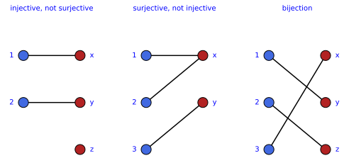
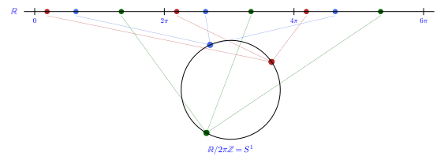
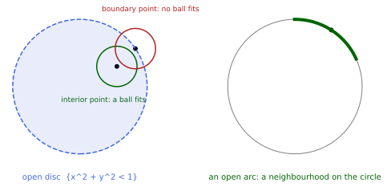
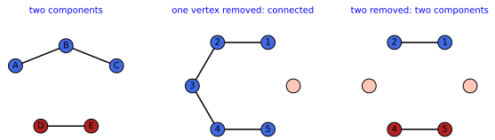

Sets, relations and topology
Mathematics starts with sets and the maps between them, continues with the two ways of building new sets, by gluing elements together and by pairing them, and reaches geometry when a set is given enough structure to speak of nearness: a topology. This chapter contains those first steps, in four sections. Sets and maps fixes the vocabulary of elements, images, injective, surjective and bijective maps and inverses. Relations, quotients and products introduces composition, equivalence relations and quotient sets, and Cartesian products. Topological spaces defines open sets, continuity and homeomorphisms, and the subspace and quotient topologies. Compact and connected spaces adds the three global properties, Hausdorff, compact and connected, that the spaces of the later chapters all share. The reader who knows this material can skim the definitions and try the exercises; every notion used later is defined here first, and every counting statement is proved. The standard references are any introductory text on sets and point-set topology; the examples here are drawn from the circle, the sphere and the rotation group, which recur throughout the book.
Sets and maps
A set is a collection of things, a map a rule assigning to each thing of one set a thing of another. The six notions of this section, sets, maps, injective, surjective and bijective maps, and inverse maps, are the vocabulary in which every later definition is phrased. Each definition is followed by three examples of increasing complexity and three exercises of increasing difficulty with hidden solutions; the counting results of the section are collected in Proposition 1, after the definition of the inverse map.
Sets
Before anything can be counted, mapped or given a shape, one has to say what a collection of objects is and when one collection sits inside another. The picture to keep in mind is a bag of labelled items, with no order and no repetition, together with the smaller bags that can be taken out of it. The first definition fixes this vocabulary and the two symbols, membership and inclusion, that recur on every page of the book.
Definition 1 (Set) A set is a collection of distinct objects, its elements; x \in X means that x is an element of X. A set Y is a subset of X, written Y \subseteq X, if every element of Y is an element of X. The set with no elements is the empty set \emptyset, and |X| denotes the number of elements of a finite set.
Veriphy. Pending.
Lean. Pending.
Sage. Pending.
The simplest sets are those whose elements can be written out in full, so that the size is a matter of counting. The three sets below are of this kind, and the last of them, the six rotations of a hexagon, is the first appearance of a set of symmetries, the kind of set on which the groups of later chapters are built.
Example 1 (Finite sets) \{1, 2, 3\} has three elements; \{0, 2, 4\} is a subset of \{0, 1, 2, 3, 4, 5\}; the set of six rotations of a regular hexagon by multiples of 60^\circ has |X| = 6.
Veriphy. Test (kernel-checked, 3 instances); script set-card-three-test.sage; Test (kernel-checked, 3 instances); script set-doubles-subset-test.sage; Test (kernel-checked, 3 instances); script set-card-rotations-test.sage.
Lean.
/-- A set listed by three distinct elements has three elements (`{1, 2, 3}` among the instances). -/
theorem card_three {α : Type} [DecidableEq α] (a b c : α) (hab : a ≠ b) (hac : a ≠ c) (hbc : b ≠ c) :
({a, b, c} : Finset α).card = 3KaluzaKlein.Sets.Sets.card_three in KaluzaKlein/PartI/Sets/Sets.lean, namespace KaluzaKlein.Sets.Sets
/-- The doubles of `0, …, n - 1` lie in `{0, …, 2n - 1}`: for `n = 3`, `{0, 2, 4} ⊆ {0, 1, 2, 3, 4, 5}`. -/
theorem doubles_subset (n : ℕ) : (Finset.range n).image (2 * ·) ⊆ Finset.range (2 * n)KaluzaKlein.Sets.Sets.doubles_subset in KaluzaKlein/PartI/Sets/Sets.lean, namespace KaluzaKlein.Sets.Sets
/-- The rotations of the plane by the multiples of `360°/n`, the `n`-th roots of unity, are `n` in number: six for
the hexagon. -/
theorem card_rotations (n : ℕ) [NeZero n] : Nat.card (rootsOfUnity n ℂ) = nKaluzaKlein.Sets.Sets.card_rotations in KaluzaKlein/PartI/Sets/Sets.lean, namespace KaluzaKlein.Sets.Sets
Sage. set-card-three-test.sage instances (α = ℕ, a = 1, b = 2, c = 3), (α = Fin 3, a = 0, b = 1, c = 2), (α = ℤ, a = -1, b = 0, c = 5). set-doubles-subset-test.sage instances (n = 3), (n = 0), (n = 5). set-card-rotations-test.sage instances (n = 6), (n = 1), (n = 4).
Most sets of analysis and physics cannot be listed element by element. The familiar number systems are the standard infinite sets, and they come with inclusions among them that will be taken for granted throughout; the lists of n real numbers are the coordinate spaces in which every chart of a manifold takes its values.
Example 2 (Number sets) \mathbb{Z} (integers), \mathbb{R} (real numbers), \mathbb{C} (complex numbers) and \mathbb{R}^n (lists of n real numbers) are infinite sets, with \mathbb{Z} \subseteq \mathbb{R} \subseteq \mathbb{C}.
Veriphy. Test (kernel-checked, 3 instances); script set-infinite-charzero-test.sage; Test (kernel-checked, 3 instances); script set-infinite-rn-test.sage; Test (kernel-checked, 3 instances); script set-inclusions-test.sage.
Lean.
/-- A ring of characteristic zero (`ℤ`, `ℝ`, `ℂ`) is infinite. -/
theorem infinite_of_charZero (K : Type) [AddMonoidWithOne K] [CharZero K] : Infinite KKaluzaKlein.Sets.Sets.infinite_of_charZero in KaluzaKlein/PartI/Sets/Sets.lean, namespace KaluzaKlein.Sets.Sets
/-- `ℝⁿ` is infinite for `n ≥ 1`. -/
theorem infinite_rn (n : ℕ) (hn : 1 ≤ n) : Infinite (Fin n → ℝ)KaluzaKlein.Sets.Sets.infinite_rn in KaluzaKlein/PartI/Sets/Sets.lean, namespace KaluzaKlein.Sets.Sets
/-- `ℤ ⊆ ℝ ⊆ ℂ`: the inclusions are injective (distinct integers are distinct reals, distinct reals distinct complex
numbers). -/
theorem int_real_complex_inclusions (a b : ℤ) (x y : ℝ) :
((a : ℝ) = b → a = b) ∧ ((x : ℂ) = y → x = y)KaluzaKlein.Sets.Sets.int_real_complex_inclusions in KaluzaKlein/PartI/Sets/Sets.lean, namespace KaluzaKlein.Sets.Sets
Sage. set-infinite-charzero-test.sage instances (K = ℤ), (K = ℝ), (K = ℂ). set-infinite-rn-test.sage instances (n = 1), (n = 2), (n = 4). set-inclusions-test.sage instances (a = 0, b = 0, x = 0, y = 0), (a = 1, b = -2, x = 1/2, y = 3), (a = 5, b = 5, x = -1, y = -1).
A set can also be specified by a condition rather than by a list or a name: its elements are the points of some ambient space that satisfy an equation. The circle, the sphere and the rotation group are all described this way, and this is how they will be handled throughout the book, as subsets of a coordinate space cut out by polynomial conditions.
Example 3 (Geometric sets) The circle S^1 = \{(X, Y) \in \mathbb{R}^2 : X^2 + Y^2 = 1\} and the sphere S^2 = \{(X, Y, Z) \in \mathbb{R}^3 : X^2 + Y^2 + Z^2 = 1\} are subsets of \mathbb{R}^2 and \mathbb{R}^3 cut out by one equation; the set SO(3) of rotations of space is a subset of the set of all 3 \times 3 real matrices, cut out by the conditions R^{\mathsf{T}} R = 1 and \det R = 1.
Veriphy. Test (kernel-checked, 3 instances); script set-mem-circle-sphere-test.sage; Test (kernel-checked, 3 instances); script set-mem-so3-test.sage.
Lean.
/-- The circle and the sphere are cut out by one equation each (membership is the equation). -/
theorem mem_circle_sphere (X Y Z : ℝ) :
((X, Y) ∈ circle ↔ X ^ 2 + Y ^ 2 = 1) ∧ (![X, Y, Z] ∈ sphere ↔ X ^ 2 + Y ^ 2 + Z ^ 2 = 1)KaluzaKlein.Sets.Sets.mem_circle_sphere in KaluzaKlein/PartI/Sets/Sets.lean, namespace KaluzaKlein.Sets.Sets
/-- `SO(3)` is cut out of the `3 × 3` matrices by `Rᵀ R = 1` and `det R = 1`. -/
theorem mem_SO3_iff (R : Matrix (Fin 3) (Fin 3) ℝ) : R ∈ SO3 ↔ Rᵀ * R = 1 ∧ R.det = 1KaluzaKlein.Sets.Sets.mem_SO3_iff in KaluzaKlein/PartI/Sets/Sets.lean, namespace KaluzaKlein.Sets.Sets
Sage. set-mem-circle-sphere-test.sage instances (X = 1, Y = 0, Z = 0), (X = 3/5, Y = 4/5, Z = 0), (X = 1, Y = 1, Z = 1). set-mem-so3-test.sage instances (R = 1), (R = !![1, 0, 0; 0, -1, 0; 0, 0, -1]), (R = !![2, 0, 0; 0, 1, 0; 0, 0, 1]).
The first exercise asks for the full inventory of subsets of a three-element set, including the empty set and the set itself. Doing it by hand shows where the count 2^3 comes from, and the Sage check introduces the enumeration style that recurs in the counting exercises of this section.
Exercise 1 (Subsets of a small set) List all subsets of \{a, b, c\} and count them.
Each element is in or out, so there are 2^3 = 8 subsets: \emptyset, \{a\}, \{b\}, \{c\}, \{a, b\}, \{a, c\}, \{b, c\}, \{a, b, c\}. In Sage:
X = Set(["a", "b", "c"])
subs = list(X.subsets())
for s in subs: print(sorted(s))
print("[PASS] the number of subsets is 2^3 = 8:", len(subs) == 8)Output:
[]
['b']
['c']
['a']
['b', 'c']
['a', 'b']
['a', 'c']
['a', 'b', 'c']
[PASS] the number of subsets is 2^3 = 8: TrueVeriphy. Test (kernel-checked, 3 instances); script set-card-powerset-test.sage.
Lean.
/-- A set with `k` elements has `2ᵏ` subsets: `2³ = 8` for `{a, b, c}`. -/
theorem card_powerset {α : Type} (s : Finset α) : s.powerset.card = 2 ^ s.cardKaluzaKlein.Sets.Sets.card_powerset in KaluzaKlein/PartI/Sets/Sets.lean, namespace KaluzaKlein.Sets.Sets
Sage. set-card-powerset-test.sage instances (α = Fin 3, s = Finset.univ), (α = ℕ, s = ∅), (α = ℕ, s = {1, 2, 3, 4}).
Inclusions between sets are the first relations that need checking rather than assuming, and each failed inclusion is witnessed by a single element. This exercise runs through the chain of number systems and then through the circle and the two discs, where the question becomes whether a boundary belongs to a region.
Exercise 2 (Inclusions among familiar sets) Decide which inclusions hold among \mathbb{N}, \mathbb{Z}, \mathbb{Q}, \mathbb{R}, \mathbb{C}, the circle S^1 \subset \mathbb{R}^2, the closed disc D = \{X^2 + Y^2 \leq 1\} and the open disc.
\mathbb{N} \subseteq \mathbb{Z} \subseteq \mathbb{Q} \subseteq \mathbb{R} \subseteq \mathbb{C}, each inclusion strict (-1 \notin \mathbb{N}, \tfrac12 \notin \mathbb{Z}, \sqrt2 \notin \mathbb{Q}, i \notin \mathbb{R}). The open disc is a subset of the closed disc, and the circle is a subset of the closed disc but disjoint from the open one: S^1 \subseteq D, S^1 \cap \{X^2 + Y^2 < 1\} = \emptyset.
Veriphy. Test (kernel-checked, 3 instances); script set-neg-not-nat-test.sage; Test (kernel-checked, 3 instances); script set-half-odd-test.sage; Test (kernel-checked, 3 instances); script set-sqrt-prime-test.sage; Test (kernel-checked, 3 instances); script set-imag-not-real-test.sage; Test (kernel-checked, 3 instances); script set-inclusions-test.sage; Test (kernel-checked, 3 instances); script set-disc-inclusions-test.sage.
Lean.
/-- A negative integer is not a natural number (`-1 ∉ ℕ`): `ℕ ⊊ ℤ`. -/
theorem neg_not_nat (z : ℤ) (hz : z < 0) : ¬ ∃ n : ℕ, (n : ℤ) = zKaluzaKlein.Sets.Sets.neg_not_nat in KaluzaKlein/PartI/Sets/Sets.lean, namespace KaluzaKlein.Sets.Sets
/-- A half-odd number is not an integer (`½ ∉ ℤ`): `ℤ ⊊ ℚ`. -/
theorem half_odd_not_int (m : ℤ) : ¬ ∃ k : ℤ, (k : ℚ) = (2 * m + 1) / 2KaluzaKlein.Sets.Sets.half_odd_not_int in KaluzaKlein/PartI/Sets/Sets.lean, namespace KaluzaKlein.Sets.Sets
/-- The square root of a prime is irrational (`√2 ∉ ℚ`): `ℚ ⊊ ℝ`. -/
theorem sqrt_prime_irrational (p : ℕ) (hp : p.Prime) : Irrational (Real.sqrt p)KaluzaKlein.Sets.Sets.sqrt_prime_irrational in KaluzaKlein/PartI/Sets/Sets.lean, namespace KaluzaKlein.Sets.Sets
/-- A non-zero multiple of `i` is not real (`i ∉ ℝ`): `ℝ ⊊ ℂ`. -/
theorem imag_not_real (y : ℝ) (hy : y ≠ 0) : ¬ ∃ x : ℝ, (x : ℂ) = y * Complex.IKaluzaKlein.Sets.Sets.imag_not_real in KaluzaKlein/PartI/Sets/Sets.lean, namespace KaluzaKlein.Sets.Sets
/-- `ℤ ⊆ ℝ ⊆ ℂ`: the inclusions are injective (distinct integers are distinct reals, distinct reals distinct complex
numbers). -/
theorem int_real_complex_inclusions (a b : ℤ) (x y : ℝ) :
((a : ℝ) = b → a = b) ∧ ((x : ℂ) = y → x = y)KaluzaKlein.Sets.Sets.int_real_complex_inclusions in KaluzaKlein/PartI/Sets/Sets.lean, namespace KaluzaKlein.Sets.Sets
/-- For the discs and circle of radius `√r`: the open disc lies in the closed one, the circle lies in the closed disc
and misses the open one (`r = 1` for `S¹ ⊆ D`, `S¹ ∩ {X² + Y² < 1} = ∅`). -/
theorem disc_inclusions (r : ℝ) :
{p : ℝ × ℝ | p.1 ^ 2 + p.2 ^ 2 < r} ⊆ {p | p.1 ^ 2 + p.2 ^ 2 ≤ r} ∧
{p : ℝ × ℝ | p.1 ^ 2 + p.2 ^ 2 = r} ⊆ {p | p.1 ^ 2 + p.2 ^ 2 ≤ r} ∧
{p : ℝ × ℝ | p.1 ^ 2 + p.2 ^ 2 = r} ∩ {p | p.1 ^ 2 + p.2 ^ 2 < r} = ∅KaluzaKlein.Sets.Sets.disc_inclusions in KaluzaKlein/PartI/Sets/Sets.lean, namespace KaluzaKlein.Sets.Sets
Sage. set-neg-not-nat-test.sage instances (z = -1), (z = -5), (z = -100). set-half-odd-test.sage instances (m = 0), (m = 1), (m = -3). set-sqrt-prime-test.sage instances (p = 2), (p = 3), (p = 5). set-imag-not-real-test.sage instances (y = 1), (y = -2), (y = 1/2). set-inclusions-test.sage instances (a = 0, b = 0, x = 0, y = 0), (a = 1, b = -2, x = 1/2, y = 3), (a = 5, b = 5, x = -1, y = -1). set-disc-inclusions-test.sage instances (r = 1), (r = 0), (r = 4).
Cutting a set out by two conditions at once is intersecting two sets, and the result can be much smaller than either. The exercise intersects the circle and the sphere with a plane, where the same slicing has very different outcomes in two and in three dimensions; the circles of latitude obtained here return when the sphere is given coordinates.
Exercise 3 (A set cut out by two equations) Describe the set of points of the circle S^1 that lie on the line Y = \tfrac12, and the set of points of the sphere S^2 with Z = \tfrac12.
On the circle X^2 + \tfrac14 = 1 gives X = \pm\tfrac{\sqrt3}{2}: a set of two points. On the sphere X^2 + Y^2 = \tfrac34: a circle of radius \tfrac{\sqrt3}{2}, a set with infinitely many elements. In Sage:
X, Y, Z = var("X Y Z")
print("circle and the line Y = 1/2:", solve([X^2 + Y^2 == 1, Y == 1/2], [X, Y]))
print("sphere and the plane Z = 1/2:", (X^2 + Y^2 + Z^2 - 1).subs(Z=1/2), "= 0, a circle of radius", sqrt(3/4))
print("[PASS] two points on the circle, a circle of radius sqrt(3)/2 on the sphere:", len(solve([X^2 + Y^2 == 1, Y == 1/2], [X, Y])) == 2)Output:
circle and the line Y = 1/2: [
[X == -1/2*sqrt(3), Y == (1/2)],
[X == 1/2*sqrt(3), Y == (1/2)]
]
sphere and the plane Z = 1/2: X^2 + Y^2 - 3/4 = 0, a circle of radius 1/2*sqrt(3)
[PASS] two points on the circle, a circle of radius sqrt(3)/2 on the sphere: TrueVeriphy. Test (kernel-checked, 3 instances); script set-circle-slice-test.sage; Recipe transcendental_rewrite, certificate set-sqrt-three-quarters.sage; Test (kernel-checked, 3 instances); script set-sphere-slice-test.sage.
Lean.
/-- The circle meets the line `Y = c` (`|c| < 1`) in the two points `(±√(1 - c²), c)`: for `c = ½`, `(±√3/2, ½)`. -/
theorem circle_slice (c : ℝ) (hc : c ^ 2 < 1) :
circle ∩ {p | p.2 = c} = {(Real.sqrt (1 - c ^ 2), c), (-Real.sqrt (1 - c ^ 2), c)}KaluzaKlein.Sets.Sets.circle_slice in KaluzaKlein/PartI/Sets/Sets.lean, namespace KaluzaKlein.Sets.Sets
/-- `√(1 - (½)²) = √3/2`: the two points are `(±√3/2, ½)`. -/
theorem sqrt_three_quarters : Real.sqrt (1 - (1 / 2 : ℝ) ^ 2) = Real.sqrt 3 / 2KaluzaKlein.Sets.Sets.sqrt_three_quarters in KaluzaKlein/PartI/Sets/Sets.lean, namespace KaluzaKlein.Sets.Sets
/-- The sphere meets the plane `Z = c` (`|c| < 1`) in a circle of radius `√(1 - c²)`, a set with infinitely many
elements: for `c = ½`, the circle `X² + Y² = ¾`. -/
theorem sphere_slice (c : ℝ) (hc : c ^ 2 < 1) :
sphere ∩ {p | p 2 = c} = {p | p 0 ^ 2 + p 1 ^ 2 = 1 - c ^ 2 ∧ p 2 = c} ∧
(sphere ∩ {p | p 2 = c}).InfiniteKaluzaKlein.Sets.Sets.sphere_slice in KaluzaKlein/PartI/Sets/Sets.lean, namespace KaluzaKlein.Sets.Sets
Sage. set-circle-slice-test.sage instances (c = 1/2), (c = 0), (c = 3/5). set-sqrt-three-quarters.sage: Sage confirms the value; rewriting 1 - ¼ = 3/2², Real.sqrt_div’ and Real.sqrt_sq close it. . set-sphere-slice-test.sage instances (c = 1/2), (c = 0), (c = -3/5).
Maps
With sets in place, the next notion is a rule that sends elements of one set to elements of another. The picture is a set of arrows, exactly one leaving each point of the domain, and the two subsets attached to such a rule, the values actually taken and the points sent into a given target region, are the objects in which continuity and quotients are later phrased.
Definition 2 (Map) A map f : X \to Y assigns to every element x of the domain X exactly one element f(x) of the codomain Y. The image of f is the subset \{f(x) : x \in X\} \subseteq Y of values actually taken, and the preimage of a subset V \subseteq Y is f^{-1}(V) = \{x \in X : f(x) \in V\}.
Veriphy. Pending.
Lean. Pending.
Sage. Pending.
When both sets are finite the map is a table, and its image and preimages are read off directly from that table. The example also gives a first count, the number of all maps between two small sets, which is the first of the counts collected in Proposition 1.
Example 4 (Maps between finite sets) f : \{1, 2, 3\} \to \{x, y\} with f(1) = f(2) = x, f(3) = y is a map with image \{x, y\} and preimage f^{-1}(\{x\}) = \{1, 2\}. There are 2^3 = 8 maps from a three-element set to a two-element set, one choice of value for each element (Proposition 1).
Veriphy. Test (kernel-checked, 3 instances); script set-finite-map-test.sage; Test (kernel-checked, 3 instances); script set-card-maps-test.sage.
Lean.
/-- `f(1) = f(2) = x`, `f(3) = y` (as `![x, x, y]` on `{0, 1, 2}`) has image `{x, y}` and `f⁻¹({x}) = {1, 2}`. -/
theorem finite_map_image_preimage {β : Type} (x y : β) (hxy : x ≠ y) :
Set.range ![x, x, y] = {x, y} ∧ ![x, x, y] ⁻¹' {x} = {0, 1}KaluzaKlein.Sets.Maps.finite_map_image_preimage in KaluzaKlein/PartI/Sets/Maps.lean, namespace KaluzaKlein.Sets.Maps
/-- There are `nᵐ` maps from an `m`-element set to an `n`-element set: `2³ = 8` from three elements to two. -/
theorem card_maps (m n : ℕ) : Fintype.card (Fin m → Fin n) = n ^ mKaluzaKlein.Sets.Maps.card_maps in KaluzaKlein/PartI/Sets/Maps.lean, namespace KaluzaKlein.Sets.Maps
Sage. set-finite-map-test.sage instances (β = Fin 2, x = 0, y = 1), (β = ℕ, x = 5, y = 7), (β = Bool, x = true, y = false). set-card-maps-test.sage instances (m = 3, n = 2), (m = 0, n = 5), (m = 2, n = 3).
The functions of calculus are maps with the real line as domain, and their images are the ranges one learns to compute. The second map of this example goes further: it wraps the line around the circle, so that its image is a curve rather than an interval and its preimages are infinite sets of angles. This wrapping map is the model for every parametrisation in the book.
Example 5 (Functions and parametrisations) \cos : \mathbb{R} \to \mathbb{R} is a map with image [-1, 1]. The map \varphi \mapsto (\cos\varphi, \sin\varphi) from \mathbb{R} to \mathbb{R}^2 has image the circle S^1: it parametrises the circle, and the preimage of the single point (1, 0) is the set of multiples of 2\pi.
Veriphy. Test (kernel-checked, 3 instances); script set-range-cos-test.sage; Test (kernel-checked, 3 instances); script set-range-wrap-test.sage; Test (kernel-checked, 3 instances); script set-wrap-preimage-test.sage.
Lean.
/-- `x ↦ a cos x` (`a ≥ 0`) has image `[-a, a]`: `cos` has image `[-1, 1]`. -/
theorem range_mul_cos (a : ℝ) (ha : 0 ≤ a) : Set.range (fun x => a * Real.cos x) = Set.Icc (-a) aKaluzaKlein.Sets.Maps.range_mul_cos in KaluzaKlein/PartI/Sets/Maps.lean, namespace KaluzaKlein.Sets.Maps
/-- `φ ↦ (r cos φ, r sin φ)` (`r ≥ 0`) has image the circle `X² + Y² = r²`: for `r = 1`, the circle `S¹`. -/
theorem range_wrap (r : ℝ) (hr : 0 ≤ r) :
Set.range (fun φ => (r * Real.cos φ, r * Real.sin φ)) = {p : ℝ × ℝ | p.1 ^ 2 + p.2 ^ 2 = r ^ 2}KaluzaKlein.Sets.Maps.range_wrap in KaluzaKlein/PartI/Sets/Maps.lean, namespace KaluzaKlein.Sets.Maps
/-- The preimage of the point `(cos a, sin a)` under `φ ↦ (cos φ, sin φ)` is `a + 2πℤ`: for `(1, 0)` (`a = 0`), the
multiples of `2π`. -/
theorem wrap_preimage (a : ℝ) : wrap ⁻¹' {wrap a} = {φ | ∃ k : ℤ, φ = a + k * (2 * Real.pi)}KaluzaKlein.Sets.Maps.wrap_preimage in KaluzaKlein/PartI/Sets/Maps.lean, namespace KaluzaKlein.Sets.Maps
Sage. set-range-cos-test.sage instances (a = 1), (a = 0), (a = 2). set-range-wrap-test.sage instances (r = 1), (r = 0), (r = 3). set-wrap-preimage-test.sage instances (a = 0), (a = Real.pi / 2), (a = Real.pi).
Maps need not start from a line or a plane; the domain can itself be a curved set or a set of matrices. The height function on the sphere and the map that sends a rotation to the point where it moves the north pole are the two examples from which the coset description of the sphere is built, and both reappear in the exercises that follow.
Example 6 (Projections and the orbit map) The projection (X, Y, Z) \mapsto Z from the sphere to \mathbb{R} (the height function) has image [-1, 1]; the map g \mapsto g \cdot (0, 0, 1), sending a rotation to the point where it moves the north pole, has domain SO(3) and image the whole sphere.
Veriphy. Test (kernel-checked, 3 instances); script set-coordinate-image-test.sage; Test (kernel-checked, 4 instances); script set-orbit-image-test.sage.
Lean.
/-- Each coordinate function on the sphere has image `[-1, 1]`: the height function `Z` (coordinate `2`) among them. -/
theorem coordinate_image_sphere (i : Fin 3) : (fun p : Fin 3 → ℝ => p i) '' sphere = Set.Icc (-1) 1KaluzaKlein.Sets.Maps.coordinate_image_sphere in KaluzaKlein/PartI/Sets/Maps.lean, namespace KaluzaKlein.Sets.Maps
/-- The orbit map sends `SO(3)` onto the sphere: a point is on the sphere exactly when some rotation moves the north
pole to it. -/
theorem orbit_image (p : Fin 3 → ℝ) : p ∈ sphere ↔ ∃ g ∈ SO3, orbit g = pKaluzaKlein.Sets.Maps.orbit_image in KaluzaKlein/PartI/Sets/Maps.lean, namespace KaluzaKlein.Sets.Maps
Sage. set-coordinate-image-test.sage instances (i = 2), (i = 0), (i = 1). set-orbit-image-test.sage instances (p = KaluzaKlein.Sets.Sets.northPole), (p = ![1, 0, 0]), (p = ![0, 0, -1]), (p = ![3/5, 0, 4/5]).

figures/map_diagram.sage with Sage’s graph module.
With Figure 1 in view, the first exercise asks the reader to read images and preimages off an explicit table of values. The point to notice is that a preimage can be empty, and that the preimage of a set of two values collects everything sent to either of them.
Exercise 4 (Image and preimage of a finite map) For f : \{1, 2, 3, 4\} \to \{a, b, c\} with f(1) = f(3) = a, f(2) = c, f(4) = a, find the image of f and the preimages of \{a\}, \{b\} and \{a, c\}.
Image \{a, c\}; f^{-1}(\{a\}) = \{1, 3, 4\}, f^{-1}(\{b\}) = \emptyset, f^{-1}(\{a, c\}) = \{1, 2, 3, 4\}. In Sage, with the map as a dictionary:
f = {1: "a", 2: "c", 3: "a", 4: "a"}
image = set(f.values())
preimage = lambda V: {x for x in f if f[x] in V}
print("image:", sorted(image))
for V in ({"a"}, {"b"}, {"a", "c"}): print("preimage of", sorted(V), ":", sorted(preimage(V)))
print("[PASS] image {a, c}; preimages {1,3,4}, {}, {1,2,3,4}:", image == {"a", "c"} and preimage({"a"}) == {1, 3, 4} and preimage({"b"}) == set() and preimage({"a", "c"}) == {1, 2, 3, 4})Output:
image: ['a', 'c']
preimage of ['a'] : [1, 3, 4]
preimage of ['b'] : []
preimage of ['a', 'c'] : [1, 2, 3, 4]
[PASS] image {a, c}; preimages {1,3,4}, {}, {1,2,3,4}: TrueVeriphy. Test (kernel-checked, 3 instances); script set-finite-map-four-test.sage.
Lean.
/-- For `f = (a, c, a, a)` on `{1, 2, 3, 4}`: image `{a, c}`, `f⁻¹{a} = {1, 3, 4}`, `f⁻¹{b} = ∅`,
`f⁻¹{a, c}` everything (the elements `1, …, 4` as `0, …, 3`). -/
theorem finite_map_four {β : Type} (a b c : β) (hab : a ≠ b) (hac : a ≠ c) (hbc : b ≠ c) :
Set.range ![a, c, a, a] = {a, c} ∧ ![a, c, a, a] ⁻¹' {a} = {0, 2, 3} ∧ ![a, c, a, a] ⁻¹' {b} = ∅ ∧
![a, c, a, a] ⁻¹' {a, c} = Set.univKaluzaKlein.Sets.Maps.finite_map_four in KaluzaKlein/PartI/Sets/Maps.lean, namespace KaluzaKlein.Sets.Maps
Sage. set-finite-map-four-test.sage instances (β = Fin 3, a = 0, b = 1, c = 2), (β = ℕ, a = 1, b = 2, c = 3), (β = Char, a = 'a', b = 'b', c = 'c').
For a function on the real line, images and preimages are computed by solving inequalities rather than by reading a table. The squaring map is the standard example in which the preimage of an interval splits into two pieces and the preimage of a point can be empty.
Exercise 5 (Image and preimage of x \mapsto x^2) Find the image of x \mapsto x^2 on \mathbb{R}, and the preimages of [1, 4] and of \{-1\}.
The image is [0, \infty). x^2 \in [1, 4] means 1 \leq |x| \leq 2, so the preimage is [-2, -1] \cup [1, 2]; the preimage of \{-1\} is empty, since no square is negative. A preimage can be empty, or larger than the set whose preimage it is.
Veriphy. Test (kernel-checked, 3 instances); script set-range-sq-test.sage; Test (kernel-checked, 3 instances); script set-sq-preimage-test.sage; Test (kernel-checked, 3 instances); script set-sq-preimage-neg-test.sage.
Lean.
/-- `x ↦ x² + c` has image `[c, ∞)`: `x²` has image `[0, ∞)`. -/
theorem range_sq_add (c : ℝ) : Set.range (fun x : ℝ => x ^ 2 + c) = Set.Ici cKaluzaKlein.Sets.Maps.range_sq_add in KaluzaKlein/PartI/Sets/Maps.lean, namespace KaluzaKlein.Sets.Maps
/-- For `0 ≤ a ≤ b`, the preimage of `[a², b²]` under `x ↦ x²` is `[-b, -a] ∪ [a, b]`: `[-2, -1] ∪ [1, 2]` for
`[1, 4]`. -/
theorem sq_preimage_Icc (a b : ℝ) (ha : 0 ≤ a) (hab : a ≤ b) :
(fun x : ℝ => x ^ 2) ⁻¹' Set.Icc (a ^ 2) (b ^ 2) = Set.Icc (-b) (-a) ∪ Set.Icc a bKaluzaKlein.Sets.Maps.sq_preimage_Icc in KaluzaKlein/PartI/Sets/Maps.lean, namespace KaluzaKlein.Sets.Maps
/-- No square is negative: the preimage of `{y}` under `x ↦ x²` is empty for `y < 0` (`y = -1`). -/
theorem sq_preimage_neg (y : ℝ) (hy : y < 0) : (fun x : ℝ => x ^ 2) ⁻¹' {y} = ∅KaluzaKlein.Sets.Maps.sq_preimage_neg in KaluzaKlein/PartI/Sets/Maps.lean, namespace KaluzaKlein.Sets.Maps
Sage. set-range-sq-test.sage instances (c = 0), (c = 1), (c = -3). set-sq-preimage-test.sage instances (a = 1, b = 2), (a = 0, b = 1), (a = 3, b = 3). set-sq-preimage-neg-test.sage instances (y = -1), (y = -1/4), (y = -9).
The same questions make sense for the height function on the sphere, where the answers are regions of a surface rather than subsets of a line. This exercise produces preimages that are caps, circles and the empty set, and the circles of latitude among them are the level sets used later to give the sphere coordinates.
Exercise 6 (Preimage of a cap) For the height function h(X, Y, Z) = Z on the sphere, describe the preimages of the interval (\tfrac12, 1], of the point 0 and of the interval [2, 3].
h^{-1}((\tfrac12, 1]) is the open cap of points above the plane Z = \tfrac12, including the north pole; h^{-1}(0) is the equator, a circle; h^{-1}([2, 3]) is empty, as |Z| \leq 1 on the sphere. The level sets h^{-1}(c) for -1 < c < 1 are the circles of latitude, which are used in Charts and atlases to see the sphere as a surface.
Veriphy. Test (kernel-checked, 3 instances); script set-height-cap-test.sage; Test (kernel-checked, 3 instances); script set-sphere-slice-test.sage; Test (kernel-checked, 3 instances); script set-height-empty-test.sage.
Lean.
/-- On the sphere, `h⁻¹((c, 1]) = {Z > c}` (since `Z ≤ 1`), and it contains the north pole for `c < 1`: the open cap
above `Z = ½`. -/
theorem height_cap (c : ℝ) (hc : c < 1) :
sphere ∩ height ⁻¹' Set.Ioc c 1 = sphere ∩ {p | c < p 2} ∧ northPole ∈ sphere ∩ height ⁻¹' Set.Ioc c 1KaluzaKlein.Sets.Maps.height_cap in KaluzaKlein/PartI/Sets/Maps.lean, namespace KaluzaKlein.Sets.Maps
/-- The sphere meets the plane `Z = c` (`|c| < 1`) in a circle of radius `√(1 - c²)`, a set with infinitely many
elements: for `c = ½`, the circle `X² + Y² = ¾`. -/
theorem sphere_slice (c : ℝ) (hc : c ^ 2 < 1) :
sphere ∩ {p | p 2 = c} = {p | p 0 ^ 2 + p 1 ^ 2 = 1 - c ^ 2 ∧ p 2 = c} ∧
(sphere ∩ {p | p 2 = c}).InfiniteKaluzaKlein.Sets.Sets.sphere_slice in KaluzaKlein/PartI/Sets/Sets.lean, namespace KaluzaKlein.Sets.Sets
/-- `|Z| ≤ 1` on the sphere, so `h⁻¹([a, b])` is empty for `1 < a`: `h⁻¹([2, 3]) = ∅`. -/
theorem height_preimage_empty (a b : ℝ) (ha : 1 < a) : sphere ∩ height ⁻¹' Set.Icc a b = ∅KaluzaKlein.Sets.Maps.height_preimage_empty in KaluzaKlein/PartI/Sets/Maps.lean, namespace KaluzaKlein.Sets.Maps
Sage. set-height-cap-test.sage instances (c = 1/2), (c = 0), (c = -1/2). set-sphere-slice-test.sage instances (c = 1/2), (c = 0), (c = -3/5). set-height-empty-test.sage instances (a = 2, b = 3), (a = 3/2, b = 1), (a = 5, b = 10).
Of the maps seen so far, some lose information, sending two points to the same value, and some do not. The first of the three properties of a map singles out the ones that do not: the picture is a set of arrows with no two arrowheads meeting, and the equivalent statement in terms of preimages, at most one point over each value, is the form that will be used in proofs.
Definition 3 (Injective map) A map f : X \to Y is injective (one-to-one) if distinct elements have distinct values: f(x) = f(x') implies x = x'. Equivalently, every point of Y has at most one preimage.
Veriphy. Test (kernel-checked, 3 instances); script set-injective-iff-test.sage.
Lean.
/-- A map is injective exactly when every point of the codomain has at most one preimage. -/
theorem injective_iff_preimage_subsingleton {X Y : Type} (f : X → Y) :
Function.Injective f ↔ ∀ y, (f ⁻¹' {y}).SubsingletonKaluzaKlein.Sets.Injective.injective_iff_preimage_subsingleton in KaluzaKlein/PartI/Sets/Injective.lean, namespace KaluzaKlein.Sets.Injective
Sage. set-injective-iff-test.sage instances (X = Fin 2, Y = Fin 2, f = id), (X = Fin 3, Y = ℕ, f = ![1, 2, 3]), (X = Fin 2, Y = ℕ, f = ![0, 0]).
For maps between finite sets injectivity can be settled by inspection, and the first map in Figure 1 is the model. The second half of the example is the pigeonhole principle in its simplest form: a set with more elements cannot be mapped injectively into a set with fewer, which is one of the counts collected in Proposition 1.
Example 7 (On finite sets) The first map of Figure 1, 1 \mapsto x, 2 \mapsto y into \{x, y, z\}, is injective. No map from a three-element set to a two-element set is injective, because three elements cannot have three distinct values among two (Proposition 1).
Veriphy. Test (kernel-checked, 3 instances); script set-pair-injective-test.sage; Test (kernel-checked, 3 instances); script set-no-injection-test.sage.
Lean.
/-- `1 ↦ x`, `2 ↦ y` is injective when `x ≠ y`. -/
theorem pair_injective {β : Type} (x y : β) (hxy : x ≠ y) : Function.Injective ![x, y]KaluzaKlein.Sets.Injective.pair_injective in KaluzaKlein/PartI/Sets/Injective.lean, namespace KaluzaKlein.Sets.Injective
/-- The pigeonhole principle: no map from an `m`-element set to an `n`-element set with `n < m` is injective (none
from three elements to two). -/
theorem no_injection (m n : ℕ) (h : n < m) (f : Fin m → Fin n) : ¬ Function.Injective fKaluzaKlein.Sets.Injective.no_injection in KaluzaKlein/PartI/Sets/Injective.lean, namespace KaluzaKlein.Sets.Injective
Sage. set-pair-injective-test.sage instances (β = Fin 3, x = 0, y = 1), (β = ℕ, x = 4, y = 9), (β = Bool, x = true, y = false). set-no-injection-test.sage instances (m = 3, n = 2, f = ![0, 1, 1]), (m = 2, n = 1, f = ![0, 0]), (m = 4, n = 3, f = ![0, 1, 2, 0]).
For functions on the real line, injectivity is the question whether a horizontal line can meet the graph twice. Exponential and square give the two possible answers, and the square’s failure, two arguments with the same value, is the obstruction that later forces coordinates on a sphere to be restricted.
Example 8 (The exponential) \exp : \mathbb{R} \to \mathbb{R} is injective, since e^{x} = e^{x'} forces x = x'; x \mapsto x^2 is not, since (-1)^2 = 1^2.
Veriphy. Test (kernel-checked, 3 instances); script set-exp-injective-test.sage; Recipe witness, certificate set-witness-search.sage.
Lean.
/-- `x ↦ e^{ax}` is injective for `a ≠ 0`: `exp` itself (`a = 1`). -/
theorem exp_mul_injective (a : ℝ) (ha : a ≠ 0) : Function.Injective (fun x => Real.exp (a * x))KaluzaKlein.Sets.Injective.exp_mul_injective in KaluzaKlein/PartI/Sets/Injective.lean, namespace KaluzaKlein.Sets.Injective
/-- `x ↦ x²` is not injective: two distinct arguments with the same square (Sage finds `(-1)² = 1²`). -/
theorem sq_not_injective : ∃ x y : ℝ, x ≠ y ∧ x ^ 2 = y ^ 2KaluzaKlein.Sets.Injective.sq_not_injective in KaluzaKlein/PartI/Sets/Injective.lean, namespace KaluzaKlein.Sets.Injective
Sage. set-exp-injective-test.sage instances (a = 1), (a = 2), (a = -1). set-witness-search.sage: Sage tries the points of a grid of small rationals (integers first) and returns the first satisfying the body; norm_num checks the body at that point. .
The wrapping map of Example 5 is not injective on the whole line, since an angle is only determined up to multiples of 2\pi, but it becomes injective once the domain is restricted to an open interval of length 2\pi. This restriction is exactly what a chart does, and the example records the reason before manifolds are introduced.
Example 9 (The angle on an arc) \varphi \mapsto (\cos\varphi, \sin\varphi) is injective on the interval (0, 2\pi), where distinct angles give distinct points, but not on all of \mathbb{R}, where \varphi and \varphi + 2\pi give the same point. Charts of manifolds (Charts and atlases) are injective for exactly this reason: they are restricted to a piece on which coordinates label points uniquely.
Veriphy. Test (kernel-checked, 3 instances); script set-wrap-injon-test.sage; Test (kernel-checked, 3 instances); script set-wrap-periodic-test.sage.
Lean.
/-- `φ ↦ (cos φ, sin φ)` is injective on every open interval `(a, a + 2π)` of length `2π`: on `(0, 2π)` for `a = 0`. -/
theorem wrap_injOn (a : ℝ) : Set.InjOn wrap (Set.Ioo a (a + 2 * Real.pi))KaluzaKlein.Sets.Injective.wrap_injOn in KaluzaKlein/PartI/Sets/Injective.lean, namespace KaluzaKlein.Sets.Injective
/-- `φ` and `φ + 2π` give the same point, so the parametrisation is not injective on `ℝ`. -/
theorem wrap_periodic (φ : ℝ) : wrap (φ + 2 * Real.pi) = wrap φKaluzaKlein.Sets.Injective.wrap_periodic in KaluzaKlein/PartI/Sets/Injective.lean, namespace KaluzaKlein.Sets.Injective
Sage. set-wrap-injon-test.sage instances (a = 0), (a = -Real.pi), (a = 1). set-wrap-periodic-test.sage instances (φ = 0), (φ = 1), (φ = Real.pi / 3).
The reader is now asked to settle injectivity for three maps given by their lists of values, and then to count all injective maps between two small sets. The count is the first instance of the falling factorial, each value having to avoid the ones already chosen, which Exercise 21 states in general.
Exercise 7 (Deciding injectivity) Which of the maps \{1, 2, 3\} \to \{a, b, c, d\} given by (a, b, c), (a, a, b), (d, c, b) (the values of 1, 2, 3 in order) are injective? Count all the injective maps from a three-element set to a four-element set.
The first and third are injective (distinct values), the second is not (1 and 2 share the value a). An injective map chooses a value for 1 among 4, then for 2 among the 3 remaining, then for 3 among 2: 4 \cdot 3 \cdot 2 = 24 injective maps. In Sage, by enumeration:
from itertools import product
maps = {"(a,b,c)": ("a", "b", "c"), "(a,a,b)": ("a", "a", "b"), "(d,c,b)": ("d", "c", "b")}
inj = lambda vals: len(set(vals)) == len(vals)
for k, v in maps.items(): print(k, "injective:", inj(v))
count = sum(1 for vals in product("abcd", repeat=3) if inj(vals))
print("[PASS] injective maps from 3 to 4 elements: 4*3*2 = 24:", count == 24, count)Output:
(a,b,c) injective: True
(a,a,b) injective: False
(d,c,b) injective: True
[PASS] injective maps from 3 to 4 elements: 4*3*2 = 24: True 24Veriphy. Test (kernel-checked, 3 instances); script set-three-maps-test.sage; Test (kernel-checked, 4 instances); script set-card-injections-test.sage.
Lean.
/-- With distinct labels `a, b, c, d`: `(a, b, c)` and `(d, c, b)` are injective, `(a, a, b)` is not. -/
theorem three_maps_injectivity {β : Type} [DecidableEq β] (a b c d : β) (hab : a ≠ b) (hac : a ≠ c) (had : a ≠ d)
(hbc : b ≠ c) (hbd : b ≠ d) (hcd : c ≠ d) :
Function.Injective ![a, b, c] ∧ ¬ Function.Injective ![a, a, b] ∧ Function.Injective ![d, c, b]KaluzaKlein.Sets.Injective.three_maps_injectivity in KaluzaKlein/PartI/Sets/Injective.lean, namespace KaluzaKlein.Sets.Injective
/-- There are `n (n - 1) ⋯ (n - m + 1)` injective maps from an `m`-element set to an `n`-element set: `4 · 3 · 2 =
24` from three elements to four. -/
theorem card_injections (m n : ℕ) : Fintype.card (Fin m ↪ Fin n) = n.descFactorial mKaluzaKlein.Sets.Injective.card_injections in KaluzaKlein/PartI/Sets/Injective.lean, namespace KaluzaKlein.Sets.Injective
Sage. set-three-maps-test.sage instances (β = Fin 4, a = 0, b = 1, c = 2, d = 3), (β = ℕ, a = 10, b = 20, c = 30, d = 40), (β = Fin 5, a = 4, b = 2, c = 0, d = 1). set-card-injections-test.sage instances (m = 3, n = 4), (m = 0, n = 5), (m = 2, n = 2), (m = 3, n = 2).
For a differentiable function a sign condition on the derivative is the practical test for injectivity, since a strictly increasing function cannot take the same value twice. This exercise applies the test to two cubics, one that passes and one that fails at three points, and lets Sage find the roots that witness the failure.
Exercise 8 (A strictly increasing function is injective) Show that f(x) = x^3 + x is injective on \mathbb{R}, and that g(x) = x^3 - x is not.
f'(x) = 3x^2 + 1 > 0, so f is strictly increasing: x < x' gives f(x) < f(x'), and equal values force equal arguments. For g, g(-1) = g(0) = g(1) = 0: three arguments with the same value. In Sage, the derivative and the three roots:
x = var("x")
f = x^3 + x; g = x^3 - x
print("f' =", diff(f, x), "> 0 for all x")
print("roots of g:", solve(g == 0, x))
print("[PASS] f' = 3x^2 + 1 is positive and g has three zeros:", bool(diff(f, x) == 3 * x^2 + 1) and len(solve(g == 0, x)) == 3)Output:
f' = 3*x^2 + 1 > 0 for all x
roots of g: [
x == -1,
x == 1,
x == 0
]
[PASS] f' = 3x^2 + 1 is positive and g has three zeros: TrueVeriphy. Recipe derivative, certificate set-deriv.sage; Test (kernel-checked, 3 instances); script set-cubic-strictmono-test.sage; Recipe witness, certificate set-witness-search.sage.
Lean.
/-- `f'(x) = 3x² + 1` for `f(x) = x³ + x`. -/
theorem deriv_cubic (x : ℝ) : deriv (fun x : ℝ => x ^ 3 + x) x = 3 * x ^ 2 + 1KaluzaKlein.Sets.Injective.deriv_cubic in KaluzaKlein/PartI/Sets/Injective.lean, namespace KaluzaKlein.Sets.Injective
/-- `x ↦ x³ + ax` (`a ≥ 0`) is strictly increasing, hence injective: `x³ + x` among them. -/
theorem cubic_strictMono (a : ℝ) (ha : 0 ≤ a) : StrictMono (fun x : ℝ => x ^ 3 + a * x) ∧
Function.Injective (fun x : ℝ => x ^ 3 + a * x)KaluzaKlein.Sets.Injective.cubic_strictMono in KaluzaKlein/PartI/Sets/Injective.lean, namespace KaluzaKlein.Sets.Injective
/-- `g(x) = x³ - x` has three distinct roots (Sage finds `-1, 0, 1`). -/
theorem cubic_three_roots : ∃ x y z : ℝ, x < y ∧ y < z ∧ x ^ 3 - x = 0 ∧ y ^ 3 - y = 0 ∧ z ^ 3 - z = 0KaluzaKlein.Sets.Injective.cubic_three_roots in KaluzaKlein/PartI/Sets/Injective.lean, namespace KaluzaKlein.Sets.Injective
/-- `g(x) = x³ - x` is not injective: two distinct arguments with the same value. -/
theorem cubic_not_injective : ∃ x y : ℝ, x ≠ y ∧ x ^ 3 - x = y ^ 3 - yKaluzaKlein.Sets.Injective.cubic_not_injective in KaluzaKlein/PartI/Sets/Injective.lean, namespace KaluzaKlein.Sets.Injective
Sage. set-deriv.sage: Sage differentiates and checks the claimed value; mathlib’s derivative lemmas, composed, prove HasDerivAt at the point; deriv follows. . set-cubic-strictmono-test.sage instances (a = 1), (a = 0), (a = 2). set-witness-search.sage: Sage tries the points of a grid of small rationals (integers first) and returns the first satisfying the body; norm_num checks the body at that point. .
The restriction that rescued the circle parametrisation in Example 9 has a two-dimensional analogue for the sphere. Spherical coordinates are injective on an open rectangle of angles but collapse an entire edge of the closed rectangle to the north pole; the exercise locates the collapse precisely, and that is why the spherical chart of a later chapter leaves out the poles.
Exercise 9 (Where spherical coordinates are injective) Is (\theta, \varphi) \mapsto (\sin\theta\cos\varphi, \sin\theta\sin\varphi, \cos\theta) injective on (0, \pi) \times (0, 2\pi)? On [0, \pi] \times [0, 2\pi)?
On (0, \pi) \times (0, 2\pi) it is: \cos\theta determines \theta in (0, \pi), and then \sin\theta > 0 lets (\cos\varphi, \sin\varphi) determine \varphi in (0, 2\pi). On [0, \pi] \times [0, 2\pi) it is not: every (0, \varphi) is sent to the north pole (0, 0, 1), so the pole has infinitely many preimages. This is why the spherical chart of Charts and atlases excludes the poles.
Veriphy. Test (kernel-checked, 3 instances); script set-sph-injon-test.sage; Test (kernel-checked, 3 instances); script set-sph-pole-test.sage.
Lean.
/-- Spherical coordinates are injective on `(0, π) × (a, a + 2π)`: on `(0, π) × (0, 2π)` for `a = 0`. -/
theorem sph_injOn (a : ℝ) :
Set.InjOn (fun q : ℝ × ℝ => sph q.1 q.2) (Set.Ioo 0 Real.pi ×ˢ Set.Ioo a (a + 2 * Real.pi))KaluzaKlein.Sets.Injective.sph_injOn in KaluzaKlein/PartI/Sets/Injective.lean, namespace KaluzaKlein.Sets.Injective
/-- Every `(0, φ)` is sent to the north pole: on `[0, π] × [0, 2π)` the pole has infinitely many preimages. -/
theorem sph_pole (φ : ℝ) : sph 0 φ = northPoleKaluzaKlein.Sets.Injective.sph_pole in KaluzaKlein/PartI/Sets/Injective.lean, namespace KaluzaKlein.Sets.Injective
Sage. set-sph-injon-test.sage instances (a = 0), (a = -Real.pi), (a = 1). set-sph-pole-test.sage instances (φ = 0), (φ = 1), (φ = Real.pi).
The second property of a map looks at the other end of the arrows: whether every point of the codomain is reached. The picture is that no element of the target is left without an incoming arrow, and the condition is simply that the image, defined in Definition 2, is the whole codomain.
Definition 4 (Surjective map) A map f : X \to Y is surjective (onto) if its image is all of Y: every y \in Y equals f(x) for at least one x.
Veriphy. Test (kernel-checked, 3 instances); script set-surjective-iff-test.sage.
Lean.
/-- A map is surjective exactly when its image is the whole codomain. -/
theorem surjective_iff_range {X Y : Type} (f : X → Y) : Function.Surjective f ↔ Set.range f = Set.univKaluzaKlein.Sets.Surjective.surjective_iff_range in KaluzaKlein/PartI/Sets/Surjective.lean, namespace KaluzaKlein.Sets.Surjective
Sage. set-surjective-iff-test.sage instances (X = Fin 2, Y = Fin 2, f = id), (X = Fin 3, Y = Fin 2, f = ![0, 0, 1]), (X = Fin 2, Y = Fin 3, f = ![0, 1]).
On a finite set, surjectivity is checked by seeing whether every target value appears in the table, and the second map of Figure 1 shows the typical case. Counting the surjective maps among the eight maps from three elements to two is a matter of excluding the constant maps, a count that returns in Exercise 10.
Example 10 (On finite sets) The second map of Figure 1, 1, 2 \mapsto x, 3 \mapsto y, is surjective onto \{x, y\}. Of the eight maps from a three-element set to \{x, y\}, six are surjective, all but the two constant maps.
Veriphy. Test (kernel-checked, 3 instances); script set-finite-surjective-test.sage; Test (kernel-checked, 3 instances); script set-card-surjections-two-test.sage.
Lean.
/-- `1, 2 ↦ x`, `3 ↦ y` is surjective onto a codomain whose elements are `x` and `y`. -/
theorem finite_map_surjective {β : Type} (x y : β) (h : ∀ b, b = x ∨ b = y) : Function.Surjective ![x, x, y]KaluzaKlein.Sets.Surjective.finite_map_surjective in KaluzaKlein/PartI/Sets/Surjective.lean, namespace KaluzaKlein.Sets.Surjective
/-- Of the `2ᵐ` maps from an `m`-element set (`m ≥ 1`) to a two-element set, all but the two constant maps are
surjective: `8 - 2 = 6` for `m = 3`, `16 - 2 = 14` for `m = 4`. -/
theorem card_surjections_two (m : ℕ) (hm : 1 ≤ m) :
(Finset.univ.filter fun f : Fin m → Fin 2 => Function.Surjective f).card = 2 ^ m - 2KaluzaKlein.Sets.Surjective.card_surjections_two in KaluzaKlein/PartI/Sets/Surjective.lean, namespace KaluzaKlein.Sets.Surjective
Sage. set-finite-surjective-test.sage instances (β = Fin 2, x = 0, y = 1), (β = Bool, x = true, y = false), (β = Fin 2, x = 1, y = 0). set-card-surjections-two-test.sage instances (m = 3), (m = 1), (m = 4).
For functions on the real line, surjectivity onto \mathbb{R} asks whether every horizontal line meets the graph at least once. The cube, the square and the exponential give three different images, and comparing them with Example 8 shows that injectivity and surjectivity are independent properties.
Example 11 (Polynomials) x \mapsto x^3 is surjective onto \mathbb{R} (every real number has a cube root); x \mapsto x^2 is not (its image misses the negative numbers); \exp is not (its image is the positive numbers).
Veriphy. Test (kernel-checked, 3 instances); script set-odd-pow-test.sage; Test (kernel-checked, 3 instances); script set-sq-preimage-neg-test.sage; Test (kernel-checked, 3 instances); script set-range-exp-test.sage.
Lean.
/-- Odd powers are surjective onto `ℝ` (every real number has a cube root, `k = 1`). -/
theorem odd_pow_surjective (k : ℕ) : Function.Surjective (fun x : ℝ => x ^ (2 * k + 1))KaluzaKlein.Sets.Surjective.odd_pow_surjective in KaluzaKlein/PartI/Sets/Surjective.lean, namespace KaluzaKlein.Sets.Surjective
/-- No square is negative: the preimage of `{y}` under `x ↦ x²` is empty for `y < 0` (`y = -1`). -/
theorem sq_preimage_neg (y : ℝ) (hy : y < 0) : (fun x : ℝ => x ^ 2) ⁻¹' {y} = ∅KaluzaKlein.Sets.Maps.sq_preimage_neg in KaluzaKlein/PartI/Sets/Maps.lean, namespace KaluzaKlein.Sets.Maps
/-- `x ↦ a eˣ` (`a > 0`) has image the positive numbers: `exp` is not surjective onto `ℝ`. -/
theorem range_mul_exp (a : ℝ) (ha : 0 < a) : Set.range (fun x => a * Real.exp x) = Set.Ioi 0KaluzaKlein.Sets.Surjective.range_mul_exp in KaluzaKlein/PartI/Sets/Surjective.lean, namespace KaluzaKlein.Sets.Surjective
Sage. set-odd-pow-test.sage instances (k = 0), (k = 1), (k = 2). set-sq-preimage-neg-test.sage instances (y = -1), (y = -1/4), (y = -9). set-range-exp-test.sage instances (a = 1), (a = 2), (a = 1/2).
The wrapping map onto the circle and the orbit map onto the sphere reach every point of their targets, so they are surjective even though neither is injective. The surjectivity of the orbit map is what allows the sphere to be described as a quotient of the rotation group, the theme that Section 1.2 takes up.
Example 12 (Parametrisations and orbit maps) \varphi \mapsto (\cos\varphi, \sin\varphi) is surjective from \mathbb{R} onto the circle, and g \mapsto g \cdot (0, 0, 1) is surjective from SO(3) onto the sphere, since every point of the sphere is reached by some rotation of the north pole. This surjection is the starting point of the coset description of the sphere (Coset spaces).
Veriphy. Test (kernel-checked, 3 instances); script set-range-wrap-test.sage; Test (kernel-checked, 4 instances); script set-orbit-image-test.sage.
Lean.
/-- `φ ↦ (r cos φ, r sin φ)` (`r ≥ 0`) has image the circle `X² + Y² = r²`: for `r = 1`, the circle `S¹`. -/
theorem range_wrap (r : ℝ) (hr : 0 ≤ r) :
Set.range (fun φ => (r * Real.cos φ, r * Real.sin φ)) = {p : ℝ × ℝ | p.1 ^ 2 + p.2 ^ 2 = r ^ 2}KaluzaKlein.Sets.Maps.range_wrap in KaluzaKlein/PartI/Sets/Maps.lean, namespace KaluzaKlein.Sets.Maps
/-- The orbit map sends `SO(3)` onto the sphere: a point is on the sphere exactly when some rotation moves the north
pole to it. -/
theorem orbit_image (p : Fin 3 → ℝ) : p ∈ sphere ↔ ∃ g ∈ SO3, orbit g = pKaluzaKlein.Sets.Maps.orbit_image in KaluzaKlein/PartI/Sets/Maps.lean, namespace KaluzaKlein.Sets.Maps
Sage. set-range-wrap-test.sage instances (r = 1), (r = 0), (r = 3). set-orbit-image-test.sage instances (p = KaluzaKlein.Sets.Sets.northPole), (p = ![1, 0, 0]), (p = ![0, 0, -1]), (p = ![3/5, 0, 4/5]).
Surjections are harder to count than arbitrary maps, because the maps that miss a value have to be excluded. The exercise does this for two small cases, one by excluding the constant maps and one where surjective turns out to mean bijective, and an enumeration in Sage displays the maps behind each count.
Exercise 10 (Counting surjections) How many of the 2^4 = 16 maps from \{1, 2, 3, 4\} to \{x, y\} are surjective? And how many maps from a three-element set to a three-element set are surjective?
All but the two constant maps: 16 - 2 = 14. From three elements to three, a map is surjective exactly when it is injective, hence a bijection: 3! = 6. In Sage:
from itertools import product
s42 = sum(1 for v in product("xy", repeat=4) if set(v) == {"x", "y"})
s33 = sum(1 for v in product("abc", repeat=3) if set(v) == {"a", "b", "c"})
print("surjections 4 -> 2:", s42, "; surjections 3 -> 3:", s33)
print("[PASS] 14 and 6:", s42 == 14 and s33 == 6)Output:
surjections 4 -> 2: 14 ; surjections 3 -> 3: 6
[PASS] 14 and 6: TrueVeriphy. Test (kernel-checked, 3 instances); script set-card-surjections-two-test.sage; Test (kernel-checked, 3 instances); script set-surj-iff-inj-test.sage; Test (kernel-checked, 3 instances); script set-card-surj-self-test.sage.
Lean.
/-- Of the `2ᵐ` maps from an `m`-element set (`m ≥ 1`) to a two-element set, all but the two constant maps are
surjective: `8 - 2 = 6` for `m = 3`, `16 - 2 = 14` for `m = 4`. -/
theorem card_surjections_two (m : ℕ) (hm : 1 ≤ m) :
(Finset.univ.filter fun f : Fin m → Fin 2 => Function.Surjective f).card = 2 ^ m - 2KaluzaKlein.Sets.Surjective.card_surjections_two in KaluzaKlein/PartI/Sets/Surjective.lean, namespace KaluzaKlein.Sets.Surjective
/-- A map from a finite set to itself is surjective exactly when it is injective (a bijection). -/
theorem surjective_iff_injective_self (n : ℕ) (f : Fin n → Fin n) :
Function.Surjective f ↔ Function.Injective fKaluzaKlein.Sets.Surjective.surjective_iff_injective_self in KaluzaKlein/PartI/Sets/Surjective.lean, namespace KaluzaKlein.Sets.Surjective
/-- There are `n!` surjective maps from an `n`-element set to itself: `3! = 6`. -/
theorem card_surjections_self (n : ℕ) :
(Finset.univ.filter fun f : Fin n → Fin n => Function.Surjective f).card = n.factorialKaluzaKlein.Sets.Surjective.card_surjections_self in KaluzaKlein/PartI/Sets/Surjective.lean, namespace KaluzaKlein.Sets.Surjective
Sage. set-card-surjections-two-test.sage instances (m = 3), (m = 1), (m = 4). set-surj-iff-inj-test.sage instances (n = 3, f = ![1, 2, 0]), (n = 0, f = ![]), (n = 3, f = ![0, 0, 1]). set-card-surj-self-test.sage instances (n = 3), (n = 0), (n = 2).
Whether a map is surjective depends on the codomain declared for it, not on the rule alone. This exercise asks for the images of two familiar functions and then for the codomains onto which they are surjective, making the point that any map becomes surjective once its codomain is shrunk to its image.
Exercise 11 (The image of a function) Find the image of \sin : \mathbb{R} \to \mathbb{R} and of x \mapsto x^2 + 1; onto which codomains are they surjective?
\sin has image [-1, 1]: it is surjective onto [-1, 1] but not onto \mathbb{R}. x^2 + 1 has image [1, \infty). Surjectivity depends on the codomain chosen: every map is surjective onto its image.
Veriphy. Test (kernel-checked, 3 instances); script set-range-sin-test.sage; Test (kernel-checked, 3 instances); script set-sin-not-surj-test.sage; Test (kernel-checked, 3 instances); script set-range-sq-test.sage; Test (kernel-checked, 3 instances); script set-surj-onto-range-test.sage.
Lean.
/-- `x ↦ a sin x` (`a ≥ 0`) has image `[-a, a]`: `sin` has image `[-1, 1]`. -/
theorem range_mul_sin (a : ℝ) (ha : 0 ≤ a) : Set.range (fun x => a * Real.sin x) = Set.Icc (-a) aKaluzaKlein.Sets.Surjective.range_mul_sin in KaluzaKlein/PartI/Sets/Surjective.lean, namespace KaluzaKlein.Sets.Surjective
/-- `x ↦ a sin x` (`a ≥ 0`) is not surjective onto `ℝ` (it misses `a + 1`). -/
theorem mul_sin_not_surjective (a : ℝ) (ha : 0 ≤ a) : ¬ Function.Surjective (fun x => a * Real.sin x)KaluzaKlein.Sets.Surjective.mul_sin_not_surjective in KaluzaKlein/PartI/Sets/Surjective.lean, namespace KaluzaKlein.Sets.Surjective
/-- `x ↦ x² + c` has image `[c, ∞)`: `x²` has image `[0, ∞)`. -/
theorem range_sq_add (c : ℝ) : Set.range (fun x : ℝ => x ^ 2 + c) = Set.Ici cKaluzaKlein.Sets.Maps.range_sq_add in KaluzaKlein/PartI/Sets/Maps.lean, namespace KaluzaKlein.Sets.Maps
/-- Every map is surjective onto its image. -/
theorem surjective_onto_range {X Y : Type} (f : X → Y) : Function.Surjective (Set.rangeFactorization f)KaluzaKlein.Sets.Surjective.surjective_onto_range in KaluzaKlein/PartI/Sets/Surjective.lean, namespace KaluzaKlein.Sets.Surjective
Sage. set-range-sin-test.sage instances (a = 1), (a = 0), (a = 2). set-sin-not-surj-test.sage instances (a = 1), (a = 0), (a = 3). set-range-sq-test.sage instances (c = 0), (c = 1), (c = -3). set-surj-onto-range-test.sage instances (X = Fin 2, Y = Fin 2, f = id), (X = ℝ, Y = ℝ, f = Real.sin), (X = ℝ, Y = ℝ, f = fun x => x ^ 2 + 1).
The orbit maps of Example 12 behave differently in the plane and in space, and the exercise asks the reader to find out how. For plane rotations acting on a point of the circle the orbit map is a bijection, while in space every point of the sphere has a whole circle of rotations above it; these preimages are the first cosets of the book.
Exercise 12 (A surjection with equal-size preimages) Show that g \mapsto g \cdot (1, 0) from SO(2), the rotations of the plane, onto the circle is a bijection, and that g \mapsto g \cdot (0, 0, 1) from SO(3) onto the sphere has, for every point, a preimage that is a copy of SO(2).
A plane rotation by \alpha sends (1, 0) to (\cos\alpha, \sin\alpha), each point of the circle once: a bijection. In space, the rotations sending the pole to a given point p are g_0 h with g_0 one such rotation and h any rotation about the Z-axis, which fixes the pole: the preimage of p is a copy of SO(2). These preimages are the cosets of Cosets and quotient groups.
Veriphy. Test (kernel-checked, 3 instances); script set-so2-orbit-test.sage; Test (kernel-checked, 3 instances); script set-stabilizer-test.sage; Test (kernel-checked, 3 instances); script set-orbit-fiber-test.sage.
Lean.
/-- `g ↦ g · (1, 0)` from `SO(2)` onto the circle is a bijection: each point of the circle is the image of exactly one
plane rotation. -/
theorem SO2_orbit_bijective (p : ℝ × ℝ) (hp : p ∈ circle) : ∃! g, g ∈ SO2 ∧ (g 0 0, g 1 0) = pKaluzaKlein.Sets.Surjective.SO2_orbit_bijective in KaluzaKlein/PartI/Sets/Surjective.lean, namespace KaluzaKlein.Sets.Surjective
/-- The rotations fixing the north pole are exactly the rotations `Rz α` about the `Z`-axis, a copy of `SO(2)`. -/
theorem stabilizer_eq (h : Matrix (Fin 3) (Fin 3) ℝ) : (h ∈ SO3 ∧ orbit h = northPole) ↔ ∃ α, h = Rz αKaluzaKlein.Sets.Surjective.stabilizer_eq in KaluzaKlein/PartI/Sets/Surjective.lean, namespace KaluzaKlein.Sets.Surjective
/-- The rotations sending the pole where `g₀` does are the `g₀ h` with `h` fixing the pole: the preimage of every
point is a copy of the rotations about the `Z`-axis. -/
theorem orbit_fiber (g₀ g : Matrix (Fin 3) (Fin 3) ℝ) (hg₀ : g₀ ∈ SO3) :
(g ∈ SO3 ∧ orbit g = orbit g₀) ↔ ∃ α, g = g₀ * Rz αKaluzaKlein.Sets.Surjective.orbit_fiber in KaluzaKlein/PartI/Sets/Surjective.lean, namespace KaluzaKlein.Sets.Surjective
Sage. set-so2-orbit-test.sage instances (p = (1, 0)), (p = (0, 1)), (p = (3/5, 4/5)). set-stabilizer-test.sage instances (the one instance), (the one instance), (the one instance). set-orbit-fiber-test.sage instances (g₀ = 1, g = 1), (g₀ = 1, g = !![0, -1, 0; 1, 0, 0; 0, 0, 1]), (g₀ = !![1, 0, 0; 0, 0, -1; 0, 1, 0], g = !![1, 0, 0; 0, 0, -1; 0, 1, 0]).
A map with both properties sets up a perfect correspondence: every element of the target is hit, and hit exactly once. The picture is a pairing of the two sets, arrow by arrow, and the consequence recorded in the definition, that paired sets have the same number of elements, is the basis of every count in this section.
Definition 5 (Bijection) A map is a bijection if it is both injective and surjective, so that every element of Y is the value of exactly one element of X. Two sets related by a bijection have the same number of elements.
Veriphy. Test (kernel-checked, 3 instances); script set-bijective-iff-test.sage; Test (kernel-checked, 3 instances); script set-card-bijective-test.sage.
Lean.
/-- A map is a bijection exactly when every element of the codomain is the value of exactly one element. -/
theorem bijective_iff_existsUnique {X Y : Type} (f : X → Y) : Function.Bijective f ↔ ∀ y, ∃! x, f x = yKaluzaKlein.Sets.Bijective.bijective_iff_existsUnique in KaluzaKlein/PartI/Sets/Bijective.lean, namespace KaluzaKlein.Sets.Bijective
/-- Finite sets related by a bijection have the same number of elements. -/
theorem card_eq_of_bijective {X Y : Type} [Fintype X] [Fintype Y] (f : X → Y) (hf : Function.Bijective f) :
Fintype.card X = Fintype.card YKaluzaKlein.Sets.Bijective.card_eq_of_bijective in KaluzaKlein/PartI/Sets/Bijective.lean, namespace KaluzaKlein.Sets.Bijective
Sage. set-bijective-iff-test.sage instances (X = Fin 2, Y = Fin 2, f = id), (X = ℤ, Y = ℤ, f = fun k => k + 1), (X = Fin 3, Y = Fin 2, f = ![0, 0, 1]). set-card-bijective-test.sage instances (X = Fin 3, Y = Fin 3, f = id), (X = Bool, Y = Fin 2, f = fun b => if b then 1 else 0), (X = Fin 3, Y = Fin 3, f = ![2, 0, 1]).
The third map of Figure 1 pairs two three-element sets, and when a finite set is paired with itself the bijection is a rearrangement of its elements. These rearrangements are counted by the factorial, and their count is among the statements of Proposition 1 below.
Example 13 (Permutations) The third map of Figure 1 is a bijection of \{1, 2, 3\} onto \{x, y, z\}. A bijection of a finite set to itself is a permutation; there are 3! = 6 permutations of a three-element set (Proposition 1).
Veriphy. Test (kernel-checked, 3 instances); script set-three-bijective-test.sage; Test (kernel-checked, 3 instances); script set-card-perm-test.sage.
Lean.
/-- `1 ↦ x`, `2 ↦ y`, `3 ↦ z` is a bijection onto `{x, y, z}` (distinct labels exhausting the codomain). -/
theorem three_bijective {β : Type} (x y z : β) (hxy : x ≠ y) (hxz : x ≠ z) (hyz : y ≠ z)
(h : ∀ b, b = x ∨ b = y ∨ b = z) : Function.Bijective ![x, y, z]KaluzaKlein.Sets.Bijective.three_bijective in KaluzaKlein/PartI/Sets/Bijective.lean, namespace KaluzaKlein.Sets.Bijective
/-- There are `n!` permutations of an `n`-element set: `3! = 6`, `4! = 24`. -/
theorem card_perm (n : ℕ) : Fintype.card (Equiv.Perm (Fin n)) = n.factorialKaluzaKlein.Sets.Bijective.card_perm in KaluzaKlein/PartI/Sets/Bijective.lean, namespace KaluzaKlein.Sets.Bijective
Sage. set-three-bijective-test.sage instances (β = Fin 3, x = 0, y = 1, z = 2), (β = Fin 3, x = 2, y = 0, z = 1), (β = Fin 3, x = 1, y = 2, z = 0). set-card-perm-test.sage instances (n = 3), (n = 0), (n = 4).
On the real line a bijection is a function whose graph meets every horizontal line exactly once, and a suitable choice of codomain can make this true. The exponential onto the positive numbers and the tangent onto the whole line are two examples of this that will serve as homeomorphisms in Section 1.3.
Example 14 (Bijections of the line) x \mapsto x^3 and x \mapsto 2x + 1 are bijections of \mathbb{R}; \exp is a bijection of \mathbb{R} onto the positive numbers; \tan is a bijection of (-\pi/2, \pi/2) onto \mathbb{R}.
Veriphy. Test (kernel-checked, 3 instances); script set-odd-pow-bijective-test.sage; Test (kernel-checked, 3 instances); script set-affine-bijective-test.sage; Test (kernel-checked, 3 instances); script set-exp-bijon-test.sage; Test (kernel-checked, 3 instances); script set-tan-bijon-test.sage.
Lean.
/-- Odd powers are bijections of `ℝ` (`x³` for `k = 1`). -/
theorem odd_pow_bijective (k : ℕ) : Function.Bijective (fun x : ℝ => x ^ (2 * k + 1))KaluzaKlein.Sets.Bijective.odd_pow_bijective in KaluzaKlein/PartI/Sets/Bijective.lean, namespace KaluzaKlein.Sets.Bijective
/-- `x ↦ ax + b` (`a ≠ 0`) is a bijection of `ℝ`: `2x + 1` among them. -/
theorem affine_bijective (a b : ℝ) (ha : a ≠ 0) : Function.Bijective (fun x : ℝ => a * x + b)KaluzaKlein.Sets.Bijective.affine_bijective in KaluzaKlein/PartI/Sets/Bijective.lean, namespace KaluzaKlein.Sets.Bijective
/-- `x ↦ a eˣ` (`a > 0`) is a bijection of `ℝ` onto the positive numbers: `exp` for `a = 1`. -/
theorem mul_exp_bijOn (a : ℝ) (ha : 0 < a) : Set.BijOn (fun x => a * Real.exp x) Set.univ (Set.Ioi 0)KaluzaKlein.Sets.Bijective.mul_exp_bijOn in KaluzaKlein/PartI/Sets/Bijective.lean, namespace KaluzaKlein.Sets.Bijective
/-- `x ↦ a tan x` (`a ≠ 0`) is a bijection of `(-π/2, π/2)` onto `ℝ`: `tan` for `a = 1`. -/
theorem mul_tan_bijOn (a : ℝ) (ha : a ≠ 0) :
Set.BijOn (fun x => a * Real.tan x) (Set.Ioo (-(Real.pi / 2)) (Real.pi / 2)) Set.univKaluzaKlein.Sets.Bijective.mul_tan_bijOn in KaluzaKlein/PartI/Sets/Bijective.lean, namespace KaluzaKlein.Sets.Bijective
Sage. set-odd-pow-bijective-test.sage instances (k = 0), (k = 1), (k = 2). set-affine-bijective-test.sage instances (a = 2, b = 1), (a = 1, b = 0), (a = -3, b = 5). set-exp-bijon-test.sage instances (a = 1), (a = 2), (a = 1/2). set-tan-bijon-test.sage instances (a = 1), (a = 2), (a = -1).
Restricting the wrapping map to an open interval of angles made it injective in Example 9; shrinking the codomain to the circle minus one point makes it a bijection as well. The result is a one-to-one labelling of points by angles, which is what a chart is, and the inverse of this labelling appears in Example 18.
Example 15 (Coordinates on the circle minus a point) \varphi \mapsto (\cos\varphi, \sin\varphi) restricted to (0, 2\pi) is a bijection onto the circle minus the point (1, 0): every other point has exactly one angle in that range. A chart (Charts and atlases) is a bijection of this kind.
Veriphy. Test (kernel-checked, 3 instances); script set-wrap-bijon-test.sage.
Lean.
/-- `φ ↦ (cos φ, sin φ)` restricted to `(a, a + 2π)` is a bijection onto the circle minus the point of angle `a`: on
`(0, 2π)` onto the circle minus `(1, 0)`. -/
theorem wrap_bijOn (a : ℝ) : Set.BijOn wrap (Set.Ioo a (a + 2 * Real.pi)) (circle \ {wrap a})KaluzaKlein.Sets.Bijective.wrap_bijOn in KaluzaKlein/PartI/Sets/Bijective.lean, namespace KaluzaKlein.Sets.Bijective
Sage. set-wrap-bijon-test.sage instances (a = 0), (a = Real.pi), (a = -1).
The reader is asked to count the bijections of a four-element set to itself and to pick out those that leave one element fixed. The second count shows how the permutations of a smaller set sit inside those of a larger one, and Sage’s symmetric group does the listing.
Exercise 13 (Permutations of four elements) Count the bijections of \{1, 2, 3, 4\} to itself and list the ones that fix 4.
4! = 24 bijections; those fixing 4 are the 3! = 6 permutations of \{1, 2, 3\}. In Sage, with SymmetricGroup:
G = SymmetricGroup(4)
fix4 = [g for g in G if g(4) == 4]
print("order of S_4:", G.order()); print("permutations fixing 4:", [str(g) for g in fix4])
print("[PASS] 24 bijections, 6 fixing 4:", G.order() == 24 and len(fix4) == 6)Output:
order of S_4: 24
permutations fixing 4: ['()', '(1,3,2)', '(1,2,3)', '(1,2)', '(2,3)', '(1,3)']
[PASS] 24 bijections, 6 fixing 4: TrueVeriphy. Test (kernel-checked, 3 instances); script set-card-perm-test.sage; Test (kernel-checked, 3 instances); script set-card-perm-fixing-test.sage.
Lean.
/-- There are `n!` permutations of an `n`-element set: `3! = 6`, `4! = 24`. -/
theorem card_perm (n : ℕ) : Fintype.card (Equiv.Perm (Fin n)) = n.factorialKaluzaKlein.Sets.Bijective.card_perm in KaluzaKlein/PartI/Sets/Bijective.lean, namespace KaluzaKlein.Sets.Bijective
/-- The permutations of an `(n + 1)`-element set fixing one element are the `n!` permutations of the others: the
`3! = 6` permutations of `{1, 2, 3, 4}` fixing `4`. -/
theorem card_perm_fixing (n : ℕ) (a : Fin (n + 1)) :
Fintype.card {σ : Equiv.Perm (Fin (n + 1)) // σ a = a} = n.factorialKaluzaKlein.Sets.Bijective.card_perm_fixing in KaluzaKlein/PartI/Sets/Bijective.lean, namespace KaluzaKlein.Sets.Bijective
Sage. set-card-perm-test.sage instances (n = 3), (n = 0), (n = 4). set-card-perm-fixing-test.sage instances (n = 3, a = 3), (n = 0, a = 0), (n = 2, a = 0).
For a function given by a formula, the cleanest proof that it is a bijection is to solve f(x) = y and find exactly one solution for each y. The exercise does this for an affine map of the line, and then shows that the same formula, read on the integers, loses surjectivity: the domain matters as much as the rule.
Exercise 14 (An affine bijection) Show that f(x) = 2x + 1 is a bijection of \mathbb{R} by exhibiting the unique solution of f(x) = y for each y, and decide whether x \mapsto 2x + 1 is a bijection of \mathbb{Z}.
2x + 1 = y has the unique real solution x = (y - 1)/2, so f is injective (one solution at most) and surjective (one solution at least). On \mathbb{Z} the equation has no solution for even y: the map is injective but not surjective, its image being the odd integers.
Veriphy. Test (kernel-checked, 3 instances); script set-affine-solution-test.sage; Recipe ideal_membership, certificate ideal_membership.sage; Test (kernel-checked, 3 instances); script set-int-affine-test.sage.
Lean.
/-- `ax + b = y` (`a ≠ 0`) has the unique solution `x = (y - b)/a`: `x = (y - 1)/2` for `2x + 1`. -/
theorem affine_unique_solution (a b y : ℝ) (ha : a ≠ 0) : ∃! x, a * x + b = y ∧ x = (y - b) / aKaluzaKlein.Sets.Bijective.affine_unique_solution in KaluzaKlein/PartI/Sets/Bijective.lean, namespace KaluzaKlein.Sets.Bijective
/-- The solution of `2x + 1 = y`: `2 · (y - 1)/2 + 1 = y`. -/
theorem affine_solution_check (y w : ℝ) (hw : 2 * w = 1) : 2 * ((y - 1) * w) + 1 = yKaluzaKlein.Sets.Bijective.affine_solution_check in KaluzaKlein/PartI/Sets/Bijective.lean, namespace KaluzaKlein.Sets.Bijective
/-- On `ℤ`, `k ↦ 2k + b` (`b` odd) is injective, not surjective, and its image is the odd integers: `2k + 1`. -/
theorem int_affine (b : ℤ) (hb : Odd b) :
Function.Injective (fun k : ℤ => 2 * k + b) ∧ ¬ Function.Surjective (fun k : ℤ => 2 * k + b) ∧
Set.range (fun k : ℤ => 2 * k + b) = {n | Odd n}KaluzaKlein.Sets.Bijective.int_affine in KaluzaKlein/PartI/Sets/Bijective.lean, namespace KaluzaKlein.Sets.Bijective
Sage. set-affine-solution-test.sage instances (a = 2, b = 1, y = 5), (a = 1, b = 0, y = 0), (a = -3, b = 2, y = 7). ideal_membership.sage: Write lhs - rhs as a combination of the equality hypotheses; linear_combination checks it. . set-int-affine-test.sage instances (b = 1), (b = 3), (b = -1).
Stereographic projection sends the sphere minus one point onto the whole plane, and the exercise asks for a proof that this is a bijection by writing down the inverse. The explicit formula found here is the second chart of the sphere used throughout the book, and Sage checks both compositions symbolically.
Exercise 15 (Stereographic projection is a bijection) Show that (X, Y, Z) \mapsto (X, Y)/(1 - Z) is a bijection from the sphere minus the north pole onto the plane, by finding its inverse.
For (u, v) in the plane, the point (2u, 2v, u^2 + v^2 - 1)/(u^2 + v^2 + 1) lies on the sphere, is not the north pole, and projects to (u, v); conversely projecting and then applying this formula returns the original point. Sage checks both compositions:
X, Y, Z, u, v = var("X Y Z u v")
proj = lambda P: vector([P[0] / (1 - P[2]), P[1] / (1 - P[2])])
inv = lambda q: vector([2 * q[0], 2 * q[1], q[0]^2 + q[1]^2 - 1]) / (q[0]^2 + q[1]^2 + 1)
back = proj(inv(vector([u, v]))).apply_map(lambda e: e.simplify_full())
print("proj(inv(u, v)) =", back)
print("[PASS] inv(u, v) lies on the sphere:", bool((inv(vector([u, v])).norm()^2 - 1).simplify_full() == 0))
# on the sphere, parametrise by (theta, phi) to check inv(proj(P)) = P
th, ph = var("th ph")
P = vector([sin(th) * cos(ph), sin(th) * sin(ph), cos(th)])
forth = inv(proj(P)).apply_map(lambda e: e.simplify_full())
print("inv(proj(P)) - P =", (forth - P).apply_map(lambda e: e.simplify_full()))
print("[PASS] both compositions are the identity:", back == vector([u, v]) and all(bool(e == 0) for e in (forth - P).apply_map(lambda e: e.simplify_full())))Output:
proj(inv(u, v)) = (u, v)
[PASS] inv(u, v) lies on the sphere: True
inv(proj(P)) - P = (0, 0, 0)
[PASS] both compositions are the identity: TrueVeriphy. Recipe ideal_membership, certificate ideal_membership.sage.
Lean.
/-- `σ⁻¹(u, v)` lies on the sphere. -/
theorem stereoInv_sphere (u v w : ℝ) (hw : (u ^ 2 + v ^ 2 + 1) * w = 1) :
(2 * u * w) ^ 2 + (2 * v * w) ^ 2 + ((u ^ 2 + v ^ 2 - 1) * w) ^ 2 = 1KaluzaKlein.Sets.Bijective.stereoInv_sphere in KaluzaKlein/PartI/Sets/Bijective.lean, namespace KaluzaKlein.Sets.Bijective
/-- `σ⁻¹(u, v)` is not the north pole: its height is `1 - 2w < 1`. -/
theorem stereoInv_height (u v w : ℝ) (hw : (u ^ 2 + v ^ 2 + 1) * w = 1) : (u ^ 2 + v ^ 2 - 1) * w = 1 - 2 * wKaluzaKlein.Sets.Bijective.stereoInv_height in KaluzaKlein/PartI/Sets/Bijective.lean, namespace KaluzaKlein.Sets.Bijective
/-- Projecting `σ⁻¹(u, v)` gives back `(u, v)`: `1 - Z = 2w`, and `X/(1 - Z) = u`, `Y/(1 - Z) = v`. -/
theorem stereo_stereoInv (u v w : ℝ) (hw : (u ^ 2 + v ^ 2 + 1) * w = 1) :
1 - (u ^ 2 + v ^ 2 - 1) * w = 2 * w ∧ (2 * u * w) = u * (2 * w) ∧ (2 * v * w) = v * (2 * w)KaluzaKlein.Sets.Bijective.stereo_stereoInv in KaluzaKlein/PartI/Sets/Bijective.lean, namespace KaluzaKlein.Sets.Bijective
/-- Applying `σ⁻¹` to the projection `(u, v) = (X, Y) t` of a point of the sphere, `t = 1/(1 - Z)`, gives back
`(X, Y, Z)`: `u² + v² + 1 = 2t`, so `σ⁻¹(u, v) = (X, Y, Z)`. -/
theorem stereoInv_stereo (X Y Z t : ℝ) (hp : X ^ 2 + Y ^ 2 + Z ^ 2 = 1) (ht : (1 - Z) * t = 1) :
(X * t) ^ 2 + (Y * t) ^ 2 + 1 = 2 * t ∧ ((X * t) ^ 2 + (Y * t) ^ 2 - 1) = Z * (2 * t)KaluzaKlein.Sets.Bijective.stereoInv_stereo in KaluzaKlein/PartI/Sets/Bijective.lean, namespace KaluzaKlein.Sets.Bijective
Sage. ideal_membership.sage: Write lhs - rhs as a combination of the equality hypotheses; linear_combination checks it. .
The exercises above all proved bijectivity by exhibiting a map that undoes the given one. That undoing map is the subject of the next definition: the picture is the arrows of a bijection reversed, and the two identities in the definition say that going there and back, in either order, changes nothing.
Definition 6 (Inverse map) The inverse of a bijection f : X \to Y is the map f^{-1} : Y \to X sending y to the unique x with f(x) = y; it satisfies f^{-1}(f(x)) = x and f(f^{-1}(y)) = y. Only bijections have inverses.
Veriphy. Test (kernel-checked, 3 instances); script set-has-inverse-test.sage.
Lean.
/-- A map is a bijection exactly when it has an inverse `g`, with `g (f x) = x` and `f (g y) = y`. -/
theorem bijective_iff_has_inverse {X Y : Type} (f : X → Y) :
Function.Bijective f ↔ ∃ g : Y → X, Function.LeftInverse g f ∧ Function.RightInverse g fKaluzaKlein.Sets.Inverse.bijective_iff_has_inverse in KaluzaKlein/PartI/Sets/Inverse.lean, namespace KaluzaKlein.Sets.Inverse
Sage. set-has-inverse-test.sage instances (X = Fin 2, Y = Fin 2, f = id), (X = ℤ, Y = ℤ, f = fun k => k + 1), (X = Fin 3, Y = Fin 2, f = ![0, 0, 1]).
On a finite set with modular addition, the inverse of a shift is the shift in the opposite direction, while a map that is not a bijection, such as doubling, has no inverse at all. The shift’s bijectivity is the fourth statement of Proposition 1.
Example 16 (The shift of \mathbb{Z}_6) k \mapsto k + 1 on \{0, \dots, 5\} with addition modulo 6 is a bijection with inverse k \mapsto k - 1 (Proposition 1); k \mapsto 2k is not a bijection, as it sends both 0 and 3 to 0, so it has no inverse.
Veriphy. Test (kernel-checked, 3 instances); script set-shift-inverse-test.sage; Recipe witness, certificate set-zmod6-double-noninjective.sage.
Lean.
/-- The shift `k ↦ k + a` of `ℤₙ` is undone by `k ↦ k - a` in both orders, so it is a bijection: `k ↦ k + 1` on
`ℤ₆`. -/
theorem shift_inverse (n : ℕ) (a : ZMod n) :
Function.LeftInverse (fun k => k - a) (fun k => k + a) ∧ Function.RightInverse (fun k => k - a) (fun k => k + a) ∧
Function.Bijective (fun k : ZMod n => k + a)KaluzaKlein.Sets.Inverse.shift_inverse in KaluzaKlein/PartI/Sets/Inverse.lean, namespace KaluzaKlein.Sets.Inverse
/-- Doubling on `ℤ₆` is not injective: two distinct elements with the same double (Sage finds `0` and `3`). -/
theorem double_not_injective : ∃ a b : ZMod 6, a ≠ b ∧ 2 * a = 2 * bKaluzaKlein.Sets.Inverse.double_not_injective in KaluzaKlein/PartI/Sets/Inverse.lean, namespace KaluzaKlein.Sets.Inverse
Sage. set-shift-inverse-test.sage instances (n = 6, a = 1), (n = 1, a = 0), (n = 5, a = 3). set-zmod6-double-noninjective.sage: Sage enumerates the pairs of Zmod(6) and returns the first distinct pair with equal doubles. .
The inverses of the bijections of the line in Example 14 are functions with their own names. Logarithm, arctangent and cube root are the standard examples, and each is defined on exactly the image of the function it inverts.
Example 17 (Logarithm and arctangent) The inverse of \exp : \mathbb{R} \to (0, \infty) is \log; the inverse of \tan : (-\pi/2, \pi/2) \to \mathbb{R} is \arctan; the inverse of x \mapsto x^3 is the cube root.
Veriphy. Test (kernel-checked, 3 instances); script set-log-exp-test.sage; Test (kernel-checked, 3 instances); script set-arctan-tan-test.sage; Test (kernel-checked, 3 instances); script set-cbrt-test.sage.
Lean.
/-- `log` inverts `exp : ℝ → (0, ∞)`. -/
theorem log_exp_inverse (x y : ℝ) (hy : 0 < y) : Real.log (Real.exp x) = x ∧ Real.exp (Real.log y) = yKaluzaKlein.Sets.Inverse.log_exp_inverse in KaluzaKlein/PartI/Sets/Inverse.lean, namespace KaluzaKlein.Sets.Inverse
/-- `arctan` inverts `tan : (-π/2, π/2) → ℝ`. -/
theorem arctan_tan_inverse (x y : ℝ) (hx : x ∈ Set.Ioo (-(Real.pi / 2)) (Real.pi / 2)) :
Real.arctan (Real.tan x) = x ∧ Real.tan (Real.arctan y) = yKaluzaKlein.Sets.Inverse.arctan_tan_inverse in KaluzaKlein/PartI/Sets/Inverse.lean, namespace KaluzaKlein.Sets.Inverse
/-- The cube root inverts `x ↦ x³`. -/
theorem cbrt_inverse (x y : ℝ) : cbrt (x ^ 3) = x ∧ cbrt y ^ 3 = yKaluzaKlein.Sets.Inverse.cbrt_inverse in KaluzaKlein/PartI/Sets/Inverse.lean, namespace KaluzaKlein.Sets.Inverse
Sage. set-log-exp-test.sage instances (x = 0, y = 1), (x = 2, y = 3), (x = -1, y = 1/2). set-arctan-tan-test.sage instances (x = 0, y = 0), (x = 1, y = 5), (x = -1, y = -2). set-cbrt-test.sage instances (x = 0, y = 0), (x = 2, y = 8), (x = -2, y = -27).
For rotations, the inverse is geometric: turning back by the same angle, which for matrices is the transpose. The example also returns to the angle labelling of the circle from Example 15 and identifies its inverse as the chart that reads off the angle of a point.
Example 18 (Rotations) A rotation by the angle \alpha about an axis is a bijection of space whose inverse is the rotation by -\alpha about the same axis; as a matrix, R^{-1} = R^{\mathsf{T}}. The inverse of the coordinate bijection of Example 15 sends a point of the circle to its angle in (0, 2\pi), which is the chart itself.
Veriphy. Recipe matrix_from_goal, certificate set-matrix-trig.sage; Test (kernel-checked, 3 instances); script set-wrap-bijon-test.sage.
Lean.
/-- `R_z(α) R_z(-α) = 1`: the rotation by `-α` undoes the rotation by `α`. -/
theorem Rz_mul_Rz_neg (α : ℝ) : Rz α * Rz (-α) = 1KaluzaKlein.Sets.Inverse.Rz_mul_Rz_neg in KaluzaKlein/PartI/Sets/Inverse.lean, namespace KaluzaKlein.Sets.Inverse
/-- `R_z(-α) = R_z(α)ᵀ`: the inverse of a rotation is its transpose. -/
theorem Rz_neg_eq_transpose (α : ℝ) : Rz (-α) = (Rz α)ᵀKaluzaKlein.Sets.Inverse.Rz_neg_eq_transpose in KaluzaKlein/PartI/Sets/Inverse.lean, namespace KaluzaKlein.Sets.Inverse
/-- `φ ↦ (cos φ, sin φ)` restricted to `(a, a + 2π)` is a bijection onto the circle minus the point of angle `a`: on
`(0, 2π)` onto the circle minus `(1, 0)`. -/
theorem wrap_bijOn (a : ℝ) : Set.BijOn wrap (Set.Ioo a (a + 2 * Real.pi)) (circle \ {wrap a})KaluzaKlein.Sets.Bijective.wrap_bijOn in KaluzaKlein/PartI/Sets/Bijective.lean, namespace KaluzaKlein.Sets.Bijective
Sage. set-matrix-trig.sage: Sage evaluates lhs - rhs from the goal and reduces it modulo cos² + sin² = 1; Lean proves each entry by simp and linear_combination of that lemma. . set-wrap-bijon-test.sage instances (a = 0), (a = Real.pi), (a = -1).
The first exercise asks the reader to verify the claims of Example 16 on \mathbb{Z}_6: produce the inverse of the shift and show that doubling has none. Exhibiting an inverse that undoes the map in both orders is the quickest proof of bijectivity, and it is the argument behind the last count of Proposition 1.
Exercise 16 (Inverse of a bijection) Show that k \mapsto k + 1 on \mathbb{Z}_6 is a bijection and give its inverse; show that k \mapsto 2k is not.
k \mapsto k - 1 undoes the shift in both orders, so the shift is a bijection. Doubling sends 0 and 3 both to 0, so it is not injective, and its image \{0, 2, 4\} is not all of \mathbb{Z}_6, so it is not surjective either.
Veriphy. Test (kernel-checked, 3 instances); script set-shift-inverse-test.sage; Recipe witness, certificate set-zmod6-double-noninjective.sage; Recipe witness, certificate set-zmod6-double-nonsurjective.sage.
Lean.
/-- The shift `k ↦ k + a` of `ℤₙ` is undone by `k ↦ k - a` in both orders, so it is a bijection: `k ↦ k + 1` on
`ℤ₆`. -/
theorem shift_inverse (n : ℕ) (a : ZMod n) :
Function.LeftInverse (fun k => k - a) (fun k => k + a) ∧ Function.RightInverse (fun k => k - a) (fun k => k + a) ∧
Function.Bijective (fun k : ZMod n => k + a)KaluzaKlein.Sets.Inverse.shift_inverse in KaluzaKlein/PartI/Sets/Inverse.lean, namespace KaluzaKlein.Sets.Inverse
/-- Doubling on `ℤ₆` is not injective: two distinct elements with the same double (Sage finds `0` and `3`). -/
theorem double_not_injective : ∃ a b : ZMod 6, a ≠ b ∧ 2 * a = 2 * bKaluzaKlein.Sets.Inverse.double_not_injective in KaluzaKlein/PartI/Sets/Inverse.lean, namespace KaluzaKlein.Sets.Inverse
/-- Doubling on `ℤ₆` is not surjective: some element is no double (Sage finds `1`, outside the image `{0, 2, 4}`). -/
theorem double_not_surjective : ∃ y : ZMod 6, ∀ k : ZMod 6, 2 * k ≠ yKaluzaKlein.Sets.Inverse.double_not_surjective in KaluzaKlein/PartI/Sets/Inverse.lean, namespace KaluzaKlein.Sets.Inverse
Sage. set-shift-inverse-test.sage instances (n = 6, a = 1), (n = 1, a = 0), (n = 5, a = 3). set-zmod6-double-noninjective.sage: Sage enumerates the pairs of Zmod(6) and returns the first distinct pair with equal doubles. . set-zmod6-double-nonsurjective.sage: Sage computes the image {0, 2, 4} of doubling and returns the least element outside it. .
Finding an inverse of a rational function means solving for x in terms of y and keeping track of which values have to be excluded on each side. The exercise does this for a simple Möbius transformation and asks for a check of the composition, which Sage carries out.
Exercise 17 (Inverting a rational function) Find the inverse of f(x) = \dfrac{x - 1}{x + 1} on its natural domain and codomain, and check f(f^{-1}(y)) = y.
Solving y = (x - 1)/(x + 1) gives x = (1 + y)/(1 - y), so f is a bijection from \mathbb{R} \setminus \{-1\} onto \mathbb{R} \setminus \{1\} with that inverse. In Sage, both compositions:
x, y = var("x y")
f = (x - 1) / (x + 1)
finv = solve(f == y, x)[0].rhs()
print("f^{-1}(y) =", finv)
print("[PASS] f(f^{-1}(y)) = y and f^{-1}(f(x)) = x:", bool(f.subs(x=finv).simplify_full() == y) and bool(finv.subs(y=f).simplify_full() == x))Output:
f^{-1}(y) = -(y + 1)/(y - 1)
[PASS] f(f^{-1}(y)) = y and f^{-1}(f(x)) = x: TrueVeriphy. Recipe ideal_membership, certificate ideal_membership.sage; Test (kernel-checked, 3 instances); script set-moebius-test.sage.
Lean.
theorem moebius_f_finv (y w : ℝ) (hw : (1 - y) * w = 1) : (1 + y) * w - 1 = y * ((1 + y) * w + 1)KaluzaKlein.Sets.Inverse.moebius_f_finv in KaluzaKlein/PartI/Sets/Inverse.lean, namespace KaluzaKlein.Sets.Inverse
theorem moebius_finv_f (x t : ℝ) (ht : (x + 1) * t = 1) : 1 + (x - 1) * t = x * (1 - (x - 1) * t)KaluzaKlein.Sets.Inverse.moebius_finv_f in KaluzaKlein/PartI/Sets/Inverse.lean, namespace KaluzaKlein.Sets.Inverse
/-- `x ↦ (x - a)/(x + a)` (`a ≠ 0`) is a bijection of `ℝ ∖ {-a}` onto `ℝ ∖ {1}` with inverse
`y ↦ a (1 + y)/(1 - y)`: for `a = 1`, `f(x) = (x - 1)/(x + 1)` and `f⁻¹(y) = (1 + y)/(1 - y)`. -/
theorem moebius_bijOn (a : ℝ) (ha : a ≠ 0) :
Set.BijOn (fun x => (x - a) / (x + a)) {x | x ≠ -a} {y | y ≠ 1} ∧
(∀ y, y ≠ 1 → (a * (1 + y) / (1 - y) - a) / (a * (1 + y) / (1 - y) + a) = y) ∧
(∀ x, x ≠ -a → a * (1 + (x - a) / (x + a)) / (1 - (x - a) / (x + a)) = x)KaluzaKlein.Sets.Inverse.moebius_bijOn in KaluzaKlein/PartI/Sets/Inverse.lean, namespace KaluzaKlein.Sets.Inverse
Sage. ideal_membership.sage: Write lhs - rhs as a combination of the equality hypotheses; linear_combination checks it. . set-moebius-test.sage instances (a = 1), (a = 2), (a = -1).
The statement in Example 18 that a rotation is undone by its transpose is checked here for a rotation about the Z-axis. The proof uses only the addition formulas for sine and cosine and the parity of those functions, and Sage does it symbolically.
Exercise 18 (The inverse of a rotation is its transpose) For the rotation matrix R(\alpha) about the Z-axis, verify R(\alpha)^{-1} = R(-\alpha) = R(\alpha)^{\mathsf{T}}.
R(\alpha)R(-\alpha) = 1 by the addition formulas for sine and cosine, and R(-\alpha) is the transpose because \cos is even and \sin odd. In Sage, symbolically:
a = var("a")
R = lambda t: matrix(SR, [[cos(t), -sin(t), 0], [sin(t), cos(t), 0], [0, 0, 1]])
print("R(a) R(-a) =", (R(a) * R(-a)).simplify_full())
print("[PASS] R(a)^{-1} = R(-a) = R(a)^T:", (R(a) * R(-a)).simplify_full() == identity_matrix(3) and R(-a) == R(a).transpose())Output:
R(a) R(-a) = [1 0 0]
[0 1 0]
[0 0 1]
[PASS] R(a)^{-1} = R(-a) = R(a)^T: TrueVeriphy. Recipe matrix_from_goal, certificate set-matrix-trig.sage.
Lean.
/-- `R_z(α) R_z(-α) = 1`: the rotation by `-α` undoes the rotation by `α`. -/
theorem Rz_mul_Rz_neg (α : ℝ) : Rz α * Rz (-α) = 1KaluzaKlein.Sets.Inverse.Rz_mul_Rz_neg in KaluzaKlein/PartI/Sets/Inverse.lean, namespace KaluzaKlein.Sets.Inverse
/-- `R_z(-α) = R_z(α)ᵀ`: the inverse of a rotation is its transpose. -/
theorem Rz_neg_eq_transpose (α : ℝ) : Rz (-α) = (Rz α)ᵀKaluzaKlein.Sets.Inverse.Rz_neg_eq_transpose in KaluzaKlein/PartI/Sets/Inverse.lean, namespace KaluzaKlein.Sets.Inverse
/-- `R_z(α)ᵀ R_z(α) = 1`: `R_z(α)` is orthogonal. -/
theorem Rz_transpose_mul (α : ℝ) : (Rz α)ᵀ * Rz α = 1KaluzaKlein.Sets.Inverse.Rz_transpose_mul in KaluzaKlein/PartI/Sets/Inverse.lean, namespace KaluzaKlein.Sets.Inverse
Sage. set-matrix-trig.sage: Sage evaluates lhs - rhs from the goal and reduces it modulo cos² + sin² = 1; Lean proves each entry by simp and linear_combination of that lemma. .
Several counts have been stated in the examples: eight maps from three elements to two, none of them injective, six bijections of a three-element set, and the shift of \mathbb{Z}_6 as a bijection. The proposition collects them, and the three examples that follow explain the first three counts by arguments that work for sets of any size.
Proposition 1 (Counting maps) There are 8 maps from a three-element set to a two-element set, none of them injective; there are 6 bijections of a three-element set; and k \mapsto k + 1 is a bijection of \mathbb{Z}_6.
Veriphy. Test (kernel-checked, 3 instances); script set-card-maps-test.sage; Test (kernel-checked, 3 instances); script set-no-injection-test.sage; Test (kernel-checked, 3 instances); script set-card-perm-test.sage; Test (kernel-checked, 3 instances); script set-shift-inverse-test.sage.
Lean.
/-- There are `nᵐ` maps from an `m`-element set to an `n`-element set: `2³ = 8` from three elements to two. -/
theorem card_maps (m n : ℕ) : Fintype.card (Fin m → Fin n) = n ^ mKaluzaKlein.Sets.Maps.card_maps in KaluzaKlein/PartI/Sets/Maps.lean, namespace KaluzaKlein.Sets.Maps
/-- The pigeonhole principle: no map from an `m`-element set to an `n`-element set with `n < m` is injective (none
from three elements to two). -/
theorem no_injection (m n : ℕ) (h : n < m) (f : Fin m → Fin n) : ¬ Function.Injective fKaluzaKlein.Sets.Injective.no_injection in KaluzaKlein/PartI/Sets/Injective.lean, namespace KaluzaKlein.Sets.Injective
/-- There are `n!` permutations of an `n`-element set: `3! = 6`, `4! = 24`. -/
theorem card_perm (n : ℕ) : Fintype.card (Equiv.Perm (Fin n)) = n.factorialKaluzaKlein.Sets.Bijective.card_perm in KaluzaKlein/PartI/Sets/Bijective.lean, namespace KaluzaKlein.Sets.Bijective
/-- The shift `k ↦ k + a` of `ℤₙ` is undone by `k ↦ k - a` in both orders, so it is a bijection: `k ↦ k + 1` on
`ℤ₆`. -/
theorem shift_inverse (n : ℕ) (a : ZMod n) :
Function.LeftInverse (fun k => k - a) (fun k => k + a) ∧ Function.RightInverse (fun k => k - a) (fun k => k + a) ∧
Function.Bijective (fun k : ZMod n => k + a)KaluzaKlein.Sets.Inverse.shift_inverse in KaluzaKlein/PartI/Sets/Inverse.lean, namespace KaluzaKlein.Sets.Inverse
Sage. set-card-maps-test.sage instances (m = 3, n = 2), (m = 0, n = 5), (m = 2, n = 3). set-no-injection-test.sage instances (m = 3, n = 2, f = ![0, 1, 1]), (m = 2, n = 1, f = ![0, 0]), (m = 4, n = 3, f = ![0, 1, 2, 0]). set-card-perm-test.sage instances (n = 3), (n = 0), (n = 4). set-shift-inverse-test.sage instances (n = 6, a = 1), (n = 1, a = 0), (n = 5, a = 3).
The first of the four counts has a conceptual explanation: a map from a three-element set is the list of its values, so the maps form a threefold product of the codomain with itself. The same argument counts the maps between any two finite sets, and it anticipates the products of Definition 11.
Example 19 (Eight maps as a product) A map \{1, 2, 3\} \to \{x, y\} is the list of its three values, an element of \{x, y\}^3 with 2 \cdot 2 \cdot 2 = 8 elements (Definition 11). In general the maps X \to Y between finite sets number |Y|^{|X|}.
Veriphy. Test (kernel-checked, 3 instances); script set-maps-triples-test.sage; Test (kernel-checked, 3 instances); script set-card-fun-test.sage.
Lean.
/-- A map `{1, 2, 3} → Y` is the triple of its values: `f ↦ (f 1, f 2, f 3)` is a bijection onto `Y × Y × Y`. -/
theorem maps_three_as_triples (β : Type) :
Function.Bijective (fun f : Fin 3 → β => (f 0, f 1, f 2))KaluzaKlein.Sets.Counting.maps_three_as_triples in KaluzaKlein/PartI/Sets/Counting.lean, namespace KaluzaKlein.Sets.Counting
/-- The maps between finite sets `X → Y` number `|Y|^|X|`. -/
theorem card_fun (X Y : Type) [Fintype X] [DecidableEq X] [Fintype Y] :
Fintype.card (X → Y) = Fintype.card Y ^ Fintype.card XKaluzaKlein.Sets.Counting.card_fun in KaluzaKlein/PartI/Sets/Counting.lean, namespace KaluzaKlein.Sets.Counting
Sage. set-maps-triples-test.sage instances (β = Fin 2), (β = Unit), (β = ℕ). set-card-fun-test.sage instances (X = Fin 3, Y = Fin 2), (X = Fin 0, Y = Fin 5), (X = Fin 4, Y = Fin 3).
The count of bijections comes from a tree of successive choices, each with one fewer option than the last. Following this tree down to its leaves gives the factorial, and the same tree on n elements gives n! bijections.
Example 20 (Six bijections by a tree) Choose the value of 1 (3 ways), then of 2 (2 remaining), then of 3 (1 remaining): 3 \cdot 2 \cdot 1 = 3! = 6 bijections.
Veriphy. Test (kernel-checked, 3 instances); script set-card-perm-succ-test.sage; Test (kernel-checked, 3 instances); script set-card-perm-test.sage.
Lean.
/-- The tree of choices: a bijection of `n + 1` elements chooses the value of the first element among `n + 1`, then a
bijection of the remaining `n`: `(n + 1)! = (n + 1) · n!`, so `3! = 3 · 2 · 1 = 6`. -/
theorem card_perm_succ (n : ℕ) :
Fintype.card (Equiv.Perm (Fin (n + 1))) = (n + 1) * Fintype.card (Equiv.Perm (Fin n))KaluzaKlein.Sets.Counting.card_perm_succ in KaluzaKlein/PartI/Sets/Counting.lean, namespace KaluzaKlein.Sets.Counting
/-- There are `n!` permutations of an `n`-element set: `3! = 6`, `4! = 24`. -/
theorem card_perm (n : ℕ) : Fintype.card (Equiv.Perm (Fin n)) = n.factorialKaluzaKlein.Sets.Bijective.card_perm in KaluzaKlein/PartI/Sets/Bijective.lean, namespace KaluzaKlein.Sets.Bijective
Sage. set-card-perm-succ-test.sage instances (n = 2), (n = 0), (n = 3). set-card-perm-test.sage instances (n = 3), (n = 0), (n = 4).
The negative statement among the four, that no injection exists from three elements to two, is the pigeonhole principle. It follows from the inequality between the sizes of the domain and the codomain of an injective map, the form in which the principle is used in every later counting argument.
Example 21 (No injection from three to two) Three distinct values cannot fit in a two-element set: this is the pigeonhole principle, which follows from the inequality |X| \leq |Y| for an injective map X \to Y.
Veriphy. Test (kernel-checked, 3 instances); script set-card-le-injective-test.sage; Test (kernel-checked, 3 instances); script set-no-injection-test.sage.
Lean.
/-- An injective map between finite sets has `|X| ≤ |Y|`. -/
theorem card_le_of_injective (X Y : Type) [Fintype X] [Fintype Y] (f : X → Y) (hf : Function.Injective f) :
Fintype.card X ≤ Fintype.card YKaluzaKlein.Sets.Counting.card_le_of_injective in KaluzaKlein/PartI/Sets/Counting.lean, namespace KaluzaKlein.Sets.Counting
/-- The pigeonhole principle: no map from an `m`-element set to an `n`-element set with `n < m` is injective (none
from three elements to two). -/
theorem no_injection (m n : ℕ) (h : n < m) (f : Fin m → Fin n) : ¬ Function.Injective fKaluzaKlein.Sets.Injective.no_injection in KaluzaKlein/PartI/Sets/Injective.lean, namespace KaluzaKlein.Sets.Injective
Sage. set-card-le-injective-test.sage instances (X = Fin 2, Y = Fin 3, f = Fin.castSucc), (X = Fin 0, Y = Fin 0, f = id), (X = Fin 3, Y = Fin 4, f = ![3, 2, 1]). set-no-injection-test.sage instances (m = 3, n = 2, f = ![0, 1, 1]), (m = 2, n = 1, f = ![0, 0]), (m = 4, n = 3, f = ![0, 1, 2, 0]).
The reader now repeats the counts for a four-element domain and a three-element codomain, where no injections exist and the surjections require inclusion-exclusion. The solution obtains the totals by counting arguments and then lists the maps in Sage, where all three numbers can be read off at once.
Exercise 19 (Maps from four elements to three) Count the maps, the injective maps and the surjective maps from a four-element set to a three-element set.
3^4 = 81 maps; no injective ones (four distinct values among three is impossible); surjective ones: 81 - 3 \cdot 2^4 + 3 \cdot 1 = 36 by inclusion-exclusion (subtract the maps missing one value, add back those missing two). In Sage, by enumeration:
from itertools import product
maps = list(product("abc", repeat=4))
inj = sum(1 for v in maps if len(set(v)) == 4); sur = sum(1 for v in maps if set(v) == {"a", "b", "c"})
print("maps:", len(maps), "; injective:", inj, "; surjective:", sur)
print("[PASS] 81 maps, 0 injective, 36 surjective:", (len(maps), inj, sur) == (81, 0, 36))Output:
maps: 81 ; injective: 0 ; surjective: 36
[PASS] 81 maps, 0 injective, 36 surjective: TrueVeriphy. Test (kernel-checked, 3 instances); script set-card-maps-test.sage; Test (kernel-checked, 3 instances); script set-no-injection-test.sage; Recipe witness, certificate set-surjections-4-3.sage.
Lean.
/-- There are `nᵐ` maps from an `m`-element set to an `n`-element set: `2³ = 8` from three elements to two. -/
theorem card_maps (m n : ℕ) : Fintype.card (Fin m → Fin n) = n ^ mKaluzaKlein.Sets.Maps.card_maps in KaluzaKlein/PartI/Sets/Maps.lean, namespace KaluzaKlein.Sets.Maps
/-- The pigeonhole principle: no map from an `m`-element set to an `n`-element set with `n < m` is injective (none
from three elements to two). -/
theorem no_injection (m n : ℕ) (h : n < m) (f : Fin m → Fin n) : ¬ Function.Injective fKaluzaKlein.Sets.Injective.no_injection in KaluzaKlein/PartI/Sets/Injective.lean, namespace KaluzaKlein.Sets.Injective
/-- The surjective maps from four elements to three: Sage lists `36 = 81 - 3 · 2⁴ + 3`, without repetition, and the
list contains exactly the surjective maps. -/
theorem surjections_4_3 : ∃ L : List (Fin 4 → Fin 3), L.Nodup ∧ L.length = 36 ∧
∀ f : Fin 4 → Fin 3, f ∈ L ↔ Function.Surjective fKaluzaKlein.Sets.Counting.surjections_4_3 in KaluzaKlein/PartI/Sets/Counting.lean, namespace KaluzaKlein.Sets.Counting
Sage. set-card-maps-test.sage instances (m = 3, n = 2), (m = 0, n = 5), (m = 2, n = 3). set-no-injection-test.sage instances (m = 3, n = 2, f = ![0, 1, 1]), (m = 2, n = 1, f = ![0, 0]), (m = 4, n = 3, f = ![0, 1, 2, 0]). set-surjections-4-3.sage: Sage lists the 3^4 = 81 maps from four elements to three as tuples of values (the solution’s enumeration) and keeps the 36 = 81 - 3·2^4 + 3 surjective ones; the kernel checks the list. .
This exercise returns to the three-to-two case of Proposition 1 and asks for all of its counts by hand: maps, injections, surjections and bijections. Doing it directly, and then by a Sage enumeration, shows what each count of the proposition asserts about the individual maps.
Exercise 20 (Counting maps) Count the maps, the injective maps and the surjective maps from \{1, 2, 3\} to \{x, y\}, and the bijections of \{x, y, z\}.
2^3 = 8 maps (two values for each of three elements); no injective ones; 8 - 2 = 6 surjective ones (all but the two constant maps); 3! = 6 bijections (the permutations). In Sage, by enumeration:
A = Set([1, 2, 3]); B = Set(["x", "y"])
maps = [dict(zip(A, vals)) for vals in cartesian_product([list(B)] * len(A))]
print("maps A -> B:", len(maps), "= 2^3")
injective = [m for m in maps if len(set(m.values())) == len(A)]
surjective = [m for m in maps if set(m.values()) == set(B)]
print("injective maps A -> B:", len(injective), " (none: |A| > |B|); surjective maps:", len(surjective), "= 2^3 - 2")
C = Set(["x", "y", "z"])
bij = [p for p in Permutations(list(C))]
print("bijections C -> C:", len(bij), "= 3!")Output:
maps A -> B: 8 = 2^3
injective maps A -> B: 0 (none: |A| > |B|); surjective maps: 6 = 2^3 - 2
bijections C -> C: 6 = 3!Veriphy. Test (kernel-checked, 3 instances); script set-card-maps-test.sage; Test (kernel-checked, 3 instances); script set-no-injection-test.sage; Test (kernel-checked, 3 instances); script set-card-surjections-two-test.sage; Test (kernel-checked, 3 instances); script set-card-perm-test.sage.
Lean.
/-- There are `nᵐ` maps from an `m`-element set to an `n`-element set: `2³ = 8` from three elements to two. -/
theorem card_maps (m n : ℕ) : Fintype.card (Fin m → Fin n) = n ^ mKaluzaKlein.Sets.Maps.card_maps in KaluzaKlein/PartI/Sets/Maps.lean, namespace KaluzaKlein.Sets.Maps
/-- The pigeonhole principle: no map from an `m`-element set to an `n`-element set with `n < m` is injective (none
from three elements to two). -/
theorem no_injection (m n : ℕ) (h : n < m) (f : Fin m → Fin n) : ¬ Function.Injective fKaluzaKlein.Sets.Injective.no_injection in KaluzaKlein/PartI/Sets/Injective.lean, namespace KaluzaKlein.Sets.Injective
/-- Of the `2ᵐ` maps from an `m`-element set (`m ≥ 1`) to a two-element set, all but the two constant maps are
surjective: `8 - 2 = 6` for `m = 3`, `16 - 2 = 14` for `m = 4`. -/
theorem card_surjections_two (m : ℕ) (hm : 1 ≤ m) :
(Finset.univ.filter fun f : Fin m → Fin 2 => Function.Surjective f).card = 2 ^ m - 2KaluzaKlein.Sets.Surjective.card_surjections_two in KaluzaKlein/PartI/Sets/Surjective.lean, namespace KaluzaKlein.Sets.Surjective
/-- There are `n!` permutations of an `n`-element set: `3! = 6`, `4! = 24`. -/
theorem card_perm (n : ℕ) : Fintype.card (Equiv.Perm (Fin n)) = n.factorialKaluzaKlein.Sets.Bijective.card_perm in KaluzaKlein/PartI/Sets/Bijective.lean, namespace KaluzaKlein.Sets.Bijective
Sage. set-card-maps-test.sage instances (m = 3, n = 2), (m = 0, n = 5), (m = 2, n = 3). set-no-injection-test.sage instances (m = 3, n = 2, f = ![0, 1, 1]), (m = 2, n = 1, f = ![0, 0]), (m = 4, n = 3, f = ![0, 1, 2, 0]). set-card-surjections-two-test.sage instances (m = 3), (m = 1), (m = 4). set-card-perm-test.sage instances (n = 3), (n = 0), (n = 4).
The last exercise of the section asks for the closed formulas behind the special cases: the number of maps, injections and bijections between finite sets of sizes m and n. The arguments of the three examples above transfer verbatim, and the result contains the counts of Proposition 1 as special cases.
Exercise 21 (The general formulas) For finite sets with |X| = m and |Y| = n, give the number of maps X \to Y, of injective maps, and of bijections, and prove them by the counting arguments of the examples.
Maps: n^m (independent choices). Injective maps: n(n - 1)\cdots(n - m + 1) for m \leq n and 0 for m > n (each value must avoid the previous ones). Bijections: n! when m = n and 0 otherwise. The first three counts of Proposition 1 are the instances 2^3 = 8, no injection for m = 3 > n = 2, and 3! = 6.
Veriphy. Test (kernel-checked, 3 instances); script set-card-maps-test.sage; Test (kernel-checked, 4 instances); script set-card-injections-test.sage; Test (kernel-checked, 3 instances); script set-descfactorial-zero-test.sage; Test (kernel-checked, 3 instances); script set-card-bijections-test.sage.
Lean.
/-- There are `nᵐ` maps from an `m`-element set to an `n`-element set: `2³ = 8` from three elements to two. -/
theorem card_maps (m n : ℕ) : Fintype.card (Fin m → Fin n) = n ^ mKaluzaKlein.Sets.Maps.card_maps in KaluzaKlein/PartI/Sets/Maps.lean, namespace KaluzaKlein.Sets.Maps
/-- There are `n (n - 1) ⋯ (n - m + 1)` injective maps from an `m`-element set to an `n`-element set: `4 · 3 · 2 =
24` from three elements to four. -/
theorem card_injections (m n : ℕ) : Fintype.card (Fin m ↪ Fin n) = n.descFactorial mKaluzaKlein.Sets.Injective.card_injections in KaluzaKlein/PartI/Sets/Injective.lean, namespace KaluzaKlein.Sets.Injective
/-- No injective map exists from `m` elements to `n < m`: the falling factorial `n(n-1)⋯(n-m+1)` vanishes. -/
theorem descFactorial_eq_zero (m n : ℕ) (h : n < m) : n.descFactorial m = 0KaluzaKlein.Sets.Counting.descFactorial_eq_zero in KaluzaKlein/PartI/Sets/Counting.lean, namespace KaluzaKlein.Sets.Counting
/-- Bijections between an `m`-element and an `n`-element set: `n!` when `m = n` and none otherwise. -/
theorem card_bijections (m n : ℕ) : Fintype.card (Fin m ≃ Fin n) = if m = n then n.factorial else 0KaluzaKlein.Sets.Counting.card_bijections in KaluzaKlein/PartI/Sets/Counting.lean, namespace KaluzaKlein.Sets.Counting
Sage. set-card-maps-test.sage instances (m = 3, n = 2), (m = 0, n = 5), (m = 2, n = 3). set-card-injections-test.sage instances (m = 3, n = 4), (m = 0, n = 5), (m = 2, n = 2), (m = 3, n = 2). set-descfactorial-zero-test.sage instances (m = 3, n = 2), (m = 1, n = 0), (m = 4, n = 3). set-card-bijections-test.sage instances (m = 3, n = 3), (m = 0, n = 0), (m = 3, n = 2).
Relations, quotients and products
Maps are combined by composition, and sets are built from other sets in two ways: by gluing elements together (quotients) and by pairing them (products). An equivalence relation says which elements are to be identified, its classes are the glued-together pieces, and the quotient set is the set of pieces; a product pairs an element of one set with an element of another. The section defines composition, equivalence relations, classes, quotient sets and products, with the remainders modulo n, the angles on a circle and the rotations with a common image of the pole as running examples.
Composition
Two maps whose domains and codomains fit together can be performed one after the other, and the result is a single map. The picture is a chain of arrows followed from end to end, and the identity map and the inverse of Definition 6 find their natural statements here, as the map that composes to nothing and the map that composes to the identity.
Definition 7 (Composition of maps) The composition of f : X \to Y and g : Y \to Z is the map g \circ f : X \to Z, x \mapsto g(f(x)): first f, then g. The identity map \mathrm{id}_X : X \to X sends every element to itself, and a bijection f and its inverse (Definition 6) satisfy f^{-1} \circ f = \mathrm{id}_X, f \circ f^{-1} = \mathrm{id}_Y.
Veriphy. Test (kernel-checked, 3 instances); script set-inverse-comp-test.sage.
Lean.
/-- A bijection and its inverse compose to the identities: `f⁻¹ ∘ f = id_X`, `f ∘ f⁻¹ = id_Y`. -/
theorem inverse_comp {X Y : Type} (e : X ≃ Y) : e.symm ∘ e = id ∧ e ∘ e.symm = idKaluzaKlein.Sets.Composition.inverse_comp in KaluzaKlein/PartI/Sets/Composition.lean, namespace KaluzaKlein.Sets.Composition
Sage. set-inverse-comp-test.sage instances (X = Fin 3, Y = Fin 3, e = Equiv.refl _), (X = Fin 3, Y = Fin 3, e = finRotate 3), (X = ℤ, Y = ℤ, e = Equiv.addRight 1).
Composing permutations of a small set is the first place where the order of composition visibly matters. A swap followed by a cycle differs from the cycle followed by the swap, and this failure of commutativity is what makes the symmetric groups and the rotation groups of later chapters non-abelian.
Example 22 (Permutations) For the swap s of 1 and 2 and the cycle t : 1 \mapsto 2 \mapsto 3 \mapsto 1 of \{1, 2, 3\}, the two compositions t \circ s and s \circ t are different permutations: composition is not commutative in general (Exercise 22).
Veriphy. Recipe witness, certificate set-perm-noncommute.sage.
Lean.
/-- `t ∘ s ≠ s ∘ t`: a point where the two compositions differ (Sage finds it). -/
theorem swap_cycle_noncommute : ∃ x : Fin 3, cycleT (swapS x) ≠ swapS (cycleT x)KaluzaKlein.Sets.Composition.swap_cycle_noncommute in KaluzaKlein/PartI/Sets/Composition.lean, namespace KaluzaKlein.Sets.Composition
Sage. set-perm-noncommute.sage: Sage composes s and t in both orders (as functions, first s then t, and first t then s) and returns a point where they differ, shifted to 0-based labels. .
Composing a coordinate bijection with the inverse of another produces the map that converts one set of coordinates into the other. For the two stereographic charts of the sphere this conversion is an inversion of the punctured plane, the first concrete instance of the compatibility condition that defines a manifold.
Example 23 (Transition maps) Two coordinate bijections x and x' on overlapping pieces of a space are composed into x' \circ x^{-1}, the transition map of Charts and atlases. For the two stereographic charts of the sphere it is the inversion (u, v) \mapsto (u, v)/(u^2 + v^2) of the punctured plane, which is its own inverse.
Veriphy. Recipe ideal_membership, certificate ideal_membership.sage.
Lean.
/-- The transition map `x_S ∘ x_N⁻¹` of the stereographic charts from the north and south poles is the inversion
`(u, v) ↦ (u, v)/(u² + v²)`: with `(X, Y, Z) = x_N⁻¹(u, v) = (2u, 2v, u² + v² - 1) d`, `X = u w (1 + Z)` and
`Y = v w (1 + Z)`, that is `x_S = (X, Y)/(1 + Z) = (u w, v w)`. -/
theorem transition_inversion (u v w d : ℝ) (hw : (u ^ 2 + v ^ 2) * w = 1) (hd : (u ^ 2 + v ^ 2 + 1) * d = 1) :
2 * u * d = u * w * (1 + (u ^ 2 + v ^ 2 - 1) * d) ∧ 2 * v * d = v * w * (1 + (u ^ 2 + v ^ 2 - 1) * d)KaluzaKlein.Sets.Composition.transition_inversion in KaluzaKlein/PartI/Sets/Composition.lean, namespace KaluzaKlein.Sets.Composition
/-- The inversion is its own inverse: `|(u w, v w)|² = w`, and `(u w, v w)/w = (u, v)`. -/
theorem inversion_involutive (u v w : ℝ) (hw : (u ^ 2 + v ^ 2) * w = 1) :
(u * w) ^ 2 + (v * w) ^ 2 = wKaluzaKlein.Sets.Composition.inversion_involutive in KaluzaKlein/PartI/Sets/Composition.lean, namespace KaluzaKlein.Sets.Composition
Sage. ideal_membership.sage: Write lhs - rhs as a combination of the equality hypotheses; linear_combination checks it. .
For rotations, composition is the operation on which the whole of group theory is built: performing one rotation after another. About a common axis the angles simply add, while about different axes the order matters, exactly as for the permutations of Example 22; Exercise 24 makes this concrete.
Example 24 (Rotations) Composing a rotation by \alpha with a rotation by \beta about the same axis is the rotation by \alpha + \beta; for rotations about different axes the order matters, as for permutations. Composition is the multiplication of the groups of Groups.
Veriphy. Recipe matrix_from_goal, certificate set-matrix-trig.sage; Test (kernel-checked, 3 instances); script set-rotations-noncommute-test.sage.
Lean.
/-- About a common axis the angles add: `R_z(α) R_z(β) = R_z(α + β)` (the right side expanded by the addition
formulas). -/
theorem Rz_mul (α β : ℝ) : Rz α * Rz β = Rz (α + β)KaluzaKlein.Sets.Composition.Rz_mul in KaluzaKlein/PartI/Sets/Composition.lean, namespace KaluzaKlein.Sets.Composition
/-- The `(1, 3)` entries are `sin α sin β` and `0`, so the products differ whenever `sin α sin β ≠ 0`. -/
theorem rotations_noncommute (α β : ℝ) (h : Real.sin α * Real.sin β ≠ 0) : Rz α * Rx β ≠ Rx β * Rz αKaluzaKlein.Sets.Composition.rotations_noncommute in KaluzaKlein/PartI/Sets/Composition.lean, namespace KaluzaKlein.Sets.Composition
Sage. set-matrix-trig.sage: Sage evaluates lhs - rhs from the goal and reduces it modulo cos² + sin² = 1; Lean proves each entry by simp and linear_combination of that lemma. . set-rotations-noncommute-test.sage instances (α = Real.pi / 2, β = Real.pi / 2), (α = Real.pi / 2, β = -(Real.pi / 2)), (α = Real.pi / 6, β = Real.pi / 2).
The first exercise puts the two permutations of Example 22 into Sage and composes them in both orders. The point to watch is Sage’s convention that products are read left to right, which is the opposite of the notation g \circ f.
Exercise 22 (Composing permutations) With Sage’s SymmetricGroup, compose the swap s = (1\,2) and the cycle t = (1\,2\,3) in both orders, find the inverse of t and check that t \circ t^{-1} is the identity.
Sage multiplies permutations left to right, so s*t means first s then t. The two orders give different permutations, and t^{-1} = (1\,3\,2):
S3 = SymmetricGroup(3)
s = S3([(1, 2)]) # swaps 1 and 2
t = S3([(1, 2, 3)]) # 1 -> 2 -> 3 -> 1
print("s =", s, "; t =", t)
print("s then t:", s * t, "; t then s:", t * s, "; equal:", s * t == t * s)
print("inverse of t:", t.inverse(), "; t * t^-1 is the identity:", (t * t.inverse()).is_one())
print("number of bijections of {1,2,3}:", S3.order())
print("every element composed with its inverse gives the identity:", all((g * g.inverse()).is_one() for g in S3))Output:
s = (1,2) ; t = (1,2,3)
s then t: (1,3) ; t then s: (2,3) ; equal: False
inverse of t: (1,3,2) ; t * t^-1 is the identity: True
number of bijections of {1,2,3}: 6
every element composed with its inverse gives the identity: TrueVeriphy. Recipe witness, certificate set-perm-noncommute.sage; Recipe witness, certificate set-perm-inverse.sage.
Lean.
/-- `t ∘ s ≠ s ∘ t`: a point where the two compositions differ (Sage finds it). -/
theorem swap_cycle_noncommute : ∃ x : Fin 3, cycleT (swapS x) ≠ swapS (cycleT x)KaluzaKlein.Sets.Composition.swap_cycle_noncommute in KaluzaKlein/PartI/Sets/Composition.lean, namespace KaluzaKlein.Sets.Composition
/-- The inverse of `t` (Sage: `(1 3 2)`, as `0 ↦ 2 ↦ 1 ↦ 0`): `t ∘ t⁻¹ = t⁻¹ ∘ t = id`. -/
theorem cycle_inverse : ∃ u : Equiv.Perm (Fin 3), cycleT * u = 1 ∧ u * cycleT = 1 ∧ u 0 = 2 ∧ u 2 = 1 ∧ u 1 = 0KaluzaKlein.Sets.Composition.cycle_inverse in KaluzaKlein/PartI/Sets/Composition.lean, namespace KaluzaKlein.Sets.Composition
Sage. set-perm-noncommute.sage: Sage composes s and t in both orders (as functions, first s then t, and first t then s) and returns a point where they differ, shifted to 0-based labels. . set-perm-inverse.sage: Sage inverts t = (1 2 3), giving (1 3 2); the witness is that permutation with 0-based labels, and the kernel checks both products and its values. .
Composition is not commutative, but it is associative: the two bracketings of a triple composition describe the same rule. The exercise asks for the short proof and for a numerical check on random permutations, the first of the group axioms to be verified in this book.
Exercise 23 (Associativity) Show that composition is associative, (h \circ g) \circ f = h \circ (g \circ f), and check it on three random permutations of \{1, \dots, 5\}.
Both sides send x to h(g(f(x))): the two bracketings describe the same rule, so they are the same map. In Sage, three random permutations:
G = SymmetricGroup(5)
f, g, h = [G.random_element() for _ in range(3)]
print("f, g, h =", f, g, h)
print("[PASS] (h g) f = h (g f):", (f * g) * h == f * (g * h))Output:
f, g, h = (1,5,4,2) (1,3,4,5,2) (1,2,5,3)
[PASS] (h g) f = h (g f): TrueVeriphy. Test (kernel-checked, 3 instances); script set-comp-assoc-test.sage.
Lean.
/-- Composition is associative: `(h ∘ g) ∘ f = h ∘ (g ∘ f)`. -/
theorem comp_assoc {W X Y Z : Type} (f : W → X) (g : X → Y) (h : Y → Z) : (h ∘ g) ∘ f = h ∘ (g ∘ f)KaluzaKlein.Sets.Composition.comp_assoc in KaluzaKlein/PartI/Sets/Composition.lean, namespace KaluzaKlein.Sets.Composition
Sage. set-comp-assoc-test.sage instances (W = Fin 5, X = Fin 5, Y = Fin 5, Z = Fin 5, f = ![1, 2, 3, 4, 0], g = ![0, 2, 1, 4, 3]), (W = Fin 5, X = Fin 5, Y = Fin 5, Z = Fin 5, f = id, g = id), (W = Fin 5, X = Fin 5, Y = Fin 5, Z = Fin 5, f = ![2, 0, 4, 1, 3], g = ![3, 4, 0, 2, 1]).
The claim of Example 24 that rotations about different axes do not commute is made quantitative here. Multiplying two explicit rotation matrices in both orders and comparing a single entry suffices, and Sage carries out the symbolic multiplication.
Exercise 24 (Rotations about different axes do not commute) Compute R_z(\alpha)R_x(\beta) and R_x(\beta)R_z(\alpha) for rotations about the Z- and X-axes and find an entry in which they differ.
The (1, 3) entries are \sin\alpha\sin\beta and 0 respectively, so the products differ whenever both angles are non-zero multiples that keep \sin\alpha\sin\beta \neq 0. In Sage:
a, b = var("a b")
Rz = matrix(SR, [[cos(a), -sin(a), 0], [sin(a), cos(a), 0], [0, 0, 1]])
Rx = matrix(SR, [[1, 0, 0], [0, cos(b), -sin(b)], [0, sin(b), cos(b)]])
D = (Rz * Rx - Rx * Rz).simplify_full()
print("Rz Rx - Rx Rz ="); print(D)
print("[PASS] the (1,3) entry of Rz Rx is sin a sin b while that of Rx Rz is 0:", bool((Rz * Rx)[0, 2] == sin(a) * sin(b)) and bool((Rx * Rz)[0, 2] == 0))Output:
Rz Rx - Rx Rz =
[ 0 -cos(b)*sin(a) + sin(a) sin(a)*sin(b)]
[-cos(b)*sin(a) + sin(a) 0 -(cos(a) - 1)*sin(b)]
[ -sin(a)*sin(b) -(cos(a) - 1)*sin(b) 0]
[PASS] the (1,3) entry of Rz Rx is sin a sin b while that of Rx Rz is 0: TrueVeriphy. Recipe matrix_from_goal, certificate set-matrix-trig.sage; Test (kernel-checked, 3 instances); script set-rotations-noncommute-test.sage.
Lean.
/-- `R_z(α) R_x(β)`, entry by entry. -/
theorem Rz_mul_Rx (α β : ℝ) : Rz α * Rx β =
!![Real.cos α, -(Real.sin α * Real.cos β), Real.sin α * Real.sin β;
Real.sin α, Real.cos α * Real.cos β, -(Real.cos α * Real.sin β);
0, Real.sin β, Real.cos β]KaluzaKlein.Sets.Composition.Rz_mul_Rx in KaluzaKlein/PartI/Sets/Composition.lean, namespace KaluzaKlein.Sets.Composition
/-- `R_x(β) R_z(α)`, entry by entry. -/
theorem Rx_mul_Rz (α β : ℝ) : Rx β * Rz α =
!![Real.cos α, -Real.sin α, 0;
Real.cos β * Real.sin α, Real.cos β * Real.cos α, -Real.sin β;
Real.sin β * Real.sin α, Real.sin β * Real.cos α, Real.cos β]KaluzaKlein.Sets.Composition.Rx_mul_Rz in KaluzaKlein/PartI/Sets/Composition.lean, namespace KaluzaKlein.Sets.Composition
/-- The `(1, 3)` entries are `sin α sin β` and `0`, so the products differ whenever `sin α sin β ≠ 0`. -/
theorem rotations_noncommute (α β : ℝ) (h : Real.sin α * Real.sin β ≠ 0) : Rz α * Rx β ≠ Rx β * Rz αKaluzaKlein.Sets.Composition.rotations_noncommute in KaluzaKlein/PartI/Sets/Composition.lean, namespace KaluzaKlein.Sets.Composition
Sage. set-matrix-trig.sage: Sage evaluates lhs - rhs from the goal and reduces it modulo cos² + sin² = 1; Lean proves each entry by simp and linear_combination of that lemma. . set-rotations-noncommute-test.sage instances (α = Real.pi / 2, β = Real.pi / 2), (α = Real.pi / 2, β = -(Real.pi / 2)), (α = Real.pi / 6, β = Real.pi / 2).
Equivalence relations and quotients
The first way of building a new set from an old one is to declare certain elements to be the same. The declaration has to be consistent, and the three axioms of the next definition say exactly what consistency means: every element is like itself, likeness is mutual, and likeness is passed along a chain.
Definition 8 (Equivalence relation) An equivalence relation \sim on X is a relation between elements that is reflexive (x \sim x), symmetric (x \sim y implies y \sim x) and transitive (x \sim y and y \sim z imply x \sim z).
Veriphy. Pending.
Lean. Pending.
Sage. Pending.
Congruence of integers is the basic example: two integers are alike when their difference is a multiple of a fixed n. The three axioms translate into three facts about divisibility, each one line long, and this relation is the source of the finite sets \mathbb{Z}_n.
Example 25 (Congruence modulo n) a \sim b if n divides a - b is an equivalence relation on \mathbb{Z}: n divides 0, divides b - a if it divides a - b, and divides (a - b) + (b - c) if it divides both terms.
Veriphy. Test (kernel-checked, 3 instances); script set-modeq-equivalence-test.sage.
Lean.
/-- Congruence modulo `n` is an equivalence relation on `ℤ` (parity for `n = 2`). -/
theorem modEq_equivalence (n : ℤ) : Equivalence (fun a b : ℤ => n ∣ a - b)KaluzaKlein.Sets.Equivalence.modEq_equivalence in KaluzaKlein/PartI/Sets/Equivalence.lean, namespace KaluzaKlein.Sets.Equivalence
Sage. set-modeq-equivalence-test.sage instances (n = 3), (n = 0), (n = 2).
Replacing the integer n by the real number 2\pi gives the relation that identifies angles differing by full turns. It is the same congruence in a continuous setting, and it is the relation whose classes are glued into the circle in Figure 2.
Example 26 (Angles) \varphi \sim \varphi' if \varphi' - \varphi is a multiple of 2\pi is an equivalence relation on \mathbb{R}, the congruence of Example 25 with n replaced by 2\pi; it identifies the angles that label the same point of the circle (Figure 2).
Veriphy. Test (kernel-checked, 3 instances); script set-angle-equivalence-test.sage.
Lean.
/-- Differing by a multiple of `T` is an equivalence relation on `ℝ`: the angles for `T = 2π`. -/
theorem angle_equivalence (T : ℝ) : Equivalence (fun x y : ℝ => ∃ k : ℤ, y - x = k * T)KaluzaKlein.Sets.Equivalence.angle_equivalence in KaluzaKlein/PartI/Sets/Equivalence.lean, namespace KaluzaKlein.Sets.Equivalence
Sage. set-angle-equivalence-test.sage instances (T = 2 * Real.pi), (T = 0), (T = 1).
Every map produces an equivalence relation on its domain, relating points that share a value, and the axioms hold automatically. For the orbit map on the rotation group this relation groups together the rotations that move the north pole to the same place, and its classes are the cosets around which the coset spaces of the book are organised.
Example 27 (Same image under a map) For any map f : X \to Y, x \sim x' if f(x) = f(x') is an equivalence relation. For the orbit map g \mapsto g \cdot (0, 0, 1) on SO(3) it relates two rotations that send the north pole to the same point; this relation is the one whose classes are the cosets of Cosets and quotient groups.
Veriphy. Test (kernel-checked, 3 instances); script set-samevalue-test.sage.
Lean.
/-- For any map `f`, "same value under `f`" is an equivalence relation (for the orbit map on `SO(3)`, "same image of
the north pole"). -/
theorem sameValue_equivalence {X Y : Type} (f : X → Y) : Equivalence (fun x x' => f x = f x')KaluzaKlein.Sets.Equivalence.sameValue_equivalence in KaluzaKlein/PartI/Sets/Equivalence.lean, namespace KaluzaKlein.Sets.Equivalence
Sage. set-samevalue-test.sage instances (X = ℝ, Y = ℝ, f = fun x => x ^ 2), (X = Unit, Y = Unit, f = id), (X = Matrix (Fin 3) (Fin 3) ℝ, Y = Fin 3 → ℝ, f = KaluzaKlein.Sets.Maps.orbit).
Testing the three axioms on a finite set is a finite job, and the exercise asks for it on three relations chosen so that a different axiom fails in each case that fails. Sage runs through all pairs and triples, which is the mechanical version of the same check.
Exercise 25 (Which relations are equivalence relations?) On \{1, 2, 3, 4\}, test the three axioms for the relations “a \sim b iff a - b is even”, “a \sim b iff a \leq b” and “a \sim b iff |a - b| \leq 1”.
Same parity: reflexive, symmetric, transitive. \leq: reflexive and transitive but not symmetric (1 \leq 2, 2 \not\leq 1). |a - b| \leq 1: reflexive and symmetric but not transitive (1 \sim 2, 2 \sim 3, 1 \not\sim 3). Sage tests the axioms on all pairs and triples:
X = [1, 2, 3, 4]
rels = {"same parity": lambda a, b: (a - b) % 2 == 0, "a <= b": lambda a, b: a <= b, "|a - b| <= 1": lambda a, b: abs(a - b) <= 1}
for name, r in rels.items():
refl = all(r(a, a) for a in X); symm = all(r(a, b) == r(b, a) for a in X for b in X)
trans = all((not (r(a, b) and r(b, c))) or r(a, c) for a in X for b in X for c in X)
print("%-14s reflexive %s symmetric %s transitive %s" % (name, refl, symm, trans))
ok = lambda r: all(r(a, a) for a in X) and all(r(a, b) == r(b, a) for a in X for b in X) and all((not (r(a, b) and r(b, c))) or r(a, c) for a in X for b in X for c in X)
print("[PASS] only 'same parity' is an equivalence relation:", [ok(r) for r in rels.values()] == [True, False, False])Output:
same parity reflexive True symmetric True transitive True
a <= b reflexive True symmetric False transitive True
|a - b| <= 1 reflexive True symmetric True transitive False
[PASS] only 'same parity' is an equivalence relation: TrueVeriphy. Test (kernel-checked, 3 instances); script set-modeq-equivalence-test.sage; Test (kernel-checked, 3 instances); script set-le-refl-trans-test.sage; Recipe witness, certificate set-le-not-symm.sage; Test (kernel-checked, 3 instances); script set-close-refl-symm-test.sage; Recipe witness, certificate set-close-not-trans.sage.
Lean.
/-- Congruence modulo `n` is an equivalence relation on `ℤ` (parity for `n = 2`). -/
theorem modEq_equivalence (n : ℤ) : Equivalence (fun a b : ℤ => n ∣ a - b)KaluzaKlein.Sets.Equivalence.modEq_equivalence in KaluzaKlein/PartI/Sets/Equivalence.lean, namespace KaluzaKlein.Sets.Equivalence
/-- `≤` is reflexive and transitive. -/
theorem le_refl_trans (a b c : ℤ) : a ≤ a ∧ (a ≤ b → b ≤ c → a ≤ c)KaluzaKlein.Sets.Equivalence.le_refl_trans in KaluzaKlein/PartI/Sets/Equivalence.lean, namespace KaluzaKlein.Sets.Equivalence
/-- `≤` is not symmetric on `{1, 2, 3, 4}` (Sage finds `1 ≤ 2`, `2 ≰ 1`). -/
theorem le_not_symm : ∃ a b : ℤ, 1 ≤ a ∧ a ≤ 4 ∧ 1 ≤ b ∧ b ≤ 4 ∧ a ≤ b ∧ ¬ b ≤ aKaluzaKlein.Sets.Equivalence.le_not_symm in KaluzaKlein/PartI/Sets/Equivalence.lean, namespace KaluzaKlein.Sets.Equivalence
/-- `|a - b| ≤ 1` is reflexive and symmetric. -/
theorem close_refl_symm (a b : ℤ) : |a - a| ≤ 1 ∧ (|a - b| ≤ 1 → |b - a| ≤ 1)KaluzaKlein.Sets.Equivalence.close_refl_symm in KaluzaKlein/PartI/Sets/Equivalence.lean, namespace KaluzaKlein.Sets.Equivalence
/-- `|a - b| ≤ 1` is not transitive on `{1, 2, 3, 4}` (Sage finds `1 ∼ 2`, `2 ∼ 3`, `1 ≁ 3`). -/
theorem close_not_trans : ∃ a b c : ℤ, 1 ≤ a ∧ a ≤ 4 ∧ 1 ≤ b ∧ b ≤ 4 ∧ 1 ≤ c ∧ c ≤ 4 ∧
|a - b| ≤ 1 ∧ |b - c| ≤ 1 ∧ ¬ |a - c| ≤ 1KaluzaKlein.Sets.Equivalence.close_not_trans in KaluzaKlein/PartI/Sets/Equivalence.lean, namespace KaluzaKlein.Sets.Equivalence
Sage. set-modeq-equivalence-test.sage instances (n = 3), (n = 0), (n = 2). set-le-refl-trans-test.sage instances (a = 1, b = 2, c = 3), (a = 4, b = 1, c = 2), (a = 2, b = 2, c = 2). set-le-not-symm.sage: Sage tests symmetry on all pairs of {1, 2, 3, 4} and returns the first failing pair. . set-close-refl-symm-test.sage instances (a = 1, b = 2), (a = 1, b = 3), (a = 4, b = 4). set-close-not-trans.sage: Sage tests transitivity on all triples of {1, 2, 3, 4} and returns the first failing triple. .
The parity relation is congruence modulo 2, and the exercise asks the reader to prove the three axioms rather than test them. The companion relation, differing by an odd number, fails already at reflexivity, a reminder that the first axiom is not automatic.
Exercise 26 (Same parity) Prove that “a \sim b iff a - b is even” is an equivalence relation on \mathbb{Z}, and that “a \sim b iff a - b is odd” is not.
a - a = 0 is even; if a - b is even so is b - a = -(a - b); if a - b and b - c are even so is their sum a - c. For the odd relation, a - a = 0 is not odd, so reflexivity already fails (and transitivity too: odd plus odd is even).
Veriphy. Test (kernel-checked, 3 instances); script set-modeq-equivalence-test.sage; Test (kernel-checked, 3 instances); script set-odd-diff-test.sage.
Lean.
/-- Congruence modulo `n` is an equivalence relation on `ℤ` (parity for `n = 2`). -/
theorem modEq_equivalence (n : ℤ) : Equivalence (fun a b : ℤ => n ∣ a - b)KaluzaKlein.Sets.Equivalence.modEq_equivalence in KaluzaKlein/PartI/Sets/Equivalence.lean, namespace KaluzaKlein.Sets.Equivalence
/-- "`a - b` is odd" is not reflexive (`a - a = 0` is even) and not transitive (odd plus odd is even). -/
theorem odd_diff_not_equivalence (a b c : ℤ) : ¬ Odd (a - a) ∧ (Odd (a - b) → Odd (b - c) → ¬ Odd (a - c))KaluzaKlein.Sets.Equivalence.odd_diff_not_equivalence in KaluzaKlein/PartI/Sets/Equivalence.lean, namespace KaluzaKlein.Sets.Equivalence
Sage. set-modeq-equivalence-test.sage instances (n = 3), (n = 0), (n = 2). set-odd-diff-test.sage instances (a = 1, b = 2, c = 3), (a = 0, b = 5, c = -2), (a = 4, b = 4, c = 4).
Being within distance one of each other is a natural relation that fails to be an equivalence relation, and the exercise asks why, and what the smallest equivalence relation containing it looks like. The answer depends on whether the underlying set is in one piece, a first glimpse of connectedness.
Exercise 27 (Closeness is not transitive) Explain why “x \sim y iff |x - y| < 1” is not an equivalence relation on \mathbb{R}, and find the smallest relation containing it that is one.
Transitivity fails: 0 \sim 0.9 and 0.9 \sim 1.8 but |0 - 1.8| \geq 1. Chaining closeness, any two real numbers are joined by finitely many steps of length less than 1, so the smallest equivalence relation containing it relates every pair: one class, all of \mathbb{R}. On a disconnected set like (0, 1) \cup (5, 6) the chains cannot cross the gap and there would be two classes (Section 1.4).
Veriphy. Recipe witness, certificate set-closeness-not-trans.sage; Test (kernel-checked, 3 instances); script set-closeness-eqvgen-test.sage; Test (kernel-checked, 3 instances); script set-closeness-pieces-test.sage.
Lean.
/-- Closeness `|x - y| < 1` is not transitive (Sage finds `0 ∼ 0.9 ∼ 1.8`, `|0 - 1.8| ≥ 1`). -/
theorem closeness_not_trans : ∃ x y z : ℝ, |x - y| < 1 ∧ |y - z| < 1 ∧ ¬ |x - z| < 1KaluzaKlein.Sets.Equivalence.closeness_not_trans in KaluzaKlein/PartI/Sets/Equivalence.lean, namespace KaluzaKlein.Sets.Equivalence
/-- The smallest equivalence relation containing `|x - y| < ε` (`ε > 0`) relates every pair of real numbers: one
class, all of `ℝ` (the line is connected). -/
theorem closeness_eqvGen (ε : ℝ) (hε : 0 < ε) (x y : ℝ) : Relation.EqvGen (fun a b : ℝ => |a - b| < ε) x yKaluzaKlein.Sets.Equivalence.closeness_eqvGen in KaluzaKlein/PartI/Sets/Equivalence.lean, namespace KaluzaKlein.Sets.Equivalence
/-- On `(a, a + 1) ∪ (b, b + 1)` with a gap `b > a + 2`, the chains of closeness steps cannot cross the gap: two
points are related by the generated equivalence relation exactly when they lie in the same interval (two classes; for
`(0, 1) ∪ (5, 6)`, `a = 0`, `b = 5`). -/
theorem closeness_two_pieces (a b : ℝ) (hab : a + 2 < b) (x y : ℝ) (hx : x ∈ Set.Ioo a (a + 1) ∪ Set.Ioo b (b + 1))
(hy : y ∈ Set.Ioo a (a + 1) ∪ Set.Ioo b (b + 1)) :
Relation.EqvGen (fun p q : ↥(Set.Ioo a (a + 1) ∪ Set.Ioo b (b + 1)) => |(p : ℝ) - (q : ℝ)| < 1)
⟨x, hx⟩ ⟨y, hy⟩ ↔
(x < a + 1 ↔ y < a + 1)KaluzaKlein.Sets.Equivalence.closeness_two_pieces in KaluzaKlein/PartI/Sets/Equivalence.lean, namespace KaluzaKlein.Sets.Equivalence
Sage. set-closeness-not-trans.sage: Sage searches x = 0 and y, z on the grid of tenths in [0, 2] for a failing triple (the solution’s 0, 0.9, 1.8 among them); norm_num checks the three conditions. . set-closeness-eqvgen-test.sage instances (ε = 1, x = 0, y = 1.8), (ε = 1/2, x = -3, y = 7), (ε = 3, x = 0, y = 100). set-closeness-pieces-test.sage instances (a = 0, b = 5, x = 1/2, y = 11/2), (a = 0, b = 5, x = 1/4, y = 3/4), (a = -1, b = 3, x = 7/2, y = 13/4).
Once an equivalence relation is given, each element gathers around it the elements it is related to. The next definition names this cluster and records its key property: two clusters are either identical or disjoint, so that the set falls apart into non-overlapping pieces. The picture is a tiling of the set.
Definition 9 (Equivalence class) The equivalence class of x is the subset [x] = \{y \in X : y \sim x\}. Two classes are either equal or disjoint, so the classes partition X: every element lies in exactly one class.
Veriphy. Test (kernel-checked, 3 instances); script set-classes-partition-test.sage.
Lean.
/-- The classes of an equivalence relation partition the set: two classes are equal or disjoint, and every element
lies in its own class, hence in exactly one. -/
theorem classes_partition {X : Type} (s : Setoid X) (x y : X) :
({z | s z x} = {z | s z y} ∨ Disjoint {z | s z x} {z | s z y}) ∧ x ∈ {z | s z x} ∧
(∀ w, x ∈ {z | s z w} → {z | s z w} = {z | s z x})KaluzaKlein.Sets.Equivalence.classes_partition in KaluzaKlein/PartI/Sets/Equivalence.lean, namespace KaluzaKlein.Sets.Equivalence
Sage. set-classes-partition-test.sage instances (X = ℤ, s = ⟨fun a b => (3 : ℤ) ∣ a - b, KaluzaKlein.Sets.Equivalence.modEq_equivalence 3⟩, x = 1, y = 4), (X = Unit, s = ⊥, x = (), y = ()), (X = ℤ, s = ⟨fun a b => (3 : ℤ) ∣ a - b, KaluzaKlein.Sets.Equivalence.modEq_equivalence 3⟩, x = 0, y = 2).
For congruence modulo 3 the classes are the sets of integers with a given remainder, and on a finite range they can be listed. The example shows the three disjoint tiles covering twelve numbers, and Exercise 28 asks for the same list by computation.
Example 28 (Remainders) Modulo 3, the classes in \{0, \dots, 11\} are \{0, 3, 6, 9\}, \{1, 4, 7, 10\} and \{2, 5, 8, 11\}, the numbers with remainder 0, 1, 2: three disjoint sets covering everything (Exercise 28).
Veriphy. Test (kernel-checked, 4 instances); script set-class-mod-test.sage.
Lean.
/-- In `{0, …, nm - 1}` the class of the remainder `r < n` modulo `n` is `{r, r + n, …, r + (m - 1) n}`: modulo `3`
in `{0, …, 11}`, `{0, 3, 6, 9}`, `{1, 4, 7, 10}`, `{2, 5, 8, 11}`. -/
theorem class_mod (n m r : ℕ) (hr : r < n) :
(Finset.range (n * m)).filter (fun k => k % n = r) = (Finset.range m).image (fun j => r + n * j)KaluzaKlein.Sets.Equivalence.class_mod in KaluzaKlein/PartI/Sets/Equivalence.lean, namespace KaluzaKlein.Sets.Equivalence
Sage. set-class-mod-test.sage instances (n = 3, m = 4, r = 0), (n = 3, m = 4, r = 1), (n = 3, m = 4, r = 2), (n = 1, m = 0, r = 0).
For the angle relation each class is an arithmetic progression of step 2\pi, with exactly one representative in every interval of that length. The three coloured classes in Figure 2 are of this kind, and the picture shows how each class is about to become a single point.
Example 29 (Classes of angles) The class of \varphi under the angle relation is \{\varphi + 2\pi k : k \in \mathbb{Z}\}, one angle in every interval of length 2\pi; Figure 2 shows three such classes on the line in three colours.
Veriphy. Test (kernel-checked, 3 instances); script set-class-angle-test.sage.
Lean.
/-- Every interval `[a, a + T)` of length `T > 0` contains exactly one member of the class `{φ + kT}`: the class of an
angle has one angle in every interval of length `2π`. -/
theorem class_angle_unique (T a φ : ℝ) (hT : 0 < T) :
∃! ψ, ψ ∈ Set.Ico a (a + T) ∧ ∃ k : ℤ, ψ = φ + k * TKaluzaKlein.Sets.Equivalence.class_angle_unique in KaluzaKlein/PartI/Sets/Equivalence.lean, namespace KaluzaKlein.Sets.Equivalence
Sage. set-class-angle-test.sage instances (T = 2 * Real.pi, a = 0, φ = 7), (T = 1, a = 0, φ = 0), (T = 2 * Real.pi, a = -Real.pi, φ = 1).
For the relation of Example 27 on the rotation group, the class of a rotation is obtained by first turning about the axis through the pole and then applying the rotation. Such a class is a copy of the plane rotations, and the notation g\,SO(2) for it is the coset notation of the group chapters.
Example 30 (Rotations with the same image of the pole) The class of a rotation g under the relation of Example 27 is the set \{g h : h \text{ a rotation about the } Z\text{-axis}\}: rotating first about the Z-axis leaves the north pole fixed, so gh sends it where g does. These classes are the cosets g\,SO(2).
Veriphy. Test (kernel-checked, 3 instances); script set-orbit-fiber-test.sage.
Lean.
/-- The rotations sending the pole where `g₀` does are the `g₀ h` with `h` fixing the pole: the preimage of every
point is a copy of the rotations about the `Z`-axis. -/
theorem orbit_fiber (g₀ g : Matrix (Fin 3) (Fin 3) ℝ) (hg₀ : g₀ ∈ SO3) :
(g ∈ SO3 ∧ orbit g = orbit g₀) ↔ ∃ α, g = g₀ * Rz αKaluzaKlein.Sets.Surjective.orbit_fiber in KaluzaKlein/PartI/Sets/Surjective.lean, namespace KaluzaKlein.Sets.Surjective
Sage. set-orbit-fiber-test.sage instances (g₀ = 1, g = 1), (g₀ = 1, g = !![0, -1, 0; 1, 0, 0; 0, 0, 1]), (g₀ = !![1, 0, 0; 0, 0, -1; 0, 1, 0], g = !![1, 0, 0; 0, 0, -1; 0, 1, 0]).

figures/quotient_circle.sage.
The reader is asked to compute the classes of Example 28 and to check that they form a partition. The Sage enumeration here is the model for computing the classes of any relation on a finite set.
Exercise 28 (Classes modulo 3) List the equivalence classes of n \sim m iff 3 \mid (n - m) on \{0, \dots, 11\} and check that they partition the set.
Three classes, the numbers with remainder 0, 1 and 2: \{0, 3, 6, 9\}, \{1, 4, 7, 10\}, \{2, 5, 8, 11\}, disjoint and covering the set. In Sage:
X = range(12)
classes = {}
for n in X:
classes.setdefault(n % 3, []).append(n)
print("equivalence classes of n ~ m iff 3 | (n - m):", classes)
print("the quotient set has", len(classes), "elements, the remainders", sorted(classes), "; the classes partition X:", sorted(sum(classes.values(), [])) == list(X))
print("Sage's Zmod(3) is this quotient set with its addition:", Zmod(3).list())Output:
equivalence classes of n ~ m iff 3 | (n - m): {0: [0, 3, 6, 9], 1: [1, 4, 7, 10], 2: [2, 5, 8, 11]}
the quotient set has 3 elements, the remainders [0, 1, 2] ; the classes partition X: True
Sage's Zmod(3) is this quotient set with its addition: [0, 1, 2]Veriphy. Test (kernel-checked, 4 instances); script set-class-mod-test.sage; Test (kernel-checked, 3 instances); script set-classes-partition-test.sage.
Lean.
/-- In `{0, …, nm - 1}` the class of the remainder `r < n` modulo `n` is `{r, r + n, …, r + (m - 1) n}`: modulo `3`
in `{0, …, 11}`, `{0, 3, 6, 9}`, `{1, 4, 7, 10}`, `{2, 5, 8, 11}`. -/
theorem class_mod (n m r : ℕ) (hr : r < n) :
(Finset.range (n * m)).filter (fun k => k % n = r) = (Finset.range m).image (fun j => r + n * j)KaluzaKlein.Sets.Equivalence.class_mod in KaluzaKlein/PartI/Sets/Equivalence.lean, namespace KaluzaKlein.Sets.Equivalence
/-- The classes of an equivalence relation partition the set: two classes are equal or disjoint, and every element
lies in its own class, hence in exactly one. -/
theorem classes_partition {X : Type} (s : Setoid X) (x y : X) :
({z | s z x} = {z | s z y} ∨ Disjoint {z | s z x} {z | s z y}) ∧ x ∈ {z | s z x} ∧
(∀ w, x ∈ {z | s z w} → {z | s z w} = {z | s z x})KaluzaKlein.Sets.Equivalence.classes_partition in KaluzaKlein/PartI/Sets/Equivalence.lean, namespace KaluzaKlein.Sets.Equivalence
Sage. set-class-mod-test.sage instances (n = 3, m = 4, r = 0), (n = 3, m = 4, r = 1), (n = 3, m = 4, r = 2), (n = 1, m = 0, r = 0). set-classes-partition-test.sage instances (X = ℤ, s = ⟨fun a b => (3 : ℤ) ∣ a - b, KaluzaKlein.Sets.Equivalence.modEq_equivalence 3⟩, x = 1, y = 4), (X = Unit, s = ⊥, x = (), y = ()), (X = ℤ, s = ⟨fun a b => (3 : ℤ) ∣ a - b, KaluzaKlein.Sets.Equivalence.modEq_equivalence 3⟩, x = 0, y = 2).
Relations of the form “same value under a map” have classes equal to the preimages of the values, and the exercise computes them for the square and for the cosine. In each case most classes have the same size and a few are exceptional, a phenomenon that recurs for quotients by group actions.
Exercise 29 (Classes of “same square”) Describe the classes of x \sim y iff x^2 = y^2 on \mathbb{R}, and the classes of “same value of \cos”.
[x] = \{x, -x\}, a two-element class for x \neq 0 and the single element \{0\} for x = 0: the quotient is labelled by |x|. For \cos, [x] = \{\pm x + 2\pi k\}: the quotient is labelled by \cos x \in [-1, 1], and a class has two elements per period except for x \in \pi\mathbb{Z}.
Veriphy. Test (kernel-checked, 3 instances); script set-class-square-test.sage; Test (kernel-checked, 3 instances); script set-class-cos-test.sage; Test (kernel-checked, 3 instances); script set-neg-congruent-test.sage.
Lean.
/-- The class of `x` under "same square" is `{x, -x}`, two elements for `x ≠ 0` and one for `x = 0`. -/
theorem class_square (x : ℝ) : {y : ℝ | y ^ 2 = x ^ 2} = {x, -x} ∧ (x ≠ 0 → x ≠ -x)KaluzaKlein.Sets.Equivalence.class_square in KaluzaKlein/PartI/Sets/Equivalence.lean, namespace KaluzaKlein.Sets.Equivalence
/-- The class of `x` under "same cosine" is `{±x + 2πk}`. -/
theorem class_cos (x : ℝ) : {y : ℝ | Real.cos y = Real.cos x} = {y | ∃ k : ℤ, y = x + k * (2 * Real.pi) ∨
y = -x + k * (2 * Real.pi)}KaluzaKlein.Sets.Equivalence.class_cos in KaluzaKlein/PartI/Sets/Equivalence.lean, namespace KaluzaKlein.Sets.Equivalence
/-- `x` and `-x` lie in the same class modulo `2π` exactly when `x ∈ πℤ`: so a class of "same cosine" has two
elements per period except for `x ∈ πℤ`. -/
theorem neg_congruent_iff (x : ℝ) : (∃ k : ℤ, -x = x + k * (2 * Real.pi)) ↔ ∃ m : ℤ, x = m * Real.piKaluzaKlein.Sets.Equivalence.neg_congruent_iff in KaluzaKlein/PartI/Sets/Equivalence.lean, namespace KaluzaKlein.Sets.Equivalence
Sage. set-class-square-test.sage instances (x = 0), (x = 2), (x = -3). set-class-cos-test.sage instances (x = 0), (x = 1), (x = Real.pi). set-neg-congruent-test.sage instances (x = 0), (x = Real.pi), (x = 1).
The partition property stated in Definition 9 deserves a proof, and the exercise asks for it. The argument is a short chain of symmetry and transitivity, and it is exactly what makes the quotient set of the next definition well defined.
Exercise 30 (Classes are equal or disjoint) Prove that if two equivalence classes [x] and [y] share an element then [x] = [y].
Let z \in [x] \cap [y], so z \sim x and z \sim y. For any w \in [x], w \sim x \sim z \sim y by symmetry and transitivity, so w \in [y]; the same argument in the other direction gives [y] \subseteq [x]. Every x lies in [x] by reflexivity, so the classes cover X: they partition it.
Veriphy. Test (kernel-checked, 3 instances); script set-classes-partition-test.sage.
Lean.
/-- The classes of an equivalence relation partition the set: two classes are equal or disjoint, and every element
lies in its own class, hence in exactly one. -/
theorem classes_partition {X : Type} (s : Setoid X) (x y : X) :
({z | s z x} = {z | s z y} ∨ Disjoint {z | s z x} {z | s z y}) ∧ x ∈ {z | s z x} ∧
(∀ w, x ∈ {z | s z w} → {z | s z w} = {z | s z x})KaluzaKlein.Sets.Equivalence.classes_partition in KaluzaKlein/PartI/Sets/Equivalence.lean, namespace KaluzaKlein.Sets.Equivalence
Sage. set-classes-partition-test.sage instances (X = ℤ, s = ⟨fun a b => (3 : ℤ) ∣ a - b, KaluzaKlein.Sets.Equivalence.modEq_equivalence 3⟩, x = 1, y = 4), (X = Unit, s = ⊥, x = (), y = ()), (X = ℤ, s = ⟨fun a b => (3 : ℤ) ∣ a - b, KaluzaKlein.Sets.Equivalence.modEq_equivalence 3⟩, x = 0, y = 2).
The classes of an equivalence relation can now be taken as the elements of a new set, the set of tiles of the partition. The next definition introduces this set together with the map that sends each element to its tile, and with the criterion for a function on the old set to make sense on the new one: it has to take the same value throughout each tile.
Definition 10 (Quotient set) The quotient set X/{\sim} is the set whose elements are the equivalence classes. The quotient map \pi : X \to X/{\sim}, x \mapsto [x], is surjective, and a map f : X \to Y that is constant on each class descends to the map \bar f : X/{\sim} \to Y, [x] \mapsto f(x), with f = \bar f \circ \pi.
Veriphy. Test (kernel-checked, 3 instances); script set-quotient-descends-test.sage.
Lean.
/-- The quotient map `x ↦ [x]` is surjective, and a map constant on classes descends: `f = f̄ ∘ π`. -/
theorem quotient_descends {X Y : Type} (s : Setoid X) (f : X → Y) (hf : ∀ a b, s a b → f a = f b) :
Function.Surjective (Quotient.mk s) ∧ (fun x => Quotient.lift f hf (Quotient.mk s x)) = fKaluzaKlein.Sets.Quotients.quotient_descends in KaluzaKlein/PartI/Sets/Quotients.lean, namespace KaluzaKlein.Sets.Quotients
Sage. set-quotient-descends-test.sage instances (X = ℤ, Y = ℤ, s = ⟨fun a b => (3 : ℤ) ∣ a - b, KaluzaKlein.Sets.Equivalence.modEq_equivalence 3⟩, f = fun a => a % 3), (X = Unit, Y = Unit, s = ⊥, f = id), (X = ℝ, Y = ℝ, s = ⟨fun a b : ℝ => ∃ k : ℤ, b - a = k * (2 * Real.pi), KaluzaKlein.Sets.Equivalence.angle_equivalence _⟩, f = Real.cos).
The quotient of the integers by congruence modulo n is the finite set of remainders, and addition descends to it because the remainder of a sum depends only on the remainders of the summands. Its size is the statement of Proposition 2, and the addition makes it the cyclic group of the group chapters.
Example 31 (\mathbb{Z}/n\mathbb{Z}) The quotient of \mathbb{Z} by congruence modulo n is the set \mathbb{Z}_n of n remainders (Proposition 2); addition descends to it, since the remainder of a sum depends only on the remainders of the terms, giving the group \mathbb{Z}_n of Groups.
Veriphy. Test (kernel-checked, 3 instances); script set-card-zmod-test.sage; Test (kernel-checked, 3 instances); script set-add-descends-test.sage.
Lean.
/-- `ℤ/nℤ` has `n` elements (`n ≥ 1`): three for `n = 3`, five for `n = 5`. -/
theorem card_zmod (n : ℕ) [NeZero n] : Fintype.card (ZMod n) = nKaluzaKlein.Sets.Quotients.card_zmod in KaluzaKlein/PartI/Sets/Quotients.lean, namespace KaluzaKlein.Sets.Quotients
/-- Addition descends to the remainders: if `a ≡ a'` and `b ≡ b'` modulo `n`, then `a + b ≡ a' + b'`. -/
theorem add_descends (n a a' b b' : ℤ) (ha : a ≡ a' [ZMOD n]) (hb : b ≡ b' [ZMOD n]) : a + b ≡ a' + b' [ZMOD n]KaluzaKlein.Sets.Quotients.add_descends in KaluzaKlein/PartI/Sets/Quotients.lean, namespace KaluzaKlein.Sets.Quotients
Sage. set-card-zmod-test.sage instances (n = 3), (n = 5), (n = 1). set-add-descends-test.sage instances (n = 5, a = 7, a' = 2, b = 3, b' = 8), (n = 0, a = 1, a' = 1, b = 2, b' = 2), (n = 3, a = -1, a' = 2, b = 4, b' = 1).
The quotient of the line by the angle relation is the circle, each class of angles collapsing to one point as in Figure 2. The functions that descend to the circle are exactly the 2\pi-periodic ones, which is the criterion of Definition 10 made concrete; Exercise 32 tests it on three functions.
Example 32 (The circle as a quotient) \mathbb{R}/2\pi\mathbb{Z}, the quotient by the angle relation, is the circle: the class of \varphi corresponds to the point (\cos\varphi, \sin\varphi) (Figure 2). \cos and \sin descend to the circle, being 2\pi-periodic, while \varphi \mapsto \varphi does not.
Veriphy. Test (kernel-checked, 3 instances); script set-circle-quotient-test.sage; Test (kernel-checked, 3 instances); script set-descends-periodic-test.sage; Test (kernel-checked, 3 instances); script set-id-not-periodic-test.sage.
Lean.
/-- `[φ] ↦ (cos(2πφ/T), sin(2πφ/T))` is a bijection from `ℝ/Tℤ` (`T > 0`) onto the circle: for `T = 2π`,
`[φ] ↦ (cos φ, sin φ)` identifies `ℝ/2πℤ` with the circle. -/
theorem circle_quotient_bijective (T : ℝ) (hT : 0 < T) :
∃ F : Quotient (angleSetoid T) → circle, Function.Bijective F ∧
∀ φ, (F ⟦φ⟧ : ℝ × ℝ) = wrap (2 * Real.pi * φ / T)KaluzaKlein.Sets.Quotients.circle_quotient_bijective in KaluzaKlein/PartI/Sets/Quotients.lean, namespace KaluzaKlein.Sets.Quotients
/-- A function descends to `ℝ/Tℤ` (is constant on the classes of "differ by a multiple of `T`") exactly when it is
`T`-periodic: `cos` and `sin` descend to the circle. -/
theorem descends_iff_periodic {Y : Type} (T : ℝ) (f : ℝ → Y) :
(∀ x y, (∃ k : ℤ, y - x = k * T) → f x = f y) ↔ Function.Periodic f TKaluzaKlein.Sets.Quotients.descends_iff_periodic in KaluzaKlein/PartI/Sets/Quotients.lean, namespace KaluzaKlein.Sets.Quotients
/-- `φ ↦ φ` does not descend: it is not periodic for any period `T ≠ 0`. -/
theorem id_not_periodic (T : ℝ) (hT : T ≠ 0) : ¬ Function.Periodic (fun φ : ℝ => φ) TKaluzaKlein.Sets.Quotients.id_not_periodic in KaluzaKlein/PartI/Sets/Quotients.lean, namespace KaluzaKlein.Sets.Quotients
Sage. set-circle-quotient-test.sage instances (T = 2 * Real.pi), (T = 1), (T = 3). set-descends-periodic-test.sage instances (Y = ℝ, T = 2 * Real.pi, f = Real.cos), (Y = ℝ, T = 0, f = id), (Y = ℝ, T = 1, f = fun x => Real.sin (2 * Real.pi * x)). set-id-not-periodic-test.sage instances (T = 2 * Real.pi), (T = 1), (T = -3).
The quotient of the rotation group by the relation “same image of the pole” is the sphere, since a class is determined by where it sends the pole and every point is reached. This is the set-theoretic content of the statement S^2 = SO(3)/SO(2), whose topological version appears in Example 56.
Example 33 (The sphere as a quotient of the rotation group) The quotient of SO(3) by the relation of Example 27 is the sphere: the class of g is determined by the point g \cdot (0, 0, 1), and every point arises. This is the coset space SO(3)/SO(2) of Coset spaces.
Veriphy. Test (kernel-checked, 3 instances); script set-orbit-quotient-test.sage.
Lean.
/-- For `p₀` on the sphere, the quotient of `SO(3)` by "same image of `p₀`" is the sphere: `[g] ↦ g · p₀` is a
bijection onto it (for the north pole, the quotient by "same image of the pole"). -/
theorem orbit_quotient_bijective (p₀ : Fin 3 → ℝ) (hp₀ : p₀ ∈ sphere) :
∃ F : Quotient (orbitSetoid p₀) → sphere, Function.Bijective F ∧
∀ g : SO3t, (F ⟦g⟧ : Fin 3 → ℝ) = (g : Matrix (Fin 3) (Fin 3) ℝ) *ᵥ p₀KaluzaKlein.Sets.Quotients.orbit_quotient_bijective in KaluzaKlein/PartI/Sets/Quotients.lean, namespace KaluzaKlein.Sets.Quotients
Sage. set-orbit-quotient-test.sage instances (p₀ = KaluzaKlein.Sets.Sets.northPole), (p₀ = ![1, 0, 0]), (p₀ = ![0, 0, -1]).
The reader is asked to check that addition is well defined on the classes modulo 5, which is the descent criterion of Definition 10 for a function of two arguments. Writing out the table, with Sage’s help, shows the finite group that results.
Exercise 31 (Addition on \mathbb{Z}_5) Write the addition table of \mathbb{Z}/5\mathbb{Z} and check that addition is well defined on classes.
Well defined: if a \equiv a' and b \equiv b' modulo 5 then a + b \equiv a' + b', since (a + b) - (a' + b')
= (a - a') + (b - b') is a multiple of 5. The table, from Sage’s Zmod(5):
R = Zmod(5)
print(matrix(ZZ, 5, 5, lambda i, j: (R(i) + R(j)).lift()))
print("[PASS] every row is a permutation of 0..4 (adding a class is a bijection):", all(sorted((R(i) + R(j)).lift() for j in range(5)) == list(range(5)) for i in range(5)))Output:
[0 1 2 3 4]
[1 2 3 4 0]
[2 3 4 0 1]
[3 4 0 1 2]
[4 0 1 2 3]
[PASS] every row is a permutation of 0..4 (adding a class is a bijection): TrueVeriphy. Test (kernel-checked, 3 instances); script set-add-descends-test.sage; Test (kernel-checked, 5 instances); script set-zmod-ops-test.sage.
Lean.
/-- Addition descends to the remainders: if `a ≡ a'` and `b ≡ b'` modulo `n`, then `a + b ≡ a' + b'`. -/
theorem add_descends (n a a' b b' : ℤ) (ha : a ≡ a' [ZMOD n]) (hb : b ≡ b' [ZMOD n]) : a + b ≡ a' + b' [ZMOD n]KaluzaKlein.Sets.Quotients.add_descends in KaluzaKlein/PartI/Sets/Quotients.lean, namespace KaluzaKlein.Sets.Quotients
/-- The operations of `ℤₙ` on remainders: `(a + b) mod n` and `(a b) mod n` (the tables of `ℤ₃` and `ℤ₅`). -/
theorem zmod_ops (n : ℕ) [NeZero n] (a b : ZMod n) :
(a + b).val = (a.val + b.val) % n ∧ (a * b).val = (a.val * b.val) % nKaluzaKlein.Sets.Quotients.zmod_ops in KaluzaKlein/PartI/Sets/Quotients.lean, namespace KaluzaKlein.Sets.Quotients
Sage. set-add-descends-test.sage instances (n = 5, a = 7, a' = 2, b = 3, b' = 8), (n = 0, a = 1, a' = 1, b = 2, b' = 2), (n = 3, a = -1, a' = 2, b = 4, b' = 1). set-zmod-ops-test.sage instances (n = 3, a = 1, b = 2), (n = 3, a = 2, b = 2), (n = 5, a = 2, b = 3), (n = 5, a = 4, b = 4), (n = 1, a = 0, b = 0).
Which functions of an angle are really functions of a point on the circle? The exercise answers this for three candidates, and the test is simply periodicity, since a function descends to the quotient exactly when it is constant on the classes.
Exercise 32 (Which functions descend to the circle?) Decide which of \varphi \mapsto \cos 2\varphi, \varphi \mapsto \cos(\varphi/2) and \varphi \mapsto e^{i\varphi} descend from \mathbb{R} to the quotient \mathbb{R}/2\pi\mathbb{Z}.
A function descends exactly when it is constant on classes, that is, 2\pi-periodic. \cos 2\varphi and e^{i\varphi} are 2\pi-periodic and descend; \cos(\varphi/2) changes sign under \varphi \mapsto \varphi + 2\pi and does not. Sage checks periodicity symbolically:
p = var("p")
fs = {"cos(2p)": cos(2 * p), "cos(p/2)": cos(p / 2), "e^{ip}": exp(I * p)}
res = {k: bool((f.subs(p=p + 2 * pi) - f).simplify_full() == 0) for k, f in fs.items()}
print(res)
print("[PASS] cos 2p and e^{ip} descend, cos(p/2) does not:", res == {"cos(2p)": True, "cos(p/2)": False, "e^{ip}": True})Output:
{'cos(2p)': True, 'cos(p/2)': False, 'e^{ip}': True}
[PASS] cos 2p and e^{ip} descend, cos(p/2) does not: TrueVeriphy. Test (kernel-checked, 3 instances); script set-descends-periodic-test.sage; Recipe transcendental_rewrite, certificate set-trig-periodic.sage; Test (kernel-checked, 3 instances); script set-exp-i-periodic-test.sage; Test (kernel-checked, 3 instances); script set-cos-half-changes-test.sage.
Lean.
/-- A function descends to `ℝ/Tℤ` (is constant on the classes of "differ by a multiple of `T`") exactly when it is
`T`-periodic: `cos` and `sin` descend to the circle. -/
theorem descends_iff_periodic {Y : Type} (T : ℝ) (f : ℝ → Y) :
(∀ x y, (∃ k : ℤ, y - x = k * T) → f x = f y) ↔ Function.Periodic f TKaluzaKlein.Sets.Quotients.descends_iff_periodic in KaluzaKlein/PartI/Sets/Quotients.lean, namespace KaluzaKlein.Sets.Quotients
/-- `cos 2φ` is `2π`-periodic and descends to the circle. -/
theorem cos_two_mul_periodic (φ : ℝ) : Real.cos (2 * (φ + 2 * Real.pi)) = Real.cos (2 * φ)KaluzaKlein.Sets.Quotients.cos_two_mul_periodic in KaluzaKlein/PartI/Sets/Quotients.lean, namespace KaluzaKlein.Sets.Quotients
/-- `e^{iφ}` is `2π`-periodic and descends to the circle. -/
theorem exp_I_periodic (φ : ℝ) : Complex.exp ((φ + 2 * Real.pi : ℝ) * Complex.I) = Complex.exp (φ * Complex.I)KaluzaKlein.Sets.Quotients.exp_I_periodic in KaluzaKlein/PartI/Sets/Quotients.lean, namespace KaluzaKlein.Sets.Quotients
/-- `cos(φ/2)` changes sign under `φ ↦ φ + 2π`, so it does not descend. -/
theorem cos_half_antiperiodic (φ : ℝ) : Real.cos ((φ + 2 * Real.pi) / 2) = -Real.cos (φ / 2)KaluzaKlein.Sets.Quotients.cos_half_antiperiodic in KaluzaKlein/PartI/Sets/Quotients.lean, namespace KaluzaKlein.Sets.Quotients
/-- Wherever `cos(φ/2) ≠ 0`, the values at `φ` and `φ + 2π` differ: `cos(φ/2)` is not constant on classes (at
`φ = 0` it changes from `1` to `-1`). -/
theorem cos_half_changes (φ : ℝ) (h : Real.cos (φ / 2) ≠ 0) : Real.cos ((φ + 2 * Real.pi) / 2) ≠ Real.cos (φ / 2)KaluzaKlein.Sets.Quotients.cos_half_changes in KaluzaKlein/PartI/Sets/Quotients.lean, namespace KaluzaKlein.Sets.Quotients
Sage. set-descends-periodic-test.sage instances (Y = ℝ, T = 2 * Real.pi, f = Real.cos), (Y = ℝ, T = 0, f = id), (Y = ℝ, T = 1, f = fun x => Real.sin (2 * Real.pi * x)). set-trig-periodic.sage: Sage confirms the identity; the argument is rewritten as 2φ + 2·2π (Real.cos_add_nat_mul_two_pi) or as φ/2 + π (Real.cos_add_pi). . set-exp-i-periodic-test.sage instances (φ = 0), (φ = 1), (φ = Real.pi). set-cos-half-changes-test.sage instances (φ = 0), (φ = 2 * Real.pi / 3), (φ = -(2 * Real.pi / 3)).
Equivalence relations can glue geometric figures too, and the exercise glues the opposite edges of a square. Counting the elements in the classes of corners, edge points and interior points shows the structure of the resulting surface, which Example 57 identifies as the torus.
Exercise 33 (Gluing the edges of a square) Identify the opposite edges of the square [0, 1]^2: (0, v) \sim (1, v) and (u, 0) \sim (u, 1). How many classes do the four corners form? Which points of the square have classes with exactly two elements?
The four corners are all identified: (0, 0) \sim (1, 0) \sim (1, 1) \sim (0, 1), one class. Points in the interior of an edge have two-element classes, \{(0, v), (1, v)\} or \{(u, 0), (u, 1)\}; interior points are alone in their class. The quotient is the torus (Example 57): a surface with one vertex, two edges and one face.
Veriphy. Test (kernel-checked, 3 instances); script set-glue-eqvgen-test.sage; Test (kernel-checked, 3 instances); script set-corners-test.sage; Test (kernel-checked, 3 instances); script set-edge-interior-test.sage; Test (kernel-checked, 3 instances); script set-torus-homeomorph-test.sage.
Lean.
/-- On the square `[0, L]²` (`L > 0`), the equivalence relation generated by the gluing identifies two points exactly
when their coordinates agree after `L ↦ 0`. -/
theorem glue_eqvGen_iff (L : ℝ) (hL : 0 < L) (p q : ℝ × ℝ) (hp : p ∈ square L) (hq : q ∈ square L) :
Relation.EqvGen (glue L) p q ↔ κ L p.1 = κ L q.1 ∧ κ L p.2 = κ L q.2KaluzaKlein.Sets.Quotients.glue_eqvGen_iff in KaluzaKlein/PartI/Sets/Quotients.lean, namespace KaluzaKlein.Sets.Quotients
/-- The four corners of `[0, 1]²` are all identified: any two corners are related, one class. -/
theorem corners_one_class (c c' : ℝ × ℝ) (hc : (c.1 = 0 ∨ c.1 = 1) ∧ (c.2 = 0 ∨ c.2 = 1))
(hc' : (c'.1 = 0 ∨ c'.1 = 1) ∧ (c'.2 = 0 ∨ c'.2 = 1)) : Relation.EqvGen (glue 1) c c'KaluzaKlein.Sets.Quotients.corners_one_class in KaluzaKlein/PartI/Sets/Quotients.lean, namespace KaluzaKlein.Sets.Quotients
/-- A point `(0, v)` of `[0, 1]²` with `0 < v < 1` is identified exactly with `(1, v)` (a two-element class), and an
interior point `(u, v)` is alone in its class. -/
theorem edge_interior_classes (v : ℝ) (hv : v ∈ Set.Ioo (0 : ℝ) 1) (q : ℝ × ℝ) (hq : q ∈ square 1) :
(Relation.EqvGen (glue 1) (0, v) q ↔ q = (0, v) ∨ q = (1, v)) ∧
(∀ u ∈ Set.Ioo (0 : ℝ) 1, Relation.EqvGen (glue 1) (u, v) q ↔ q = (u, v))KaluzaKlein.Sets.Quotients.edge_interior_classes in KaluzaKlein/PartI/Sets/Quotients.lean, namespace KaluzaKlein.Sets.Quotients
/-- Identifying the opposite edges of `[0, L]²` (`L > 0`) gives a space homeomorphic to the torus `S¹ × S¹` by
`(u, v) ↦ ((cos(2πu/L), sin(2πu/L)), (cos(2πv/L), sin(2πv/L)))` (for `L = 2π`, `(u, v) ↦ ((cos u, sin u), (cos v,
sin v))`). -/
theorem torus_quotient_homeomorph (L : ℝ) (hL : 0 < L) :
∃ e : Quotient (squareSetoid L) ≃ₜ (circle ×ˢ circle : Set ((ℝ × ℝ) × (ℝ × ℝ))),
∀ p : square L, (e ⟦p⟧ : (ℝ × ℝ) × (ℝ × ℝ)) =
(wrap (2 * Real.pi * p.1.1 / L), wrap (2 * Real.pi * p.1.2 / L))KaluzaKlein.Sets.QuotientTopology.torus_quotient_homeomorph in KaluzaKlein/PartI/Sets/QuotientTopology.lean, namespace KaluzaKlein.Sets.QuotientTopology
Sage. set-glue-eqvgen-test.sage instances (L = 1, p = (0, 1/2), q = (1, 1/2)), (L = 1, p = (1/2, 1/3), q = (1/3, 1/2)), (L = 2 * Real.pi, p = (0, 0), q = (2 * Real.pi, 2 * Real.pi)). set-corners-test.sage instances (c = (0, 0), c' = (1, 1)), (c = (0, 0), c' = (0, 0)), (c = (1, 0), c' = (0, 1)). set-edge-interior-test.sage instances (v = 1/2, q = (1, 1/2)), (v = 1/2, q = (0, 1/2)), (v = 1/3, q = (1/2, 1/3)). set-torus-homeomorph-test.sage instances (L = 2 * Real.pi), (L = 1), (L = 3).
Products
The second way of building a new set pairs an element of one set with an element of another, with no identification at all. The picture is a rectangle whose rows are indexed by one set and whose columns are indexed by the other, and the two projections of the definition read off the row and the column of a pair.
Definition 11 (Cartesian product) The Cartesian product X \times Y is the set of ordered pairs (x, y) with x \in X and y \in Y; it has |X| \cdot |Y| elements when both sets are finite. The projections (x, y) \mapsto x and (x, y) \mapsto y are surjective maps onto the factors, and X \times Y \times Z is the set of triples.
Veriphy. Test (kernel-checked, 3 instances); script set-card-prod-test.sage; Test (kernel-checked, 3 instances); script set-projections-test.sage.
Lean.
/-- A product of finite sets has `|X| · |Y|` elements (`2 · 3 = 6` pairs, `2 · 3 · 2 = 12` triples). -/
theorem card_prod (X Y : Type) [Fintype X] [Fintype Y] : Fintype.card (X × Y) = Fintype.card X * Fintype.card YKaluzaKlein.Sets.Products.card_prod in KaluzaKlein/PartI/Sets/Products.lean, namespace KaluzaKlein.Sets.Products
/-- The projections onto non-empty factors are surjective. -/
theorem projections_surjective (X Y : Type) [Nonempty X] [Nonempty Y] :
Function.Surjective (Prod.fst : X × Y → X) ∧ Function.Surjective (Prod.snd : X × Y → Y)KaluzaKlein.Sets.Products.projections_surjective in KaluzaKlein/PartI/Sets/Products.lean, namespace KaluzaKlein.Sets.Products
Sage. set-card-prod-test.sage instances (X = Fin 2, Y = Fin 3), (X = Fin 0, Y = Fin 3), (X = Fin 2 × Fin 3, Y = Fin 2). set-projections-test.sage instances (X = Fin 2, Y = Fin 3), (X = Unit, Y = Unit), (X = ℝ, Y = ℕ).
The coordinate spaces are products of copies of the line, which is why a point of \mathbb{R}^n is a list of n numbers. The torus is the product of two circles, and the example makes the point that a product space is labelled by pairs of labels of its factors.
Example 34 (\mathbb{R}^n and the torus) \mathbb{R}^n = \mathbb{R} \times \dots \times \mathbb{R} with n factors; the torus T^2 = S^1 \times S^1 is the set of pairs of points of the circle, which is why a point of the torus is labelled by a pair of angles.
Veriphy. Test (kernel-checked, 3 instances); script set-rn-succ-test.sage; Test (kernel-checked, 3 instances); script set-torus-pairs-test.sage.
Lean.
/-- `ℝⁿ⁺¹ = ℝ × ℝⁿ`: a list of `n + 1` numbers is its first number and the list of the others. -/
theorem rn_succ_prod (n : ℕ) : Function.Bijective (fun x : Fin (n + 1) → ℝ => (x 0, Fin.tail x))KaluzaKlein.Sets.Products.rn_succ_prod in KaluzaKlein/PartI/Sets/Products.lean, namespace KaluzaKlein.Sets.Products
/-- The torus `S¹ × S¹` (radii `r₁`, `r₂ ≥ 0`) is the set of pairs of points of the two circles, each labelled by
an angle: a point of the torus is labelled by a pair of angles. -/
theorem torus_pairs_of_angles (r₁ r₂ : ℝ) (h₁ : 0 ≤ r₁) (h₂ : 0 ≤ r₂) :
Set.range (fun q : ℝ × ℝ => ((r₁ * Real.cos q.1, r₁ * Real.sin q.1), (r₂ * Real.cos q.2, r₂ * Real.sin q.2))) =
{p : ℝ × ℝ | p.1 ^ 2 + p.2 ^ 2 = r₁ ^ 2} ×ˢ {p : ℝ × ℝ | p.1 ^ 2 + p.2 ^ 2 = r₂ ^ 2}KaluzaKlein.Sets.Products.torus_pairs_of_angles in KaluzaKlein/PartI/Sets/Products.lean, namespace KaluzaKlein.Sets.Products
Sage. set-rn-succ-test.sage instances (n = 0), (n = 1), (n = 3). set-torus-pairs-test.sage instances (r₁ = 1, r₂ = 1), (r₁ = 2, r₂ = 1), (r₁ = 0, r₂ = 3).
Products are how physics combines independent degrees of freedom: the configuration space of two systems is the product of their configuration spaces. The example lists two mechanical instances and then the one that drives this book, a spacetime with extra dimensions as a product of ordinary spacetime with an internal space.
Example 35 (Product spaces in physics) The configuration space of two particles on a line is \mathbb{R} \times \mathbb{R}, of a particle on a circle and one on a sphere S^1 \times S^2; the spacetimes with extra dimensions of Parts III to V are products M_4 \times K of spacetime with an internal space, a point being a pair (spacetime point, internal point).
The count of maps from a three-element set in Example 19 was really a statement about products, and the example makes the identification explicit. A map out of a finite set is a tuple of values, that is, an element of a product of copies of the codomain.
Example 36 (Counting maps as a product) A map from \{1, 2, 3\} to \{x, y\} is the triple of its values, an element of \{x, y\} \times \{x, y\} \times \{x, y\}, which has 2 \cdot 2 \cdot 2 = 8 elements: this is how Exercise 20 enumerates the maps.
Veriphy. Test (kernel-checked, 3 instances); script set-maps-triples-test.sage; Test (kernel-checked, 3 instances); script set-card-maps-test.sage.
Lean.
/-- A map `{1, 2, 3} → Y` is the triple of its values: `f ↦ (f 1, f 2, f 3)` is a bijection onto `Y × Y × Y`. -/
theorem maps_three_as_triples (β : Type) :
Function.Bijective (fun f : Fin 3 → β => (f 0, f 1, f 2))KaluzaKlein.Sets.Counting.maps_three_as_triples in KaluzaKlein/PartI/Sets/Counting.lean, namespace KaluzaKlein.Sets.Counting
/-- There are `nᵐ` maps from an `m`-element set to an `n`-element set: `2³ = 8` from three elements to two. -/
theorem card_maps (m n : ℕ) : Fintype.card (Fin m → Fin n) = n ^ mKaluzaKlein.Sets.Maps.card_maps in KaluzaKlein/PartI/Sets/Maps.lean, namespace KaluzaKlein.Sets.Maps
Sage. set-maps-triples-test.sage instances (β = Fin 2), (β = Unit), (β = ℕ). set-card-maps-test.sage instances (m = 3, n = 2), (m = 0, n = 5), (m = 2, n = 3).
The first exercise asks the reader to list a product of two small sets and to count a product of three. The multiplicativity of the count, stated in Definition 11, is the thing to see in the list, and Sage’s Cartesian product constructor does the enumeration.
Exercise 34 (Counting pairs) List \{1, 2\} \times \{a, b, c\} and count \{1, 2\} \times \{a, b, c\} \times \{x, y\}.
Six pairs (1, a), (1, b), (1, c), (2, a), (2, b), (2, c), and 2 \cdot 3 \cdot 2 = 12 triples. In Sage with cartesian_product:
P = cartesian_product([[1, 2], ["a", "b", "c"]]); Q = cartesian_product([[1, 2], ["a", "b", "c"], ["x", "y"]])
print(list(P)); print("|{1,2} x {a,b,c} x {x,y}| =", Q.cardinality())
print("[PASS] 6 pairs and 12 triples:", P.cardinality() == 6 and Q.cardinality() == 12)Output:
[(1, 'a'), (1, 'b'), (1, 'c'), (2, 'a'), (2, 'b'), (2, 'c')]
|{1,2} x {a,b,c} x {x,y}| = 12
[PASS] 6 pairs and 12 triples: TrueVeriphy. Test (kernel-checked, 3 instances); script set-card-prod-test.sage.
Lean.
/-- A product of finite sets has `|X| · |Y|` elements (`2 · 3 = 6` pairs, `2 · 3 · 2 = 12` triples). -/
theorem card_prod (X Y : Type) [Fintype X] [Fintype Y] : Fintype.card (X × Y) = Fintype.card X * Fintype.card YKaluzaKlein.Sets.Products.card_prod in KaluzaKlein/PartI/Sets/Products.lean, namespace KaluzaKlein.Sets.Products
Sage. set-card-prod-test.sage instances (X = Fin 2, Y = Fin 3), (X = Fin 0, Y = Fin 3), (X = Fin 2 × Fin 3, Y = Fin 2).
A point of the torus is a pair of angles, and the exercise asks for the point corresponding to one particular pair, first in the product description inside \mathbb{R}^4 and then on the familiar doughnut surface in \mathbb{R}^3. Comparing the two coordinate descriptions of the same point shows that the product and the surface of revolution are two pictures of one set.
Exercise 35 (A point of the torus from two angles) Give the point of T^2 = S^1 \times S^1 \subset \mathbb{R}^4 with angles (\pi/3, \pi/2), and the point of the torus embedded in \mathbb{R}^3 as a surface of revolution with the same angles.
In \mathbb{R}^4: (\cos\tfrac{\pi}{3}, \sin\tfrac{\pi}{3}, \cos\tfrac{\pi}{2}, \sin\tfrac{\pi}{2}) = (\tfrac12, \tfrac{\sqrt3}{2}, 0, 1). In \mathbb{R}^3 with radii 2 and 1: ((2 + \cos v)\cos u, (2 + \cos v)\sin u, \sin v) at (u, v) = (\pi/3, \pi/2) gives (1, \sqrt3, 1). Sage evaluates both:
u, v = pi / 3, pi / 2
P4 = vector([cos(u), sin(u), cos(v), sin(v)])
P3 = vector([(2 + cos(v)) * cos(u), (2 + cos(v)) * sin(u), sin(v)])
print("in R^4:", P4, "; in R^3:", P3)
print("[PASS] (1/2, sqrt3/2, 0, 1) and (1, sqrt3, 1):", P4 == vector([1/2, sqrt(3)/2, 0, 1]) and P3 == vector([1, sqrt(3), 1]))Output:
in R^4: (1/2, 1/2*sqrt(3), 0, 1) ; in R^3: (1, sqrt(3), 1)
[PASS] (1/2, sqrt3/2, 0, 1) and (1, sqrt3, 1): TrueVeriphy. Recipe transcendental_rewrite, certificate set-trig-values.sage.
Lean.
/-- The point of `S¹ × S¹ ⊂ ℝ⁴` with angles `(π/3, π/2)` is `(½, √3/2, 0, 1)`. -/
theorem torus_point_r4 :
Real.cos (Real.pi / 3) = 1 / 2 ∧ Real.sin (Real.pi / 3) = Real.sqrt 3 / 2 ∧ Real.cos (Real.pi / 2) = 0 ∧
Real.sin (Real.pi / 2) = 1KaluzaKlein.Sets.Products.torus_point_r4 in KaluzaKlein/PartI/Sets/Products.lean, namespace KaluzaKlein.Sets.Products
/-- The torus of revolution with radii `2` and `1`, `((2 + cos v) cos u, (2 + cos v) sin u, sin v)`, at
`(u, v) = (π/3, π/2)` is the point `(1, √3, 1)`. -/
theorem torus_point_r3 :
(2 + Real.cos (Real.pi / 2)) * Real.cos (Real.pi / 3) = 1 ∧
(2 + Real.cos (Real.pi / 2)) * Real.sin (Real.pi / 3) = Real.sqrt 3 ∧ Real.sin (Real.pi / 2) = 1KaluzaKlein.Sets.Products.torus_point_r3 in KaluzaKlein/PartI/Sets/Products.lean, namespace KaluzaKlein.Sets.Products
Sage. set-trig-values.sage: Sage evaluates both sides exactly; norm_num with the special-value lemmas closes the goal. .
Maps between factors combine into a map between products, and the exercise asks how injectivity and surjectivity behave under this operation. The answer, that the product map has a property exactly when both factors do, is what makes coordinates on a product space the product of the coordinates on the factors.
Exercise 36 (Products of maps) For f : X \to X' and g : Y \to Y' define f \times g : X \times Y \to X' \times Y' by (x, y) \mapsto (f(x), g(y)). Show that f \times g is injective exactly when both f and g are, and likewise for surjective.
If f and g are injective, (f(x), g(y)) = (f(x'), g(y')) gives x = x' and y = y'. If f is not injective, f(x) = f(x') with x \neq x', then (x, y) and (x', y) have the same image. Surjectivity: every pair (x', y') is hit exactly when every x' and every y' are. The coordinates (x^\mu, y^m) on a product space are the product of the coordinate maps of the factors (Charts and atlases).
Veriphy. Test (kernel-checked, 3 instances); script set-prodmap-test.sage.
Lean.
/-- For non-empty sets, `f × g` is injective exactly when `f` and `g` are, and surjective exactly when `f` and `g`
are. -/
theorem prodMap_injective_surjective {X X' Y Y' : Type} [Nonempty X] [Nonempty Y] [Nonempty X'] [Nonempty Y']
(f : X → X') (g : Y → Y') :
(Function.Injective (Prod.map f g) ↔ Function.Injective f ∧ Function.Injective g) ∧
(Function.Surjective (Prod.map f g) ↔ Function.Surjective f ∧ Function.Surjective g)KaluzaKlein.Sets.Products.prodMap_injective_surjective in KaluzaKlein/PartI/Sets/Products.lean, namespace KaluzaKlein.Sets.Products
Sage. set-prodmap-test.sage instances (X = Fin 2, X' = Fin 2, Y = Fin 3, Y' = Fin 3, f = id, g = id), (X = ℝ, X' = ℝ, Y = ℝ, Y' = ℝ, f = fun x => x ^ 2, g = fun x => 2 * x + 1), (X = ℕ, X' = ℤ, Y = ℕ, Y' = ℤ, f = fun n : ℕ => (n : ℤ), g = fun n : ℕ => (n : ℤ)).
The size of the quotient \mathbb{Z}/n\mathbb{Z} was stated in Example 31, and here it is recorded as a proposition, first for n = 3 and then for every n. The proof is division with remainder (Exercise 39), and the three examples that follow unpack what the count says.
Proposition 2 (The quotient \mathbb{Z}/3\mathbb{Z} has three elements) \mathbb{Z}/3\mathbb{Z} has three elements, \mathbb{Z}/5\mathbb{Z} has five, and \mathbb{Z}/n\mathbb{Z} has n elements for every n \geq 1.
Veriphy. Test (kernel-checked, 3 instances); script set-card-zmod-test.sage.
Lean.
/-- `ℤ/nℤ` has `n` elements (`n ≥ 1`): three for `n = 3`, five for `n = 5`. -/
theorem card_zmod (n : ℕ) [NeZero n] : Fintype.card (ZMod n) = nKaluzaKlein.Sets.Quotients.card_zmod in KaluzaKlein/PartI/Sets/Quotients.lean, namespace KaluzaKlein.Sets.Quotients
Sage. set-card-zmod-test.sage instances (n = 3), (n = 5), (n = 1).
The three elements of the quotient are the three residue classes, and the example lists them as subsets of the integers. Each integer lies in exactly one of them, which is the partition property of Definition 9 in this case.
Example 37 (The three classes) [0] = 3\mathbb{Z}, [1] = 1 + 3\mathbb{Z}, [2] = 2 + 3\mathbb{Z}: every integer has exactly one remainder.
Veriphy. Test (kernel-checked, 3 instances); script set-unique-remainder-test.sage.
Lean.
/-- Every integer has exactly one remainder `0 ≤ r < n` modulo `n ≥ 1`: the classes `[0], …, [n - 1]` cover `ℤ` and are
distinct (`[0] = 3ℤ`, `[1] = 1 + 3ℤ`, `[2] = 2 + 3ℤ` for `n = 3`). -/
theorem unique_remainder (n : ℕ) (hn : 1 ≤ n) (a : ℤ) : ∃! r : ℕ, r < n ∧ a ≡ r [ZMOD n]KaluzaKlein.Sets.Products.unique_remainder in KaluzaKlein/PartI/Sets/Products.lean, namespace KaluzaKlein.Sets.Products
Sage. set-unique-remainder-test.sage instances (n = 3, a = 7), (n = 1, a = 0), (n = 5, a = -12).
Both addition and multiplication of integers descend to the three classes, and the example gives the relations that result. The outcome is the smallest field after \mathbb{Z}_2, a first indication that quotients can carry more structure than the sets they come from.
Example 38 (Addition and multiplication) 1 + 2 = 0, 2 + 2 = 1, 2 \cdot 2 = 1 in \mathbb{Z}_3: the operations descend from \mathbb{Z} and make \mathbb{Z}_3 a field, the smallest after \mathbb{Z}_2.
Veriphy. Test (kernel-checked, 5 instances); script set-zmod-ops-test.sage; Test (kernel-checked, 3 instances); script set-zmod-field-test.sage.
Lean.
/-- The operations of `ℤₙ` on remainders: `(a + b) mod n` and `(a b) mod n` (the tables of `ℤ₃` and `ℤ₅`). -/
theorem zmod_ops (n : ℕ) [NeZero n] (a b : ZMod n) :
(a + b).val = (a.val + b.val) % n ∧ (a * b).val = (a.val * b.val) % nKaluzaKlein.Sets.Quotients.zmod_ops in KaluzaKlein/PartI/Sets/Quotients.lean, namespace KaluzaKlein.Sets.Quotients
/-- `ℤ_p` is a field for `p` prime (`ℤ₂`, `ℤ₃`, `ℤ₅`): every non-zero class has a multiplicative inverse. -/
theorem zmod_prime_field (p : ℕ) (hp : p.Prime) : ∀ a : ZMod p, a ≠ 0 → ∃ b : ZMod p, a * b = 1KaluzaKlein.Sets.Products.zmod_prime_field in KaluzaKlein/PartI/Sets/Products.lean, namespace KaluzaKlein.Sets.Products
Sage. set-zmod-ops-test.sage instances (n = 3, a = 1, b = 2), (n = 3, a = 2, b = 2), (n = 5, a = 2, b = 3), (n = 5, a = 4, b = 4), (n = 1, a = 0, b = 0). set-zmod-field-test.sage instances (p = 3), (p = 2), (p = 5).
The same construction works for every n and produces a set of n remainders. The example connects the general case to the shift of Example 16 on six elements and to the cyclic groups with which the group chapters begin.
Example 39 (\mathbb{Z}_n for any n) \mathbb{Z}_n has n elements, the remainders 0, \dots, n - 1; \mathbb{Z}_6 is the set of the shift of Example 16, and \mathbb{Z}_n is the cyclic group of Groups.
Veriphy. Test (kernel-checked, 3 instances); script set-card-zmod-test.sage; Test (kernel-checked, 3 instances); script set-zmod-cyclic-test.sage.
Lean.
/-- `ℤ/nℤ` has `n` elements (`n ≥ 1`): three for `n = 3`, five for `n = 5`. -/
theorem card_zmod (n : ℕ) [NeZero n] : Fintype.card (ZMod n) = nKaluzaKlein.Sets.Quotients.card_zmod in KaluzaKlein/PartI/Sets/Quotients.lean, namespace KaluzaKlein.Sets.Quotients
/-- `ℤₙ` is cyclic, generated by `1`: every element is a multiple of `1`. -/
theorem zmod_cyclic (n : ℕ) (a : ZMod n) : ∃ k : ℤ, a = k • (1 : ZMod n)KaluzaKlein.Sets.Products.zmod_cyclic in KaluzaKlein/PartI/Sets/Products.lean, namespace KaluzaKlein.Sets.Products
Sage. set-card-zmod-test.sage instances (n = 3), (n = 5), (n = 1). set-zmod-cyclic-test.sage instances (n = 6, a = 4), (n = 1, a = 0), (n = 3, a = 2).
The reader is asked to carry out the count for n = 5 by hand, following the model of Example 37 and Example 38. Listing the classes gives the count of Proposition 2, and the multiplication table shows that, as for n = 3, every non-zero class has an inverse.
Exercise 37 (The five classes of \mathbb{Z}/5\mathbb{Z}) List the classes of \mathbb{Z}/5\mathbb{Z}, show that there are exactly five, and find the multiplicative inverse of each non-zero class.
The classes are [r] = r + 5\mathbb{Z} for r = 0, 1, 2, 3, 4: every integer has one of these remainders, and two distinct remainders differ by less than 5, so they are not congruent and the five classes are distinct. Since 2 \cdot 3 = 6 \equiv 1 and 4 \cdot 4 = 16 \equiv 1, the inverses are [1]^{-1} = [1], [2]^{-1} = [3], [3]^{-1} = [2] and [4]^{-1} = [4], so \mathbb{Z}_5 is a field, like \mathbb{Z}_3.
Veriphy. Test (kernel-checked, 3 instances); script set-unique-remainder-test.sage; Test (kernel-checked, 3 instances); script set-remainders-distinct-test.sage; Recipe witness, certificate set-zmod5-inverses.sage; Test (kernel-checked, 3 instances); script set-zmod-field-test.sage.
Lean.
/-- Every integer has exactly one remainder `0 ≤ r < n` modulo `n ≥ 1`: the classes `[0], …, [n - 1]` cover `ℤ` and are
distinct (`[0] = 3ℤ`, `[1] = 1 + 3ℤ`, `[2] = 2 + 3ℤ` for `n = 3`). -/
theorem unique_remainder (n : ℕ) (hn : 1 ≤ n) (a : ℤ) : ∃! r : ℕ, r < n ∧ a ≡ r [ZMOD n]KaluzaKlein.Sets.Products.unique_remainder in KaluzaKlein/PartI/Sets/Products.lean, namespace KaluzaKlein.Sets.Products
/-- Two distinct remainders `r, s < n` are not congruent modulo `n`: the `n` classes are distinct. -/
theorem remainders_distinct (n r s : ℕ) (hr : r < n) (hs : s < n) (h : (r : ℤ) ≡ s [ZMOD n]) : r = sKaluzaKlein.Sets.Products.remainders_distinct in KaluzaKlein/PartI/Sets/Products.lean, namespace KaluzaKlein.Sets.Products
/-- The inverses in `ℤ₅` (Sage: `[1]⁻¹ = [1]`, `[2]⁻¹ = [3]`, `[3]⁻¹ = [2]`, `[4]⁻¹ = [4]`). -/
theorem zmod5_inverses : ∃ b₁ b₂ b₃ b₄ : ZMod 5, 1 * b₁ = 1 ∧ 2 * b₂ = 1 ∧ 3 * b₃ = 1 ∧ 4 * b₄ = 1KaluzaKlein.Sets.Products.zmod5_inverses in KaluzaKlein/PartI/Sets/Products.lean, namespace KaluzaKlein.Sets.Products
/-- `ℤ_p` is a field for `p` prime (`ℤ₂`, `ℤ₃`, `ℤ₅`): every non-zero class has a multiplicative inverse. -/
theorem zmod_prime_field (p : ℕ) (hp : p.Prime) : ∀ a : ZMod p, a ≠ 0 → ∃ b : ZMod p, a * b = 1KaluzaKlein.Sets.Products.zmod_prime_field in KaluzaKlein/PartI/Sets/Products.lean, namespace KaluzaKlein.Sets.Products
Sage. set-unique-remainder-test.sage instances (n = 3, a = 7), (n = 1, a = 0), (n = 5, a = -12). set-remainders-distinct-test.sage instances (n = 5, r = 2, s = 2), (n = 1, r = 0, s = 0), (n = 12, r = 7, s = 7). set-zmod5-inverses.sage: Sage inverts the non-zero classes of Zmod(5); the kernel checks the four products. . set-zmod-field-test.sage instances (p = 3), (p = 2), (p = 5).
Quotients by different moduli are related when one modulus divides the other, and the exercise explores this for 12 and 4. The map from remainders modulo 12 to remainders modulo 4 descends from the identity on the integers, an instance of the descent criterion of Definition 10 with equal-size preimages.
Exercise 38 (Classes modulo 12 and modulo 4) List the classes of \mathbb{Z}/12\mathbb{Z} that contain multiples of 4, and explain how \mathbb{Z}_{12} maps onto \mathbb{Z}_4.
The multiples of 4 fall into the classes [0], [4], [8]. Since 4 \mid 12, the remainder modulo 4 depends only on the remainder modulo 12, so k \mapsto k \bmod 4 descends to a surjective map \mathbb{Z}_{12} \to \mathbb{Z}_4 whose preimages have three elements each. In Sage:
R12 = Zmod(12)
classes = sorted(set(R12(4 * k).lift() for k in range(12)))
print("classes of multiples of 4:", classes)
fibres = {r: [k for k in range(12) if k % 4 == r] for r in range(4)}
print("preimages of k -> k mod 4:", fibres)
print("[PASS] classes [0], [4], [8] and three-element preimages:", classes == [0, 4, 8] and all(len(f) == 3 for f in fibres.values()))Output:
classes of multiples of 4: [0, 4, 8]
preimages of k -> k mod 4: {0: [0, 4, 8], 1: [1, 5, 9], 2: [2, 6, 10], 3: [3, 7, 11]}
[PASS] classes [0], [4], [8] and three-element preimages: TrueVeriphy. Test (kernel-checked, 4 instances); script set-multiples-four-test.sage; Test (kernel-checked, 3 instances); script set-z12-z4-test.sage.
Lean.
/-- The multiples of `4` fall into the classes `[0], [4], [8]` of `ℤ₁₂`. -/
theorem multiples_of_four (k : ℤ) (hk : 4 ∣ k) : (k : ZMod 12) = 0 ∨ (k : ZMod 12) = 4 ∨ (k : ZMod 12) = 8KaluzaKlein.Sets.Products.multiples_of_four in KaluzaKlein/PartI/Sets/Products.lean, namespace KaluzaKlein.Sets.Products
/-- `k mod 12 ↦ k mod 4` is a surjection `ℤ₁₂ → ℤ₄` whose preimages have three elements each. -/
theorem z12_to_z4 (y : ZMod 4) :
(Finset.univ.filter fun x : ZMod 12 => ZMod.castHom (by norm_num : 4 ∣ 12) (ZMod 4) x = y).card = 3KaluzaKlein.Sets.Products.z12_to_z4 in KaluzaKlein/PartI/Sets/Products.lean, namespace KaluzaKlein.Sets.Products
Sage. set-multiples-four-test.sage instances (k = 0), (k = 4), (k = 20), (k = -4). set-z12-z4-test.sage instances (y = 0), (y = 1), (y = 3).
The last exercise of the section asks for the proof of the count in Proposition 2: why congruence modulo n has exactly n classes. Division with remainder provides one representative per class, and the reader has to show that distinct remainders give distinct classes.
Exercise 39 (Why \mathbb{Z}/n\mathbb{Z} has n elements) Prove that congruence modulo n has exactly n classes, using division with remainder.
Every integer a is qn + r with a unique remainder 0 \leq r < n, so a \sim r and every class contains one of 0, \dots, n - 1; two distinct remainders differ by less than n and are not congruent, so the n classes are distinct. This proves Proposition 2 for every n \geq 1.
Veriphy. Test (kernel-checked, 3 instances); script set-unique-remainder-test.sage; Test (kernel-checked, 3 instances); script set-remainders-distinct-test.sage; Test (kernel-checked, 3 instances); script set-card-zmod-test.sage.
Lean.
/-- Every integer has exactly one remainder `0 ≤ r < n` modulo `n ≥ 1`: the classes `[0], …, [n - 1]` cover `ℤ` and are
distinct (`[0] = 3ℤ`, `[1] = 1 + 3ℤ`, `[2] = 2 + 3ℤ` for `n = 3`). -/
theorem unique_remainder (n : ℕ) (hn : 1 ≤ n) (a : ℤ) : ∃! r : ℕ, r < n ∧ a ≡ r [ZMOD n]KaluzaKlein.Sets.Products.unique_remainder in KaluzaKlein/PartI/Sets/Products.lean, namespace KaluzaKlein.Sets.Products
/-- Two distinct remainders `r, s < n` are not congruent modulo `n`: the `n` classes are distinct. -/
theorem remainders_distinct (n r s : ℕ) (hr : r < n) (hs : s < n) (h : (r : ℤ) ≡ s [ZMOD n]) : r = sKaluzaKlein.Sets.Products.remainders_distinct in KaluzaKlein/PartI/Sets/Products.lean, namespace KaluzaKlein.Sets.Products
/-- `ℤ/nℤ` has `n` elements (`n ≥ 1`): three for `n = 3`, five for `n = 5`. -/
theorem card_zmod (n : ℕ) [NeZero n] : Fintype.card (ZMod n) = nKaluzaKlein.Sets.Quotients.card_zmod in KaluzaKlein/PartI/Sets/Quotients.lean, namespace KaluzaKlein.Sets.Quotients
Sage. set-unique-remainder-test.sage instances (n = 3, a = 7), (n = 1, a = 0), (n = 5, a = -12). set-remainders-distinct-test.sage instances (n = 5, r = 2, s = 2), (n = 1, r = 0, s = 0), (n = 12, r = 7, s = 7). set-card-zmod-test.sage instances (n = 3), (n = 5), (n = 1).
Topological spaces
To say that two points are close, that a map is continuous or that a set has no edge, one needs to know which subsets are open. A topology is exactly that: a choice of open sets, subject to three axioms, and every notion of this section, continuity, homeomorphism, the topology of a subspace or of a quotient, is expressed through open sets alone. The section starts from the open sets of \mathbb{R}^n, abstracts them to the axioms, and then shows how the circle, the sphere and the rotation group acquire their topologies as subspaces of \mathbb{R}^n and as quotients; a Sage enumeration of all topologies on three points makes the axioms concrete.
Open sets in \mathbb{R}^n
Before a topology can be defined on an abstract set, one needs the example that motivates the axioms: the open sets of a coordinate space. The picture is a region with no edge, in which every point has some room around it, and the open ball is the unit of room. Closed sets are then the complements, the regions that contain their edges.
Definition 12 (Open set in \mathbb{R}^n) The open ball of radius \epsilon around p \in \mathbb{R}^n is B_\epsilon(p) = \{x : |x - p| < \epsilon\}. A subset V \subseteq \mathbb{R}^n is open if around every one of its points some open ball is contained in V; a subset is closed if its complement is open.
Veriphy. Pending.
Lean. Pending.
Sage. Pending.
On the real line, the three kinds of interval illustrate the three possibilities for a set: open, closed, or neither. The endpoints decide everything, since a ball around an endpoint always sticks out of the interval.
Example 40 (Intervals) (0, 2\pi) is open in \mathbb{R}; [0, 2\pi] is closed and not open, since no ball around 0 stays inside; [0, 2\pi) is neither open nor closed.
Veriphy. Test (kernel-checked, 3 instances); script set-intervals-test.sage.
Lean.
/-- For `a < b`: `(a, b)` is open, `[a, b]` is closed and not open, `[a, b)` is neither (`a = 0`, `b = 2π`). -/
theorem intervals_open_closed (a b : ℝ) (hab : a < b) :
IsOpen (Ioo a b) ∧ (IsClosed (Icc a b) ∧ ¬ IsOpen (Icc a b)) ∧ (¬ IsOpen (Ico a b) ∧ ¬ IsClosed (Ico a b))KaluzaKlein.Sets.OpenSets.intervals_open_closed in KaluzaKlein/PartI/Sets/OpenSets.lean, namespace KaluzaKlein.Sets.OpenSets
Sage. set-intervals-test.sage instances (a = 0, b = 2 * Real.pi), (a = 0, b = 1), (a = -1, b = 1).
In the plane the same distinction appears between the open disc, the closed disc and the circle that separates them. Figure 3 shows the room around an interior point and the lack of it at a boundary point; the circle has no interior points at all in the plane, which is why it is closed and far from open.
Example 41 (Discs) The open disc \{u^2 + v^2 < 1\} is open, the closed disc \{u^2 + v^2 \leq 1\} is closed, and the circle \{u^2 + v^2 = 1\} is closed (Figure 3): a point on the circle has points off the circle in every ball around it.
Veriphy. Test (kernel-checked, 3 instances); script set-discs-test.sage.
Lean.
/-- For radius `√r`: the open disc is open, the closed disc and the circle are closed, and for `r > 0` the circle is
not open: every ball around a point of the circle contains points off it. -/
theorem discs_open_closed (r : ℝ) :
IsOpen {p : ℝ × ℝ | p.1 ^ 2 + p.2 ^ 2 < r} ∧ IsClosed {p : ℝ × ℝ | p.1 ^ 2 + p.2 ^ 2 ≤ r} ∧
IsClosed {p : ℝ × ℝ | p.1 ^ 2 + p.2 ^ 2 = r} ∧ (0 < r → ¬ IsOpen {p : ℝ × ℝ | p.1 ^ 2 + p.2 ^ 2 = r})KaluzaKlein.Sets.OpenSets.discs_open_closed in KaluzaKlein/PartI/Sets/OpenSets.lean, namespace KaluzaKlein.Sets.OpenSets
Sage. set-discs-test.sage instances (r = 1), (r = 0), (r = 4).
The domains on which coordinates are defined are always open sets, and the example lists the two domains used for the sphere in this book: an open rectangle of angles and the whole plane. A punctured coordinate space is open too, a fact used whenever a point has to be removed.
Example 42 (Coordinate domains) (0, \pi) \times (0, 2\pi), the domain of spherical coordinates, is open in \mathbb{R}^2; so is \mathbb{R}^2 itself, the domain of stereographic coordinates; and \mathbb{R}^n minus a point is open. Chart domains (Charts and atlases) are always open sets.
Veriphy. Test (kernel-checked, 3 instances); script set-rectangle-test.sage; Test (kernel-checked, 3 instances); script set-punctured-test.sage.
Lean.
/-- Open rectangles `(a, b) × (c, d)` are open in `ℝ²` (the domain `(0, π) × (0, 2π)` of spherical coordinates), and
`ℝ²` itself is open. -/
theorem rectangle_open (a b c d : ℝ) : IsOpen (Ioo a b ×ˢ Ioo c d) ∧ IsOpen (univ : Set (ℝ × ℝ))KaluzaKlein.Sets.OpenSets.rectangle_open in KaluzaKlein/PartI/Sets/OpenSets.lean, namespace KaluzaKlein.Sets.OpenSets
/-- `ℝⁿ` minus a point is open. -/
theorem punctured_open (n : ℕ) (p : Fin n → ℝ) : IsOpen ({p}ᶜ : Set (Fin n → ℝ))KaluzaKlein.Sets.OpenSets.punctured_open in KaluzaKlein/PartI/Sets/OpenSets.lean, namespace KaluzaKlein.Sets.OpenSets
Sage. set-rectangle-test.sage instances (a = 0, b = Real.pi, c = 0, d = 2 * Real.pi), (a = 0, b = 0, c = 0, d = 0), (a = -1, b = 1, c = 2, d = 3). set-punctured-test.sage instances (n = 2, p = 0), (n = 0, p = ![]), (n = 3, p = ![1, 2, 3]).

figures/open_sets.sage.
Interactive figure (drag to rotate or zoom); the static version is above.
Deciding whether a given set is open or closed is a matter of checking points on its boundary, and the exercise provides five sets on which to practise. The region above a parabola and the hyperbola are the two-dimensional cases, and Sage tests the open one numerically by finding a ball around sampled points.
Exercise 40 (Open, closed or neither) Decide, with a sentence each, whether the following subsets of \mathbb{R} or \mathbb{R}^2 are open, closed, both or neither: (1, 2], \mathbb{Z}, \{(u, v) : v > u^2\}, \{(u, v) : uv = 1\}, \mathbb{R}^2 \setminus \{0\}.
(1, 2]: neither (no ball around 2 inside, and the complement has no ball around 1). \mathbb{Z}: closed (its complement is a union of open intervals), not open. \{v > u^2\}: open (the region strictly above a parabola; Sage checks that sampled points have balls inside). \{uv = 1\}: closed, a hyperbola. \mathbb{R}^2 \setminus \{0\}: open. In Sage, a numerical test of the parabola region:
import random
random.seed(int(1))
inside = lambda u, v: v > u**2
def has_ball(u, v, eps=1e-3, n=200):
import math
return all(inside(u + eps * math.cos(2 * math.pi * k / n), v + eps * math.sin(2 * math.pi * k / n)) for k in range(n))
pts = [(random.uniform(-1, 1), None) for _ in range(5)]
pts = [(u, u**2 + random.uniform(0.01, 1)) for u, _ in pts]
print("interior points have balls inside:", [has_ball(u, v) for u, v in pts])
print("boundary points do not:", [has_ball(u, u**2) for u in (-0.5, 0.0, 0.7)])
print("[PASS] sampled interior points have balls inside the region and boundary points do not:", all(has_ball(u, v) for u, v in pts) and not any(has_ball(u, u**2) for u in (-0.5, 0.0, 0.7)))Output:
interior points have balls inside: [True, True, True, True, True]
boundary points do not: [False, False, False]
[PASS] sampled interior points have balls inside the region and boundary points do not: TrueVeriphy. Test (kernel-checked, 3 instances); script set-ioc-neither-test.sage; Test (kernel-checked, 3 instances); script set-multiples-closed-test.sage; Test (kernel-checked, 3 instances); script set-parabola-test.sage; Test (kernel-checked, 3 instances); script set-parabola-ball-test.sage.
Lean.
/-- `(a, b]` (`a < b`) is neither open nor closed: `(1, 2]`. -/
theorem Ioc_neither (a b : ℝ) (hab : a < b) : ¬ IsOpen (Ioc a b) ∧ ¬ IsClosed (Ioc a b)KaluzaKlein.Sets.OpenSets.Ioc_neither in KaluzaKlein/PartI/Sets/OpenSets.lean, namespace KaluzaKlein.Sets.OpenSets
/-- The multiples `Tℤ` (`T > 0`) form a closed, not open, subset of `ℝ`: `ℤ` for `T = 1`. -/
theorem multiples_closed_not_open (T : ℝ) (hT : 0 < T) :
IsClosed (range (fun k : ℤ => (k : ℝ) * T)) ∧ ¬ IsOpen (range (fun k : ℤ => (k : ℝ) * T))KaluzaKlein.Sets.OpenSets.multiples_closed_not_open in KaluzaKlein/PartI/Sets/OpenSets.lean, namespace KaluzaKlein.Sets.OpenSets
/-- The region `v > u² + c` above a parabola is open; the hyperbola `uv = c` is closed; `ℝ² ∖ {p}` is open (for
`c = 0`, `c = 1` and `p = 0`). -/
theorem parabola_hyperbola (c : ℝ) (p : ℝ × ℝ) :
IsOpen {q : ℝ × ℝ | q.2 > q.1 ^ 2 + c} ∧ IsClosed {q : ℝ × ℝ | q.1 * q.2 = c} ∧ IsOpen ({p}ᶜ : Set (ℝ × ℝ))KaluzaKlein.Sets.OpenSets.parabola_hyperbola in KaluzaKlein/PartI/Sets/OpenSets.lean, namespace KaluzaKlein.Sets.OpenSets
/-- Around a point `(u₀, v₀)` above the parabola, the ball of radius `δ = min(1, (v₀ - u₀²)/(2|u₀| + 2))` stays above
it: the explicit radius behind the openness (the solution samples such balls). -/
theorem parabola_ball (u₀ v₀ u v : ℝ) (h : u₀ ^ 2 < v₀) (hu : |u - u₀| < min 1 ((v₀ - u₀ ^ 2) / (2 * |u₀| + 2)))
(hv : |v - v₀| < min 1 ((v₀ - u₀ ^ 2) / (2 * |u₀| + 2))) : u ^ 2 < vKaluzaKlein.Sets.OpenSets.parabola_ball in KaluzaKlein/PartI/Sets/OpenSets.lean, namespace KaluzaKlein.Sets.OpenSets
Sage. set-ioc-neither-test.sage instances (a = 1, b = 2), (a = 0, b = 1), (a = -3, b = 5). set-multiples-closed-test.sage instances (T = 1), (T = 2 * Real.pi), (T = 1/2). set-parabola-test.sage instances (c = 0, p = (0, 0)), (c = 1, p = (1, 2)), (c = -2, p = (3, -1)). set-parabola-ball-test.sage instances (u₀ = 0, v₀ = 1, u = 0, v = 1), (u₀ = 1, v₀ = 3, u = 6/5, v = 14/5), (u₀ = -1, v₀ = 2, u = -11/10, v = 19/10).
The definition calls the balls open, and the exercise asks the reader to prove that they deserve the name. The proof is the triangle inequality and nothing else, and the radius it produces shrinks as the point approaches the boundary, which explains why boundary points are excluded in Figure 3.
Exercise 41 (Open balls are open) Prove that B_\epsilon(p) is an open set: around every x \in B_\epsilon(p) find a ball contained in B_\epsilon(p).
Let x \in B_\epsilon(p) and \delta = \epsilon - |x - p| > 0. For y \in B_\delta(x) the triangle inequality gives |y - p| \leq |y - x| + |x - p| < \delta + |x - p| = \epsilon, so B_\delta(x) \subseteq B_\epsilon(p). The radius \delta shrinks as x approaches the boundary, which is why the boundary points themselves are excluded (Figure 3).
Veriphy. Test (kernel-checked, 3 instances); script set-ball-open-test.sage.
Lean.
/-- Around `x ∈ B_ε(p)` the ball of radius `δ = ε - |x - p|` lies in `B_ε(p)`, so open balls are open. -/
theorem ball_radius_subset (n : ℕ) (p x : EuclideanSpace ℝ (Fin n)) (ε : ℝ) (hx : x ∈ ball p ε) :
0 < ε - dist x p ∧ ball x (ε - dist x p) ⊆ ball p ε ∧ IsOpen (ball p ε)KaluzaKlein.Sets.OpenSets.ball_radius_subset in KaluzaKlein/PartI/Sets/OpenSets.lean, namespace KaluzaKlein.Sets.OpenSets
Sage. set-ball-open-test.sage instances (n = 0, p = 0, x = 0, ε = 1), (n = 1, p = 0, x = 0, ε = 2), (n = 3, p = 0, x = 0, ε = 1/2).
The three properties proved in this exercise, closure under arbitrary unions, closure under finite intersections, and the failure for infinite intersections, are the properties that the abstract definition of a topology will take as axioms. The exercise establishes them for the coordinate spaces, so that Definition 13 has its first example ready.
Exercise 42 (Unions and intersections) Show that any union of open sets of \mathbb{R}^n is open and any finite intersection is open, and give an infinite intersection of open sets that is not open.
A point of the union lies in one of the sets, which contains a ball around it, and that ball lies in the union. A point of a finite intersection has a ball in each set; the smallest radius works for all. Infinitely many: the intervals (-1/n, 1/n) intersect in \{0\}, which is not open. These three facts are the axioms of Definition 13, satisfied by \mathbb{R}^n.
Veriphy. Test (kernel-checked, 3 instances); script set-union-inter-test.sage; Test (kernel-checked, 3 instances); script set-infinite-inter-test.sage.
Lean.
/-- Any union of open sets of `ℝⁿ` is open, and any finite intersection is open. -/
theorem union_inter_open (n : ℕ) (S : Set (Set (EuclideanSpace ℝ (Fin n)))) (hS : ∀ U ∈ S, IsOpen U)
(F : Finset (Set (EuclideanSpace ℝ (Fin n)))) (hF : ∀ U ∈ F, IsOpen U) :
IsOpen (⋃₀ S) ∧ IsOpen (⋂₀ (F : Set (Set (EuclideanSpace ℝ (Fin n)))))KaluzaKlein.Sets.OpenSets.union_inter_open in KaluzaKlein/PartI/Sets/OpenSets.lean, namespace KaluzaKlein.Sets.OpenSets
/-- The intervals `(-c/(n + 1), c/(n + 1))` (`c > 0`) intersect in `{0}`, which is not open: an infinite intersection
of open sets need not be open (`c = 1`: the intervals `(-1/n, 1/n)`). -/
theorem infinite_inter_not_open (c : ℝ) (hc : 0 < c) :
(⋂ n : ℕ, Ioo (-c / (n + 1)) (c / (n + 1))) = {0} ∧ ¬ IsOpen ({0} : Set ℝ)KaluzaKlein.Sets.OpenSets.infinite_inter_not_open in KaluzaKlein/PartI/Sets/OpenSets.lean, namespace KaluzaKlein.Sets.OpenSets
Sage. set-union-inter-test.sage instances (n = 1, S = {Metric.ball 0 1, Metric.ball 0 2}, F = {Metric.ball 0 1}), (n = 0, S = ∅, F = ∅), (n = 2, S = {Set.univ}, F = {Metric.ball 0 3}). set-infinite-inter-test.sage instances (c = 1), (c = 2), (c = 1/2).
Topological spaces
Only the three properties of Exercise 42 were ever used in reasoning about open sets, so they can be taken as axioms on an arbitrary set. The definition does this: a topology is a declaration of which subsets are open, consistent with unions and finite intersections, and nearness is whatever the declared open sets say it is.
Definition 13 (Topological space) A topology on a set X is a collection of subsets, the open sets, that contains \emptyset and X and is closed under finite intersections and arbitrary unions. A set with a topology is a topological space, an open set containing p is a neighbourhood of p, and a subset is closed if its complement is open.
Veriphy. Pending.
Lean. Pending.
Sage. Pending.
The first example of a topology is the one the axioms were abstracted from. The open sets of Definition 12 satisfy the axioms by the arguments of Exercise 42, and this is the topology meant whenever a coordinate space appears in this book.
Example 43 (\mathbb{R}^n) The open sets of Definition 12 form a topology on \mathbb{R}^n: a union of open sets contains a ball around each of its points, and so does a finite intersection (take the smallest of the finitely many radii).
Veriphy. Test (kernel-checked, 3 instances); script set-ball-opens-test.sage.
Lean.
/-- The open sets of `ℝⁿ` (sets containing a ball around each of their points) form a topology. -/
theorem ball_opens_topology (n : ℕ) :
IsTopologyOn (EuclideanSpace ℝ (Fin n)) {V | ∀ x ∈ V, ∃ ε > 0, ball x ε ⊆ V}KaluzaKlein.Sets.TopologicalSpaces.ball_opens_topology in KaluzaKlein/PartI/Sets/TopologicalSpaces.lean, namespace KaluzaKlein.Sets.TopologicalSpaces
Sage. set-ball-opens-test.sage instances (n = 0), (n = 1), (n = 2).
Every set carries two trivial topologies, the largest and the smallest possible collections of open sets. Between these extremes there can be many others, and on a three-point set the number is 29, a count established by enumeration in Proposition 3.
Example 44 (Discrete and indiscrete topologies) On any set, declaring every subset open gives the discrete topology, and declaring only \emptyset and X open gives the indiscrete one. On a three-point set there are exactly 29 topologies between these two extremes (Proposition 3).
Veriphy. Test (kernel-checked, 3 instances); script set-discrete-indiscrete-test.sage; Recipe witness, certificate set-topologies-three.sage.
Lean.
/-- On any set, all subsets (discrete) and `{∅, X}` (indiscrete) are topologies. -/
theorem discrete_indiscrete (X : Type) : IsTopologyOn X univ ∧ IsTopologyOn X {∅, univ}KaluzaKlein.Sets.TopologicalSpaces.discrete_indiscrete in KaluzaKlein/PartI/Sets/TopologicalSpaces.lean, namespace KaluzaKlein.Sets.TopologicalSpaces
/-- The topologies on three points: Sage lists `29` families, without repetition, and they are exactly the families
satisfying the axioms. -/
theorem topologies_three : ∃ L : List (Finset (Finset (Fin 3))), L.Nodup ∧ L.length = 29 ∧
∀ F : Finset (Finset (Fin 3)), F ∈ L ↔ IsFinTop FKaluzaKlein.Sets.FiniteTopologies.topologies_three in KaluzaKlein/PartI/Sets/FiniteTopologies.lean, namespace KaluzaKlein.Sets.FiniteTopologies
Sage. set-discrete-indiscrete-test.sage instances (X = Fin 3), (X = Empty), (X = ℕ). set-topologies-three.sage: Sage enumerates the 2^8 = 256 families of subsets of {1, 2, 3} and keeps the topologies (the solution’s enumeration); the kernel checks that the list has no repetition, its length, and that it is exactly the set of families satisfying the axioms. .
On a finite set the axioms can be checked by hand, and the example gives one family that passes and one that fails. The failing family is missing a union, which is the most common way a candidate fails; Exercise 58 enumerates all the families that pass.
Example 45 (A topology on three points) On \{1, 2, 3\} the family \{\emptyset, \{1\}, \{1, 2\}, \{1, 2, 3\}\} is a topology (any union or intersection of its members is again a member), while \{\emptyset, \{1\}, \{2\}, \{1, 2, 3\}\} is not, since the union \{1, 2\} is missing (Exercise 58).
Veriphy. Test (kernel-checked, 3 instances); script set-chain-test.sage; Recipe witness, certificate set-topology-missing-union.sage.
Lean.
/-- A chain of subsets containing `∅` and the whole set is a topology: `{∅, {1}, {1, 2}, {1, 2, 3}}`. -/
theorem chain_isFinTop {α : Type} [Fintype α] [DecidableEq α] (F : Finset (Finset α))
(hchain : ∀ U ∈ F, ∀ V ∈ F, U ⊆ V ∨ V ⊆ U) (h0 : ∅ ∈ F) (h1 : Finset.univ ∈ F) : IsFinTop FKaluzaKlein.Sets.TopologicalSpaces.chain_isFinTop in KaluzaKlein/PartI/Sets/TopologicalSpaces.lean, namespace KaluzaKlein.Sets.TopologicalSpaces
/-- `{∅, {1}, {2}, {1, 2, 3}}` is not a topology: two members whose union is missing (Sage finds `{1} ∪ {2}`). -/
theorem not_topology_union : ∃ U ∈ ({∅, {0}, {1}, Finset.univ} : Finset (Finset (Fin 3))),
∃ V ∈ ({∅, {0}, {1}, Finset.univ} : Finset (Finset (Fin 3))),
U ∪ V ∉ ({∅, {0}, {1}, Finset.univ} : Finset (Finset (Fin 3)))KaluzaKlein.Sets.TopologicalSpaces.not_topology_union in KaluzaKlein/PartI/Sets/TopologicalSpaces.lean, namespace KaluzaKlein.Sets.TopologicalSpaces
Sage. set-chain-test.sage instances (α = Fin 3, F = {∅, {0}, {0, 1}, Finset.univ}), (α = Fin 0, F = {∅}), (α = Fin 2, F = {∅, Finset.univ}). set-topology-missing-union.sage: Sage tests all pairs of members and returns a pair whose union is missing ({1} ∪ {2} = {1, 2}). .
The reader is asked to apply the axioms to three more families of subsets of a three-point set. One of them requires checking both unions and intersections before a verdict is reached, and Sage decides each case by testing every pair of members.
Exercise 43 (Checking the axioms) Decide which of the families \{\emptyset, \{1\}, \{2, 3\}, X\}, \{\emptyset, \{1\}, \{1, 2\}, \{1, 3\}, X\} and \{\emptyset, \{1, 2\}, \{2, 3\}, X\} are topologies on X = \{1, 2, 3\}.
The first is a topology (unions and intersections of its members stay inside). The second is not: \{1, 2\} \cap \{1, 3\} = \{1\} is in, but \{1, 2\} \cup \{1, 3\} = X is in too, so check again: all unions and intersections are present, it is a topology. The third is not: \{1, 2\} \cap \{2, 3\} = \{2\} is missing. Sage decides each case by testing the axioms:
import os, sys; sys.path.insert(0, os.path.dirname(os.path.abspath(__file__))); from _topologies import is_topology
X = [1, 2, 3]; F = frozenset
fams = {"{0,{1},{2,3},X}": [F(), F([1]), F([2, 3]), F(X)], "{0,{1},{1,2},{1,3},X}": [F(), F([1]), F([1, 2]), F([1, 3]), F(X)], "{0,{1,2},{2,3},X}": [F(), F([1, 2]), F([2, 3]), F(X)]}
res = {k: is_topology(v, X) for k, v in fams.items()}
print(res)
print("[PASS] the first two are topologies, the third is not ({2} is missing):", list(res.values()) == [True, True, False])Output:
{'{0,{1},{2,3},X}': True, '{0,{1},{1,2},{1,3},X}': True, '{0,{1,2},{2,3},X}': False}
[PASS] the first two are topologies, the third is not ({2} is missing): TrueVeriphy. Test (kernel-checked, 3 instances); script set-complement-pair-test.sage; Test (kernel-checked, 3 instances); script set-particular-point-test.sage; Recipe witness, certificate set-topology-missing-inter.sage; Test (kernel-checked, 3 instances); script set-isfintop-iff-test.sage.
Lean.
/-- `{∅, A, Aᶜ, X}` is a topology for any subset `A`: `{∅, {1}, {2, 3}, X}`. -/
theorem complement_pair_isFinTop {α : Type} [Fintype α] [DecidableEq α] (A : Finset α) :
IsFinTop ({∅, A, Aᶜ, Finset.univ} : Finset (Finset α))KaluzaKlein.Sets.TopologicalSpaces.complement_pair_isFinTop in KaluzaKlein/PartI/Sets/TopologicalSpaces.lean, namespace KaluzaKlein.Sets.TopologicalSpaces
/-- `∅` together with all the sets containing a point `a` is a topology: `{∅, {1}, {1, 2}, {1, 3}, X}`. -/
theorem particular_point_isFinTop {α : Type} [Fintype α] [DecidableEq α] (a : α) :
IsFinTop (insert ∅ (Finset.univ.filter (fun U : Finset α => a ∈ U)))KaluzaKlein.Sets.TopologicalSpaces.particular_point_isFinTop in KaluzaKlein/PartI/Sets/TopologicalSpaces.lean, namespace KaluzaKlein.Sets.TopologicalSpaces
/-- `{∅, {1, 2}, {2, 3}, X}` is not a topology: two members whose intersection is missing (Sage finds `{2}`). -/
theorem not_topology_inter : ∃ U ∈ ({∅, {0, 1}, {1, 2}, Finset.univ} : Finset (Finset (Fin 3))),
∃ V ∈ ({∅, {0, 1}, {1, 2}, Finset.univ} : Finset (Finset (Fin 3))),
U ∩ V ∉ ({∅, {0, 1}, {1, 2}, Finset.univ} : Finset (Finset (Fin 3)))KaluzaKlein.Sets.TopologicalSpaces.not_topology_inter in KaluzaKlein/PartI/Sets/TopologicalSpaces.lean, namespace KaluzaKlein.Sets.TopologicalSpaces
/-- On a finite set, the decidable axioms `IsFinTop` are the axioms of a topology. -/
theorem isFinTop_iff {α : Type} [Fintype α] [DecidableEq α] (F : Finset (Finset α)) :
IsFinTop F ↔ IsTopologyOn α ((fun V : Finset α => (V : Set α)) '' (F : Set (Finset α)))KaluzaKlein.Sets.TopologicalSpaces.isFinTop_iff in KaluzaKlein/PartI/Sets/TopologicalSpaces.lean, namespace KaluzaKlein.Sets.TopologicalSpaces
Sage. set-complement-pair-test.sage instances (α = Fin 3, A = {0}), (α = Fin 3, A = ∅), (α = Fin 4, A = {1, 2}). set-particular-point-test.sage instances (α = Fin 3, a = 0), (α = Fin 1, a = 0), (α = Fin 3, a = 2). set-topology-missing-inter.sage: Sage tests all pairs of members and returns a pair whose intersection is missing ({1, 2} ∩ {2, 3}). . set-isfintop-iff-test.sage instances (α = Fin 2, F = {∅, {0}, Finset.univ}), (α = Fin 0, F = ∅), (α = Fin 3, F = {∅, {0}, {1}, Finset.univ}).
On a two-element set there are only sixteen families of subsets, and the exercise asks which of them are topologies. The two asymmetric answers, the Sierpiński topologies, are the smallest examples of a space in which the points are not interchangeable, and they return in Exercise 75.
Exercise 44 (Topologies on two points) List all topologies on \{1, 2\}.
Four: the indiscrete \{\emptyset, X\}, the discrete one, and the two Sierpiński topologies \{\emptyset, \{1\}, X\} and \{\emptyset, \{2\}, X\}. In Sage, by enumerating the 2^4 = 16 families:
import os, sys; sys.path.insert(0, os.path.dirname(os.path.abspath(__file__))); from _topologies import topologies
T = topologies([1, 2])
for t in T: print(sorted(sorted(s) for s in t))
print("[PASS] there are 4 topologies on two points:", len(T) == 4)Output:
[[], [1, 2]]
[[], [1], [1, 2]]
[[], [1, 2], [2]]
[[], [1], [1, 2], [2]]
[PASS] there are 4 topologies on two points: TrueVeriphy. Recipe witness, certificate set-topologies-two.sage.
Lean.
/-- The topologies on `{1, 2}`: Sage lists four (indiscrete, the two Sierpiński topologies, discrete), and they are
exactly the families satisfying the axioms. -/
theorem topologies_two : ∃ L : List (Finset (Finset (Fin 2))), L.Nodup ∧ L.length = 4 ∧
∀ F : Finset (Finset (Fin 2)), F ∈ L ↔ IsFinTop FKaluzaKlein.Sets.TopologicalSpaces.topologies_two in KaluzaKlein/PartI/Sets/TopologicalSpaces.lean, namespace KaluzaKlein.Sets.TopologicalSpaces
Sage. set-topologies-two.sage: Sage enumerates the 2^4 = 16 families of subsets of {1, 2} and keeps the topologies (the solution’s enumeration); the kernel checks that the list has no repetition, its length, and that it is exactly the set of families satisfying the axioms. .
Two topologies on the same set can be combined, and the exercise asks what happens under intersection and under union. The intersection always works, the union usually does not, and the counterexample on three points shows which axiom is lost.
Exercise 45 (The intersection of two topologies) Show that the common open sets of two topologies on X form a topology, and that their union need not.
A union or finite intersection of sets open in both topologies is open in both, and \emptyset, X are in both, so the intersection is a topology. The union of the two Sierpiński topologies on \{1, 2\} is \{\emptyset, \{1\}, \{2\}, X\}, which is a topology, but on three points the union of \{\emptyset, \{1\}, X\} and \{\emptyset, \{2\}, X\} lacks \{1, 2\} and is not.
Veriphy. Test (kernel-checked, 3 instances); script set-inter-topology-test.sage; Test (kernel-checked, 3 instances); script set-union-two-points-test.sage; Recipe witness, certificate set-union-not-topology.sage.
Lean.
/-- The common open sets of two topologies form a topology. -/
theorem inter_isTopologyOn (X : Type) (O₁ O₂ : Set (Set X)) (h₁ : IsTopologyOn X O₁) (h₂ : IsTopologyOn X O₂) :
IsTopologyOn X (O₁ ∩ O₂)KaluzaKlein.Sets.TopologicalSpaces.inter_isTopologyOn in KaluzaKlein/PartI/Sets/TopologicalSpaces.lean, namespace KaluzaKlein.Sets.TopologicalSpaces
/-- On two points the union of two topologies is again a topology (the union of the two Sierpiński topologies is the
discrete one). -/
theorem union_two_points (F G : Finset (Finset (Fin 2))) (hF : IsFinTop F) (hG : IsFinTop G) : IsFinTop (F ∪ G)KaluzaKlein.Sets.TopologicalSpaces.union_two_points in KaluzaKlein/PartI/Sets/TopologicalSpaces.lean, namespace KaluzaKlein.Sets.TopologicalSpaces
/-- On three points the union of two topologies need not be one: Sage finds `{∅, {1}, X}` and `{∅, {2}, X}`, whose union
lacks `{1, 2}`. -/
theorem union_not_topology : ∃ F G : Finset (Finset (Fin 3)), IsFinTop F ∧ IsFinTop G ∧ ¬ IsFinTop (F ∪ G)KaluzaKlein.Sets.TopologicalSpaces.union_not_topology in KaluzaKlein/PartI/Sets/TopologicalSpaces.lean, namespace KaluzaKlein.Sets.TopologicalSpaces
Sage. set-inter-topology-test.sage instances (X = Fin 2, O₁ = Set.univ, O₂ = {∅, Set.univ}), (X = Fin 2, O₁ = Set.univ, O₂ = Set.univ), (X = ℕ, O₁ = {∅, Set.univ}, O₂ = Set.univ). set-union-two-points-test.sage instances (F = {∅, {0}, Finset.univ}, G = {∅, {1}, Finset.univ}), (F = {∅, Finset.univ}, G = {∅, Finset.univ}), (F = Finset.univ, G = {∅, {0}, Finset.univ}). set-union-not-topology.sage: Sage enumerates the 29 topologies on three points and returns the first pair (in the order of the solution: {∅, {1}, X} and {∅, {2}, X} first) whose union fails the axioms. .
The circle, the sphere and the rotation group sit inside coordinate spaces, and they should inherit a topology from there. The next definition says how: the open sets of a subset are the traces of the open sets of the ambient space, and the picture is a region of the plane cutting an arc out of the circle.
Definition 14 (Subspace topology) A subset Y \subseteq X of a topological space inherits the subspace topology: its open sets are the intersections U \cap Y with U open in X.
Veriphy. Pending.
Lean. Pending.
Sage. Pending.
The circle inherits its topology from the plane, and the example describes what the inherited open sets look like: arcs and unions of arcs. Figure 3 shows one such arc as the trace of an open disc, which is the picture to keep for every subspace.
Example 46 (The circle) The circle S^1 \subset \mathbb{R}^2 carries the subspace topology: an open set of the circle is the intersection of the circle with an open set of the plane, an open arc or a union of arcs (Figure 3).
Veriphy. Test (kernel-checked, 3 instances); script set-arc-open-test.sage.
Lean.
/-- An open arc of the circle, the angles within `δ ≤ π` of `c`, is the trace on the circle of the open half-plane
`{p · (cos c, sin c) > cos δ}`, hence open in the circle. -/
theorem arc_open (c δ : ℝ) (hδ : 0 < δ) (hδπ : δ ≤ Real.pi) :
wrap '' Ioo (c - δ) (c + δ) = circle ∩ {p | Real.cos δ < p.1 * Real.cos c + p.2 * Real.sin c} ∧
IsOpen ((Subtype.val : circle → ℝ × ℝ) ⁻¹' (wrap '' Ioo (c - δ) (c + δ)))KaluzaKlein.Sets.Subspace.arc_open in KaluzaKlein/PartI/Sets/Subspace.lean, namespace KaluzaKlein.Sets.Subspace
Sage. set-arc-open-test.sage instances (c = 0, δ = Real.pi / 2), (c = Real.pi / 2, δ = Real.pi / 2), (c = 1, δ = Real.pi).
The sphere inside three-dimensional space and the rotation group inside the nine-dimensional space of matrices acquire their topologies in the same way. An open set of rotations is a set of matrices whose entries vary within open ranges, and this is the sense in which two rotations can be close to each other.
Example 47 (The sphere and the rotation group) The sphere S^2 \subset \mathbb{R}^3 and the rotation group SO(3) \subset \mathbb{R}^{9} (as 3 \times 3 matrices) are subspaces; an open set of the sphere is a cap or a union of caps, and an open set of SO(3) is a set of rotations whose matrix entries vary within open ranges.
Veriphy. Test (kernel-checked, 3 instances); script set-caps-entries-test.sage.
Lean.
/-- A cap `{p · n > t}` of the sphere is open in the sphere, and the rotations whose `(i, j)` entry lies in an open
range `(a, b)` form an open set of `SO(3)`. -/
theorem caps_and_entries_open (n : Fin 3 → ℝ) (t a b : ℝ) (i j : Fin 3) :
IsOpen ((Subtype.val : sphere → (Fin 3 → ℝ)) ⁻¹' {p | t < p ⬝ᵥ n}) ∧
IsOpen ((Subtype.val : SO3 → Matrix (Fin 3) (Fin 3) ℝ) ⁻¹' {g | g i j ∈ Ioo a b})KaluzaKlein.Sets.Subspace.caps_and_entries_open in KaluzaKlein/PartI/Sets/Subspace.lean, namespace KaluzaKlein.Sets.Subspace
Sage. set-caps-entries-test.sage instances (n = KaluzaKlein.Sets.Sets.northPole, t = 1/2, a = 0, b = 1, i = 0, j = 0), (n = 0, t = 0, a = 0, b = 0, i = 0, j = 0), (n = ![1, 0, 0], t = -1, a = -1/2, b = 1/2, i = 2, j = 1).
The subspace topology can declare open a set that is not open in the ambient space, and a half-open interval shows how. The example makes the point that openness is always relative to the space one is in, a point that Exercise 46 develops on the circle.
Example 48 (Intervals) [0, 1) \subset \mathbb{R} as a subspace has [0, \tfrac12) = (-\tfrac12, \tfrac12) \cap [0, 1) among its open sets, although [0, \tfrac12) is not open in \mathbb{R}: openness is relative to the space.
Veriphy. Test (kernel-checked, 3 instances); script set-half-open-relative-test.sage.
Lean.
/-- For `0 < c ≤ 1`: `[0, c) = (-c, c) ∩ [0, 1)` is open in the subspace `[0, 1)` but not open in `ℝ`
(`c = ½`). -/
theorem half_open_relative (c : ℝ) (hc : 0 < c) (hc1 : c ≤ 1) :
Ico 0 c = Ioo (-c) c ∩ Ico 0 1 ∧ IsOpen ((Subtype.val : Ico (0 : ℝ) 1 → ℝ) ⁻¹' Ico 0 c) ∧
¬ IsOpen (Ico (0 : ℝ) c)KaluzaKlein.Sets.Subspace.half_open_relative in KaluzaKlein/PartI/Sets/Subspace.lean, namespace KaluzaKlein.Sets.Subspace
Sage. set-half-open-relative-test.sage instances (c = 1/2), (c = 1), (c = 1/4).
The reader is asked to decide which halves of the circle are open in the circle’s own topology. The open upper half is the trace of an open half-plane, while the closed upper half contains two points at which every arc sticks out, so the answer hinges on the two points on the horizontal axis.
Exercise 46 (Open sets of a subspace) Show that the upper half of the circle, \{(X, Y) \in S^1 : Y > 0\}, is open in the circle, and that the closed upper half \{Y \geq 0\} is not.
The open upper half-plane \{Y > 0\} is open in \mathbb{R}^2 and its intersection with the circle is the open upper half, which is therefore open in the subspace topology. The closed upper half contains the points (\pm 1, 0), and every arc around them contains points with Y < 0, so no open set of the plane cuts out exactly the closed half.
Veriphy. Test (kernel-checked, 3 instances); script set-upper-part-test.sage; Test (kernel-checked, 3 instances); script set-closed-part-test.sage.
Lean.
/-- The part `{Y > t}` of the circle is open in the circle (the trace of an open half-plane): the open upper half for
`t = 0`. -/
theorem upper_part_open (t : ℝ) : IsOpen ((Subtype.val : circle → ℝ × ℝ) ⁻¹' {p | t < p.2})KaluzaKlein.Sets.Subspace.upper_part_open in KaluzaKlein/PartI/Sets/Subspace.lean, namespace KaluzaKlein.Sets.Subspace
/-- For `-1 < t < 1` the part `{Y ≥ t}` of the circle is not open in the circle: every arc around the point
`(√(1 - t²), t)` contains points with `Y < t` (the closed upper half for `t = 0`). -/
theorem closed_part_not_open (t : ℝ) (ht : t ∈ Ioo (-1 : ℝ) 1) :
¬ IsOpen ((Subtype.val : circle → ℝ × ℝ) ⁻¹' {p | t ≤ p.2})KaluzaKlein.Sets.Subspace.closed_part_not_open in KaluzaKlein/PartI/Sets/Subspace.lean, namespace KaluzaKlein.Sets.Subspace
Sage. set-upper-part-test.sage instances (t = 0), (t = 1/2), (t = -1). set-closed-part-test.sage instances (t = 0), (t = 1/2), (t = -1/2).
Some subsets of the line inherit the discrete topology, in which every point is isolated, and the exercise identifies two of them. Adding the limit point 0 to the sequence 1/n destroys discreteness, which shows how a single point can change the inherited topology.
Exercise 47 (Discrete subspaces) Show that \mathbb{Z} \subset \mathbb{R} and \{1/n : n \geq 1\} \subset \mathbb{R} carry the discrete topology as subspaces, and that \{0\} \cup \{1/n\} does not.
\{k\} = (k - \tfrac12, k + \tfrac12) \cap \mathbb{Z} is open in \mathbb{Z}, so every subset is open. Likewise \{1/n\} is cut out by a small interval around 1/n not containing its neighbours. With 0 added, every open set of \mathbb{R} containing 0 contains infinitely many 1/n, so \{0\} is not open in the subspace: the subspace is not discrete.
Veriphy. Test (kernel-checked, 3 instances); script set-multiples-discrete-test.sage; Test (kernel-checked, 3 instances); script set-reciprocals-discrete-test.sage; Test (kernel-checked, 3 instances); script set-reciprocals-zero-test.sage.
Lean.
/-- The multiples `Tℤ` (`T > 0`) are a discrete subspace of `ℝ`: `ℤ` for `T = 1`. -/
theorem multiples_discrete (T : ℝ) (hT : 0 < T) : DiscreteTopology (range (fun k : ℤ => (k : ℝ) * T))KaluzaKlein.Sets.Subspace.multiples_discrete in KaluzaKlein/PartI/Sets/Subspace.lean, namespace KaluzaKlein.Sets.Subspace
/-- The points `c/n` (`n ≥ 1`, `c > 0`) form a discrete subspace of `ℝ`: each is cut out by a small interval
(`{1/n}` for `c = 1`). -/
theorem reciprocals_discrete (c : ℝ) (hc : 0 < c) : DiscreteTopology (range (fun n : ℕ => c / (n + 1)))KaluzaKlein.Sets.Subspace.reciprocals_discrete in KaluzaKlein/PartI/Sets/Subspace.lean, namespace KaluzaKlein.Sets.Subspace
/-- With `0` added, the subspace is not discrete: every open set of `ℝ` containing `0` contains infinitely many
`c/n`, so `{0}` is not open in it. -/
theorem reciprocals_zero_not_discrete (c : ℝ) (hc : 0 < c) :
¬ DiscreteTopology ↥(insert (0 : ℝ) (range (fun n : ℕ => c / (n + 1))) : Set ℝ)KaluzaKlein.Sets.Subspace.reciprocals_zero_not_discrete in KaluzaKlein/PartI/Sets/Subspace.lean, namespace KaluzaKlein.Sets.Subspace
Sage. set-multiples-discrete-test.sage instances (T = 1), (T = 2 * Real.pi), (T = 1/2). set-reciprocals-discrete-test.sage instances (c = 1), (c = 2), (c = 1/3). set-reciprocals-zero-test.sage instances (c = 1), (c = 2), (c = 1/3).
A subset of a subset can inherit its topology in two ways, directly from the ambient space or in two steps, and the exercise shows that the two agree. The consequence is that the topology of an arc of the circle does not depend on whether the arc is regarded inside the circle or inside the plane.
Exercise 48 (Subspace of a subspace) For Z \subseteq Y \subseteq X, show that the subspace topology Z inherits from Y equals the one it inherits from X directly.
An open set of Z from Y is (U \cap Y) \cap Z with U open in X, and (U \cap Y) \cap Z = U \cap Z since Z \subseteq Y, which is an open set of Z from X; conversely every U \cap Z has this form. So the topology of an arc of the circle is the same whether the arc is viewed inside the circle or inside the plane.
Veriphy. Test (kernel-checked, 3 instances); script set-subspace-transitive-test.sage.
Lean.
/-- For `Z ⊆ Y ⊆ X`, the topology `Z` inherits from the subspace `Y` (through the inclusion `Z → Y`) is the one it
inherits from `X` directly. -/
theorem subspace_transitive (X : Type) [TopologicalSpace X] (Y Z : Set X) (h : Z ⊆ Y) :
TopologicalSpace.induced (Set.inclusion h) (inferInstance : TopologicalSpace Y) =
(inferInstance : TopologicalSpace Z)KaluzaKlein.Sets.Subspace.subspace_transitive in KaluzaKlein/PartI/Sets/Subspace.lean, namespace KaluzaKlein.Sets.Subspace
Sage. set-subspace-transitive-test.sage instances (X = ℝ, Y = Set.univ, Z = Set.Icc 0 1), (X = ℝ, Y = ∅, Z = ∅), (X = ℝ × ℝ, Y = Set.univ, Z = KaluzaKlein.Sets.Sets.circle).
With open sets available on both sides, a map between topological spaces can be called continuous without any mention of distances. The definition asks that open sets pull back to open sets, and the picture is that points close to a given point are sent close to its image; for subsets of coordinate spaces this is the familiar \epsilon-\delta condition.
Definition 15 (Continuous map) A map f : X \to Y between topological spaces is continuous if the preimage f^{-1}(V) of every open set V \subseteq Y is open in X. For maps between subsets of \mathbb{R}^n this is the \epsilon-\delta definition: points close to p are sent close to f(p).
Veriphy. Test (kernel-checked, 3 instances); script set-eps-delta-test.sage.
Lean.
/-- Between metric spaces (subsets of `ℝⁿ`), continuity is the ε-δ condition. -/
theorem continuous_iff_eps_delta (X Y : Type) [MetricSpace X] [MetricSpace Y] (f : X → Y) :
Continuous f ↔ ∀ p, ∀ ε > 0, ∃ δ > 0, ∀ x, dist x p < δ → dist (f x) (f p) < εKaluzaKlein.Sets.Continuous.continuous_iff_eps_delta in KaluzaKlein/PartI/Sets/Continuous.lean, namespace KaluzaKlein.Sets.Continuous
Sage. set-eps-delta-test.sage instances (X = ℝ, Y = ℝ, f = Real.sin), (X = ℝ, Y = ℝ, f = id), (X = ℝ, Y = ℝ, f = fun x => x ^ 2).
The elementary functions are continuous, and the example contrasts them with a step function, which is not. The failure is witnessed by one open interval whose preimage contains an endpoint without any room around it, the computation that Exercise 49 asks for in full.
Example 49 (Elementary functions and a step) \cos, \sin, \exp, polynomials and their compositions are continuous on \mathbb{R}; the step function x \mapsto 0 for x < 0, 1 for x \geq 0 is not: the preimage of the open set (\tfrac12, 2) is [0, \infty), not open (Exercise 49).
Veriphy. Test (kernel-checked, 3 instances); script set-elementary-test.sage; Test (kernel-checked, 3 instances); script set-step-test.sage.
Lean.
/-- Combinations of `cos`, `sin`, `exp` and a polynomial are continuous on `ℝ`. -/
theorem elementary_continuous (a b c : ℝ) (p : Polynomial ℝ) :
Continuous (fun x => a * Real.cos x + b * Real.sin x + c * Real.exp x + p.eval x)KaluzaKlein.Sets.Continuous.elementary_continuous in KaluzaKlein/PartI/Sets/Continuous.lean, namespace KaluzaKlein.Sets.Continuous
/-- The step function at `a` is not continuous: the preimage of the open interval `(½, 2)` is `[a, ∞)`, which is not
open (`a = 0`). -/
theorem step_not_continuous (a : ℝ) :
step a ⁻¹' Ioo (1 / 2) 2 = Ici a ∧ ¬ IsOpen (Ici a) ∧ ¬ Continuous (step a)KaluzaKlein.Sets.Continuous.step_not_continuous in KaluzaKlein/PartI/Sets/Continuous.lean, namespace KaluzaKlein.Sets.Continuous
Sage. set-elementary-test.sage instances (a = 1, b = 1, c = 1, p = Polynomial.X), (a = 0, b = 0, c = 0, p = 0), (a = 2, b = -1, c = 3, p = Polynomial.X ^ 3 - Polynomial.X). set-step-test.sage instances (a = 0), (a = 1), (a = -2).
The parametrisations of the circle and the sphere are continuous because their components are, a principle that reduces continuity into a coordinate space to the continuity of finitely many real functions. These maps are the inverses of charts, and their continuity is half of what makes a chart a homeomorphism.
Example 50 (Parametrisations) \varphi \mapsto (\cos\varphi, \sin\varphi) is continuous from \mathbb{R} to the circle, and so is (\theta, \varphi) \mapsto (\sin\theta\cos\varphi, \sin\theta\sin\varphi, \cos\theta) from \mathbb{R}^2 to the sphere, as their components are continuous functions.
Veriphy. Test (kernel-checked, 3 instances); script set-parametrisations-test.sage.
Lean.
/-- The parametrisations `φ ↦ r (cos φ, sin φ)` of a circle and `(θ, φ) ↦ r (sin θ cos φ, sin θ sin φ, cos θ)` of a
sphere are continuous, since their components are (`r = 1`). -/
theorem parametrisations_continuous (r : ℝ) :
Continuous (fun φ : ℝ => (r * Real.cos φ, r * Real.sin φ)) ∧
Continuous (fun q : ℝ × ℝ => r • sph q.1 q.2)KaluzaKlein.Sets.Continuous.parametrisations_continuous in KaluzaKlein/PartI/Sets/Continuous.lean, namespace KaluzaKlein.Sets.Continuous
Sage. set-parametrisations-test.sage instances (r = 1), (r = 0), (r = 2).
Operations on matrices are continuous because each entry of the result is a polynomial in the entries of the inputs. The orbit map on the rotation group is of this type, and its continuity is the ingredient that Exercise 51 and Exercise 77 use.
Example 51 (Matrix maps) Matrix multiplication, the determinant and the orbit map g \mapsto g \cdot (0, 0, 1) on SO(3) are continuous, since each entry of the result is a polynomial in the entries of the arguments.
Veriphy. Test (kernel-checked, 3 instances); script set-matrix-maps-test.sage.
Lean.
/-- Matrix multiplication, the determinant and `g ↦ g · v` are continuous (each entry is a polynomial in the
entries); `v = (0, 0, 1)` gives the orbit map. -/
theorem matrix_maps_continuous (n : ℕ) (v : Fin n → ℝ) :
Continuous (fun p : Matrix (Fin n) (Fin n) ℝ × Matrix (Fin n) (Fin n) ℝ => p.1 * p.2) ∧
Continuous (fun g : Matrix (Fin n) (Fin n) ℝ => g.det) ∧
Continuous (fun g : Matrix (Fin n) (Fin n) ℝ => g *ᵥ v)KaluzaKlein.Sets.Continuous.matrix_maps_continuous in KaluzaKlein/PartI/Sets/Continuous.lean, namespace KaluzaKlein.Sets.Continuous
Sage. set-matrix-maps-test.sage instances (n = 3, v = KaluzaKlein.Sets.Sets.northPole), (n = 0, v = ![]), (n = 2, v = ![1, 1]).
The reader is asked to compute two preimages of the same open interval, under the step function and under the cosine, and to read off continuity from the result. One preimage is a half-line closed at one end, the other a union of open intervals, and Sage shows both on a grid.
Exercise 49 (Continuity through preimages) Compute the preimage of the open interval (\tfrac12, 2) under the step function and under \cos, and decide which map is continuous.
Under the step function the preimage is [0, \infty), which contains 0 but no ball around it, so it is not open and the step function is not continuous. Under \cos the preimage is the union of the open intervals (-\pi/3 + 2\pi k, \pi/3 + 2\pi k), open, as for every open set, since \cos is continuous. In Sage on a grid:
step = lambda x: 0 if x < 0 else 1
pts = [k / 10 for k in range(-20, 21)]
pre_step = [x for x in pts if 1/2 < step(x) < 2]
print("step: preimage of (1/2, 2) on the grid starts at", min(pre_step), "which is included (the set [0, oo) is not open)")
pre_cos = [x for x in pts if 1/2 < cos(x) < 2]
print("cos: preimage of (1/2, 2) on the grid is", min(pre_cos), "..", max(pre_cos), "(the open interval (-pi/3, pi/3) contains it)")
print("endpoints excluded:", bool(cos(pi/3) == 1/2), "-> cos(pi/3) = 1/2 is not in the open preimage")Output:
step: preimage of (1/2, 2) on the grid starts at 0 which is included (the set [0, oo) is not open)
cos: preimage of (1/2, 2) on the grid is -1 .. 1 (the open interval (-pi/3, pi/3) contains it)
endpoints excluded: True -> cos(pi/3) = 1/2 is not in the open preimageVeriphy. Test (kernel-checked, 3 instances); script set-step-test.sage; Recipe transcendental_rewrite, certificate set-trig-values.sage; Test (kernel-checked, 3 instances); script set-cos-preimage-test.sage.
Lean.
/-- The step function at `a` is not continuous: the preimage of the open interval `(½, 2)` is `[a, ∞)`, which is not
open (`a = 0`). -/
theorem step_not_continuous (a : ℝ) :
step a ⁻¹' Ioo (1 / 2) 2 = Ici a ∧ ¬ IsOpen (Ici a) ∧ ¬ Continuous (step a)KaluzaKlein.Sets.Continuous.step_not_continuous in KaluzaKlein/PartI/Sets/Continuous.lean, namespace KaluzaKlein.Sets.Continuous
/-- `cos(π/3) = ½`. -/
theorem cos_pi_third_value : Real.cos (Real.pi / 3) = 1 / 2KaluzaKlein.Sets.Continuous.cos_pi_third_value in KaluzaKlein/PartI/Sets/Continuous.lean, namespace KaluzaKlein.Sets.Continuous
/-- For `0 < δ ≤ π`, the preimage of `(cos δ, 2)` under `cos` is the union of the open intervals
`(-δ + 2πk, δ + 2πk)`: for `δ = π/3`, the preimage of `(½, 2)` is `⋃ (-π/3 + 2πk, π/3 + 2πk)`, open. -/
theorem cos_preimage (δ : ℝ) (hδ : 0 < δ) (hδπ : δ ≤ Real.pi) :
Real.cos ⁻¹' Ioo (Real.cos δ) 2 = ⋃ k : ℤ, Ioo (-δ + k * (2 * Real.pi)) (δ + k * (2 * Real.pi)) ∧
IsOpen (Real.cos ⁻¹' Ioo (Real.cos δ) 2)KaluzaKlein.Sets.Continuous.cos_preimage in KaluzaKlein/PartI/Sets/Continuous.lean, namespace KaluzaKlein.Sets.Continuous
Sage. set-step-test.sage instances (a = 0), (a = 1), (a = -2). set-trig-values.sage: Sage evaluates both sides exactly; norm_num with the special-value lemmas closes the goal. . set-cos-preimage-test.sage instances (δ = Real.pi / 3), (δ = Real.pi), (δ = Real.pi / 2).
Rounding down to the nearest integer gives a function with infinitely many discontinuities, and the exercise asks the reader to locate all of them by the preimage criterion. A single well-chosen open interval around each integer value does the job, and the same interval shows continuity between consecutive integers.
Exercise 50 (The floor function) Find all points where x \mapsto \lfloor x\rfloor is discontinuous, by exhibiting an open set whose preimage is not open.
The preimage of the open interval (k - \tfrac12, k + \tfrac12) is [k, k + 1), not open at k: the floor function is discontinuous at every integer and continuous elsewhere (on (k, k + 1) it is constant). Sage samples the jumps:
f = lambda x: floor(x)
jumps = [k for k in range(-2, 3) if f(k) != f(k - 1e-9)]
print("jump points among -2..2:", jumps)
print("preimage of (k - 1/2, k + 1/2) for k = 1 is [1, 2): endpoints", f(1), f(1.999), "and", f(0.999), "outside")
print("[PASS] discontinuous exactly at the integers (sampled), continuous between:", jumps == [-2, -1, 0, 1, 2] and f(1.2) == f(1.7))Output:
jump points among -2..2: [-2, -1, 0, 1, 2]
preimage of (k - 1/2, k + 1/2) for k = 1 is [1, 2): endpoints 1 1 and 0 outside
[PASS] discontinuous exactly at the integers (sampled), continuous between: TrueVeriphy. Test (kernel-checked, 3 instances); script set-floor-test.sage.
Lean.
/-- The preimage of `(k - ½, k + ½)` under the floor function is `[k, k + 1)`, not open; the floor function is
discontinuous at every integer `k` and continuous on `(k, k + 1)`. -/
theorem floor_discontinuity (k : ℤ) :
(fun x : ℝ => (⌊x⌋ : ℝ)) ⁻¹' Ioo (k - 1 / 2) (k + 1 / 2) = Ico (k : ℝ) (k + 1) ∧
¬ ContinuousAt (fun x : ℝ => (⌊x⌋ : ℝ)) k ∧ ContinuousOn (fun x : ℝ => (⌊x⌋ : ℝ)) (Ioo (k : ℝ) (k + 1))KaluzaKlein.Sets.Continuous.floor_discontinuity in KaluzaKlein/PartI/Sets/Continuous.lean, namespace KaluzaKlein.Sets.Continuous
Sage. set-floor-test.sage instances (k = 0), (k = 1), (k = -2).
Composition of continuous maps is continuous, and the proof is one line about preimages. The exercise asks for that line and for its application to a point carried along by a continuous family of rotations, which produces a continuous curve on the sphere; curves of this kind are the geodesics of the sphere.
Exercise 51 (Compositions and the orbit map) Prove that the composition of continuous maps is continuous, and conclude that t \mapsto R(t) \cdot (0, 0, 1), for a continuous family of rotations R(t), is a continuous curve on the sphere.
(g \circ f)^{-1}(W) = f^{-1}(g^{-1}(W)): an open W has open g^{-1}(W), whose preimage under f is open. The curve is the composition of t \mapsto R(t), continuous into the matrices, with the orbit map, continuous by Example 51. Paths on a sphere obtained by rotating a point are the geodesics of Geodesics and parallel transport.
Veriphy. Test (kernel-checked, 3 instances); script set-comp-continuous-test.sage; Test (kernel-checked, 3 instances); script set-rotation-curve-test.sage.
Lean.
/-- The composition of continuous maps is continuous: `(g ∘ f)⁻¹(W) = f⁻¹(g⁻¹(W))`. -/
theorem comp_continuous (X Y Z : Type) [TopologicalSpace X] [TopologicalSpace Y] [TopologicalSpace Z] (f : X → Y)
(g : Y → Z) (hf : Continuous f) (hg : Continuous g) : Continuous (g ∘ f) ∧ ∀ W : Set Z, (g ∘ f) ⁻¹' W =
f ⁻¹' (g ⁻¹' W)KaluzaKlein.Sets.Continuous.comp_continuous in KaluzaKlein/PartI/Sets/Continuous.lean, namespace KaluzaKlein.Sets.Continuous
/-- For a continuous family of rotations `R(t)`, `t ↦ R(t) · (0, 0, 1)` is a continuous curve on the sphere. -/
theorem rotation_curve (R : ℝ → Matrix (Fin 3) (Fin 3) ℝ) (hR : Continuous R) (hSO : ∀ t, R t ∈ SO3) :
Continuous (fun t => orbit (R t)) ∧ ∀ t, orbit (R t) ∈ sphereKaluzaKlein.Sets.Continuous.rotation_curve in KaluzaKlein/PartI/Sets/Continuous.lean, namespace KaluzaKlein.Sets.Continuous
Sage. set-comp-continuous-test.sage instances (X = ℝ, Y = ℝ, Z = ℝ, f = Real.sin, g = Real.exp), (X = ℝ, Y = ℝ, Z = ℝ, f = id, g = id), (X = ℝ, Y = ℝ × ℝ, Z = ℝ, f = fun t => (t, t), g = fun p => p.1 * p.2). set-rotation-curve-test.sage instances (R = fun t => KaluzaKlein.Sets.Surjective.Rz t), (R = fun _ => 1), (R = fun t => KaluzaKlein.Sets.Surjective.Rz (2 * t)).
When two spaces are related by a bijection that is continuous in both directions, their open sets correspond exactly and nothing topological distinguishes them. The next definition names such a bijection, and the picture is a deformation without tearing or gluing; Exercise 54 makes the correspondence of open sets precise.
Definition 16 (Homeomorphism) A homeomorphism is a continuous bijection whose inverse is also continuous; two spaces related by one are homeomorphic, indistinguishable as topological spaces.
Veriphy. Pending.
Lean. Pending.
Sage. Pending.
The tangent, already a bijection in Example 14, is continuous with continuous inverse, so an open interval and the whole line are the same space topologically. The example also announces that a closed interval is a different space, a distinction that needs compactness to prove.
Example 52 (Intervals and the line) x \mapsto \tan x is a homeomorphism from (-\pi/2, \pi/2) onto \mathbb{R}: an open interval and the whole line are homeomorphic. A closed interval is not homeomorphic to an open one (Section 1.4 explains why).
Veriphy. Test (kernel-checked, 3 instances); script set-tan-homeomorph-test.sage; Test (kernel-checked, 3 instances); script set-icc-ioo-test.sage.
Lean.
/-- `x ↦ a tan x` (`a > 0`) is a homeomorphism from `(-π/2, π/2)` onto `ℝ`: an open interval and the whole line are
homeomorphic (`tan` for `a = 1`). -/
theorem tan_homeomorph (a : ℝ) (ha : 0 < a) :
∃ e : Ioo (-(Real.pi / 2)) (Real.pi / 2) ≃ₜ ℝ, ∀ x, e x = a * Real.tan xKaluzaKlein.Sets.Homeomorphism.tan_homeomorph in KaluzaKlein/PartI/Sets/Homeomorphism.lean, namespace KaluzaKlein.Sets.Homeomorphism
/-- A closed interval is not homeomorphic to an open one (the first is compact, the second is not). -/
theorem Icc_not_homeomorph_Ioo (a b c d : ℝ) (hab : a ≤ b) (hcd : c < d) : IsEmpty (Icc a b ≃ₜ Ioo c d)KaluzaKlein.Sets.Homeomorphism.Icc_not_homeomorph_Ioo in KaluzaKlein/PartI/Sets/Homeomorphism.lean, namespace KaluzaKlein.Sets.Homeomorphism
Sage. set-tan-homeomorph-test.sage instances (a = 1), (a = 2), (a = 1/2). set-icc-ioo-test.sage instances (a = 0, b = 1, c = 0, d = 1), (a = 0, b = 0, c = 0, d = 1), (a = -1, b = 2, c = 3, d = 5).
Stereographic projection is a homeomorphism from the punctured sphere onto the plane, which is why it serves as a chart. The example also exhibits a continuous bijection that is not a homeomorphism, the wrapping of a half-open interval onto the circle, whose inverse jumps at one point; continuity of the inverse is a genuine extra condition.
Example 53 (The sphere minus a point) Stereographic projection (Charts and atlases) is a homeomorphism from the sphere minus the north pole onto the plane \mathbb{R}^2; a continuous bijection whose inverse is not continuous is \varphi \mapsto (\cos\varphi, \sin\varphi) from [0, 2\pi) onto the circle, whose inverse jumps at (1, 0).
Veriphy. Test (kernel-checked, 3 instances); script set-stereo-continuous-test.sage; Test (kernel-checked, 3 instances); script set-stereoinv-continuous-test.sage; Recipe ideal_membership, certificate ideal_membership.sage; Test (kernel-checked, 3 instances); script set-wrap-ico-test.sage.
Lean.
/-- Projection from the point of height `c` on the `Z`-axis, `(X, Y, Z) ↦ (X, Y)/(c - Z)`, is continuous where
`Z ≠ c`: stereographic projection (`c = 1`) is continuous on the sphere minus the north pole. -/
theorem stereo_continuousOn (c : ℝ) :
ContinuousOn (fun p : Fin 3 → ℝ => (p 0 / (c - p 2), p 1 / (c - p 2))) {p | p 2 ≠ c}KaluzaKlein.Sets.Homeomorphism.stereo_continuousOn in KaluzaKlein/PartI/Sets/Homeomorphism.lean, namespace KaluzaKlein.Sets.Homeomorphism
/-- The inverse `(u, v) ↦ (2u, 2v, u² + v² - r)/(u² + v² + r)` (`r > 0`) is continuous on the whole plane: `σ⁻¹` for
`r = 1`. -/
theorem stereoInv_continuous (r : ℝ) (hr : 0 < r) :
Continuous (fun q : ℝ × ℝ => ![2 * q.1 / (q.1 ^ 2 + q.2 ^ 2 + r), 2 * q.2 / (q.1 ^ 2 + q.2 ^ 2 + r),
(q.1 ^ 2 + q.2 ^ 2 - r) / (q.1 ^ 2 + q.2 ^ 2 + r)])KaluzaKlein.Sets.Homeomorphism.stereoInv_continuous in KaluzaKlein/PartI/Sets/Homeomorphism.lean, namespace KaluzaKlein.Sets.Homeomorphism
/-- `σ⁻¹(u, v)` lies on the sphere. -/
theorem stereoInv_sphere (u v w : ℝ) (hw : (u ^ 2 + v ^ 2 + 1) * w = 1) :
(2 * u * w) ^ 2 + (2 * v * w) ^ 2 + ((u ^ 2 + v ^ 2 - 1) * w) ^ 2 = 1KaluzaKlein.Sets.Bijective.stereoInv_sphere in KaluzaKlein/PartI/Sets/Bijective.lean, namespace KaluzaKlein.Sets.Bijective
/-- `φ ↦ (cos φ, sin φ)` is a continuous bijection from `[a, a + 2π)` onto the circle, but it has no continuous
inverse: a continuous `g` with `g(cos φ, sin φ) = φ` on `[a, a + 2π)` would give `g(wrap a) = a + 2π` by continuity
(`a = 0`: the inverse jumps at `(1, 0)`). -/
theorem wrap_Ico_not_homeomorph (a : ℝ) :
BijOn wrap (Ico a (a + 2 * Real.pi)) circle ∧
¬ ∃ g : ℝ × ℝ → ℝ, ContinuousOn g circle ∧ ∀ φ ∈ Ico a (a + 2 * Real.pi), g (wrap φ) = φKaluzaKlein.Sets.Homeomorphism.wrap_Ico_not_homeomorph in KaluzaKlein/PartI/Sets/Homeomorphism.lean, namespace KaluzaKlein.Sets.Homeomorphism
Sage. set-stereo-continuous-test.sage instances (c = 1), (c = 0), (c = -1). set-stereoinv-continuous-test.sage instances (r = 1), (r = 2), (r = 1/2). ideal_membership.sage: Write lhs - rhs as a combination of the equality hypotheses; linear_combination checks it. . set-wrap-ico-test.sage instances (a = 0), (a = Real.pi), (a = -1).
Radial projection shows that the boundary of a square and the circle are homeomorphic, as any picture of a square being rounded off suggests. Showing that two spaces are not homeomorphic needs an invariant, and the example introduces the standard one: count the pieces left after removing a point.
Example 54 (Square and circle) The boundary of a square is homeomorphic to the circle by radial projection x \mapsto x/|x|; a figure eight is not homeomorphic to the circle, since removing its crossing point leaves two pieces while removing a point from a circle leaves one (Section 1.4).
Veriphy. Test (kernel-checked, 3 instances); script set-square-circle-test.sage; Test (kernel-checked, 3 instances); script set-circle-minus-point-test.sage; Test (kernel-checked, 3 instances); script set-eight-minus-origin-test.sage; Test (kernel-checked, 3 instances); script set-eight-circle-test.sage.
Lean.
/-- The boundary of a square is homeomorphic to the circle by radial projection `x ↦ x/|x|`, with inverse
`y ↦ r y / max(|y₁|, |y₂|)`. -/
theorem square_homeomorph_circle (r : ℝ) (hr : 0 < r) :
∃ e : squareBoundary r ≃ₜ circle, ∀ p, (e p : ℝ × ℝ) =
(p.1.1 / Real.sqrt (p.1.1 ^ 2 + p.1.2 ^ 2), p.1.2 / Real.sqrt (p.1.1 ^ 2 + p.1.2 ^ 2))KaluzaKlein.Sets.Homeomorphism.square_homeomorph_circle in KaluzaKlein/PartI/Sets/Homeomorphism.lean, namespace KaluzaKlein.Sets.Homeomorphism
/-- The circle minus any point is connected: it is the image of an open interval of angles. -/
theorem circle_minus_point_connected (a : ℝ) : IsConnected (circle \ {wrap a})KaluzaKlein.Sets.Homeomorphism.circle_minus_point_connected in KaluzaKlein/PartI/Sets/Homeomorphism.lean, namespace KaluzaKlein.Sets.Homeomorphism
/-- The figure eight minus its crossing point is not connected: it splits into the parts `X > 0` and `X < 0`. -/
theorem figureEight_minus_origin_not_connected (r : ℝ) (hr : 0 < r) :
¬ IsPreconnected (figureEight r \ {(0, 0)})KaluzaKlein.Sets.Homeomorphism.figureEight_minus_origin_not_connected in KaluzaKlein/PartI/Sets/Homeomorphism.lean, namespace KaluzaKlein.Sets.Homeomorphism
/-- A figure eight is not homeomorphic to the circle: removing the crossing point leaves two pieces, while removing a
point from the circle leaves one. -/
theorem figureEight_not_homeomorph_circle (r : ℝ) (hr : 0 < r) : IsEmpty (figureEight r ≃ₜ circle)KaluzaKlein.Sets.Homeomorphism.figureEight_not_homeomorph_circle in KaluzaKlein/PartI/Sets/Homeomorphism.lean, namespace KaluzaKlein.Sets.Homeomorphism
Sage. set-square-circle-test.sage instances (r = 1), (r = 2), (r = 1/2). set-circle-minus-point-test.sage instances (a = 0), (a = Real.pi), (a = 1). set-eight-minus-origin-test.sage instances (r = 1), (r = 2), (r = 1/2). set-eight-circle-test.sage instances (r = 1), (r = 2), (r = 1/2).
The reader is asked to verify the homeomorphism of Example 52 in detail and to find a second one, from the interval (-1, 1) onto the line. In both cases a strictly increasing continuous function with the right limits at the ends is a homeomorphism, and Sage checks the compositions and the derivative.
Exercise 52 (\tan and its inverse) Verify that \tan : (-\pi/2, \pi/2) \to \mathbb{R} and \arctan are inverse continuous bijections, and that x \mapsto x/(1 - x^2) is a homeomorphism from (-1, 1) onto \mathbb{R}.
\tan is continuous, strictly increasing and unbounded in both directions on (-\pi/2, \pi/2), hence a bijection onto \mathbb{R}, with the continuous inverse \arctan. The second map is continuous, strictly increasing (derivative (1 + x^2)/(1 - x^2)^2 > 0) and tends to \pm\infty at \pm1, hence a homeomorphism. Sage checks the compositions and the derivative:
x = var("x")
print("tan(arctan(x)) =", tan(arctan(x)).simplify_full())
g = x / (1 - x^2)
print("g' =", diff(g, x).simplify_full())
print("[PASS] tan(arctan x) = x, and g' = (1 + x^2)/(1 - x^2)^2 > 0 on (-1, 1) with g -> +-infinity at +-1:",
bool(tan(arctan(x)).simplify_full() == x) and bool((diff(g, x) - (1 + x^2) / (1 - x^2)^2).simplify_full() == 0) and bool(limit(g, x=1, dir="-") == +Infinity))Output:
tan(arctan(x)) = x
g' = (x^2 + 1)/(x^4 - 2*x^2 + 1)
[PASS] tan(arctan x) = x, and g' = (1 + x^2)/(1 - x^2)^2 > 0 on (-1, 1) with g -> +-infinity at +-1: TrueVeriphy. Test (kernel-checked, 3 instances); script set-tan-homeomorph-test.sage; Test (kernel-checked, 3 instances); script set-arctan-tan-test.sage; Test (kernel-checked, 3 instances); script set-deriv-x-div-test.sage; Test (kernel-checked, 3 instances); script set-deriv-pos-test.sage; Test (kernel-checked, 3 instances); script set-x-div-homeomorph-test.sage.
Lean.
/-- `x ↦ a tan x` (`a > 0`) is a homeomorphism from `(-π/2, π/2)` onto `ℝ`: an open interval and the whole line are
homeomorphic (`tan` for `a = 1`). -/
theorem tan_homeomorph (a : ℝ) (ha : 0 < a) :
∃ e : Ioo (-(Real.pi / 2)) (Real.pi / 2) ≃ₜ ℝ, ∀ x, e x = a * Real.tan xKaluzaKlein.Sets.Homeomorphism.tan_homeomorph in KaluzaKlein/PartI/Sets/Homeomorphism.lean, namespace KaluzaKlein.Sets.Homeomorphism
/-- `arctan` inverts `tan : (-π/2, π/2) → ℝ`. -/
theorem arctan_tan_inverse (x y : ℝ) (hx : x ∈ Set.Ioo (-(Real.pi / 2)) (Real.pi / 2)) :
Real.arctan (Real.tan x) = x ∧ Real.tan (Real.arctan y) = yKaluzaKlein.Sets.Inverse.arctan_tan_inverse in KaluzaKlein/PartI/Sets/Inverse.lean, namespace KaluzaKlein.Sets.Inverse
/-- `x ↦ x/(1 - x²)` has derivative `(1 + x²)/(1 - x²)²` where `x² ≠ 1`. -/
theorem deriv_x_div (x : ℝ) (hx : 1 - x ^ 2 ≠ 0) :
deriv (fun x : ℝ => x / (1 - x ^ 2)) x = (1 + x ^ 2) / (1 - x ^ 2) ^ 2KaluzaKlein.Sets.Homeomorphism.deriv_x_div in KaluzaKlein/PartI/Sets/Homeomorphism.lean, namespace KaluzaKlein.Sets.Homeomorphism
/-- The derivative `(1 + x²)/(1 - x²)²` is positive on `(-1, 1)`. -/
theorem deriv_x_div_pos (x : ℝ) (hx : x ∈ Ioo (-1 : ℝ) 1) : 0 < (1 + x ^ 2) / (1 - x ^ 2) ^ 2KaluzaKlein.Sets.Homeomorphism.deriv_x_div_pos in KaluzaKlein/PartI/Sets/Homeomorphism.lean, namespace KaluzaKlein.Sets.Homeomorphism
/-- `x ↦ a x/(1 - x²)` (`a > 0`) is a homeomorphism from `(-1, 1)` onto `ℝ`, with inverse
`y ↦ 2y/(a + √(a² + 4y²))` (`a = 1`). -/
theorem x_div_homeomorph (a : ℝ) (ha : 0 < a) :
∃ e : Ioo (-1 : ℝ) 1 ≃ₜ ℝ, ∀ x, e x = a * x / (1 - (x : ℝ) ^ 2)KaluzaKlein.Sets.Homeomorphism.x_div_homeomorph in KaluzaKlein/PartI/Sets/Homeomorphism.lean, namespace KaluzaKlein.Sets.Homeomorphism
Sage. set-tan-homeomorph-test.sage instances (a = 1), (a = 2), (a = 1/2). set-arctan-tan-test.sage instances (x = 0, y = 0), (x = 1, y = 5), (x = -1, y = -2). set-deriv-x-div-test.sage instances (x = 0), (x = 1/2), (x = 2). set-deriv-pos-test.sage instances (x = 0), (x = 1/2), (x = -9/10). set-x-div-homeomorph-test.sage instances (a = 1), (a = 2), (a = 1/3).
The point-removal invariant of Example 54 is applied here to two intervals that differ by a single endpoint. Removing that endpoint leaves one piece in one interval and two in the other, and the exercise asks for the argument that this contradicts the existence of a homeomorphism.
Exercise 53 ([0, 1) and (0, 1) are not homeomorphic) Prove it by removing a point.
A homeomorphism f : [0, 1) \to (0, 1) would restrict to a homeomorphism from [0, 1) \setminus \{0\} = (0, 1) onto (0, 1) \setminus \{f(0)\}. The first space is connected (Definition 20), the second is the union of the two disjoint open intervals (0, f(0)) and (f(0), 1), not connected, and connectedness is preserved by homeomorphisms. Removing points is the standard way to distinguish spaces (Example 54).
Veriphy. Test (kernel-checked, 3 instances); script set-ico-ioo-test.sage.
Lean.
/-- `[a, b)` and `(c, d)` are not homeomorphic: removing `a` leaves the connected `(a, b)`, while removing any point
`f(a)` from `(c, d)` leaves two pieces (`[0, 1)` and `(0, 1)`). -/
theorem Ico_not_homeomorph_Ioo (a b c d : ℝ) (hab : a < b) (hcd : c < d) : IsEmpty (Ico a b ≃ₜ Ioo c d)KaluzaKlein.Sets.Homeomorphism.Ico_not_homeomorph_Ioo in KaluzaKlein/PartI/Sets/Homeomorphism.lean, namespace KaluzaKlein.Sets.Homeomorphism
Sage. set-ico-ioo-test.sage instances (a = 0, b = 1, c = 0, d = 1), (a = -1, b = 1, c = 2, d = 5), (a = 0, b = 2 * Real.pi, c = 0, d = 2 * Real.pi).
A homeomorphism sends open sets to open sets, not only preimages of open sets to open sets, and the exercise asks for the short proof. This is the statement that makes “indistinguishable as topological spaces” literally true: the two topologies correspond under the bijection.
Exercise 54 (Homeomorphisms preserve open sets) Show that a homeomorphism f : X \to Y sends open sets to open sets and closed sets to closed sets.
For U open in X, f(U) = (f^{-1})^{-1}(U) is the preimage of U under the continuous map f^{-1}, hence open; closed sets are complements of open sets and f is a bijection. Thus a homeomorphism identifies the two topologies completely, which is what “indistinguishable as topological spaces” means.
Veriphy. Test (kernel-checked, 3 instances); script set-homeomorph-open-test.sage.
Lean.
/-- A homeomorphism sends open sets to open sets and closed sets to closed sets. -/
theorem homeomorph_open_closed (X Y : Type) [TopologicalSpace X] [TopologicalSpace Y] (f : X ≃ₜ Y) (U : Set X) :
(IsOpen U → IsOpen (f '' U)) ∧ (IsClosed U → IsClosed (f '' U))KaluzaKlein.Sets.Homeomorphism.homeomorph_open_closed in KaluzaKlein/PartI/Sets/Homeomorphism.lean, namespace KaluzaKlein.Sets.Homeomorphism
Sage. set-homeomorph-open-test.sage instances (X = ℝ, Y = ℝ, f = Homeomorph.refl ℝ, U = Set.Ioo 0 1), (X = ℝ, Y = ℝ, f = Homeomorph.neg ℝ, U = Set.Icc 0 1), (X = ℝ, Y = ℝ, f = Homeomorph.addRight 1, U = Set.univ).
The quotient sets of Section 1.2 become topological spaces by the next definition, which declares a set of classes open when the elements it collects form an open set. The picture is the circle inheriting its arcs from the periodic open sets of the line, and the criterion for continuity of a map out of the quotient is the topological version of descent.
Definition 17 (Quotient topology) A quotient set X/{\sim} (Definition 10) of a topological space carries the quotient topology: a set of classes is open if its preimage under the quotient map is open in X. A map from X/{\sim} is then continuous exactly when its composition with the quotient map is continuous.
Veriphy. Test (kernel-checked, 3 instances); script set-quotient-continuous-test.sage.
Lean.
/-- A map out of a quotient is continuous exactly when its composition with the quotient map is. -/
theorem quotient_continuous_iff (X Y : Type) [TopologicalSpace X] [TopologicalSpace Y] (s : Setoid X)
(g : Quotient s → Y) : Continuous g ↔ Continuous (g ∘ Quotient.mk s)KaluzaKlein.Sets.QuotientTopology.quotient_continuous_iff in KaluzaKlein/PartI/Sets/QuotientTopology.lean, namespace KaluzaKlein.Sets.QuotientTopology
Sage. set-quotient-continuous-test.sage instances (X = Unit, Y = Unit, s = ⊥, g = fun _ => ()), (X = ℝ, Y = ℝ, s = KaluzaKlein.Sets.Quotients.angleSetoid 1, g = fun _ => 0), (X = ℝ, Y = ℝ, s = ⊤, g = fun _ => 1).
The identification of the quotient of the line with the circle, made as a bijection in Example 32, is now a homeomorphism. The example checks that open sets of angles map to open arcs, so that the inverse is continuous as well, which Exercise 55 asks the reader to verify starting from a closed interval.
Example 55 (\mathbb{R}/2\pi\mathbb{Z}) The quotient \mathbb{R}/2\pi\mathbb{Z} is homeomorphic to the circle by [\varphi] \mapsto (\cos\varphi, \sin\varphi): the map is a continuous bijection, and the image of an open interval of angles is an open arc, so the inverse is continuous too.
Veriphy. Test (kernel-checked, 3 instances); script set-circle-homeomorph-test.sage; Test (kernel-checked, 3 instances); script set-arc-open-test.sage.
Lean.
/-- `ℝ/Tℤ` (`T > 0`) is homeomorphic to the circle by `[φ] ↦ (cos(2πφ/T), sin(2πφ/T))`: a continuous bijection from
the compact quotient onto the Hausdorff circle (for `T = 2π`, `[φ] ↦ (cos φ, sin φ)`). -/
theorem circle_quotient_homeomorph (T : ℝ) (hT : 0 < T) :
∃ e : Quotient (angleSetoid T) ≃ₜ circle, ∀ φ, (e ⟦φ⟧ : ℝ × ℝ) = wrap (2 * Real.pi * φ / T)KaluzaKlein.Sets.QuotientTopology.circle_quotient_homeomorph in KaluzaKlein/PartI/Sets/QuotientTopology.lean, namespace KaluzaKlein.Sets.QuotientTopology
/-- An open arc of the circle, the angles within `δ ≤ π` of `c`, is the trace on the circle of the open half-plane
`{p · (cos c, sin c) > cos δ}`, hence open in the circle. -/
theorem arc_open (c δ : ℝ) (hδ : 0 < δ) (hδπ : δ ≤ Real.pi) :
wrap '' Ioo (c - δ) (c + δ) = circle ∩ {p | Real.cos δ < p.1 * Real.cos c + p.2 * Real.sin c} ∧
IsOpen ((Subtype.val : circle → ℝ × ℝ) ⁻¹' (wrap '' Ioo (c - δ) (c + δ)))KaluzaKlein.Sets.Subspace.arc_open in KaluzaKlein/PartI/Sets/Subspace.lean, namespace KaluzaKlein.Sets.Subspace
Sage. set-circle-homeomorph-test.sage instances (T = 2 * Real.pi), (T = 1), (T = 3). set-arc-open-test.sage instances (c = 0, δ = Real.pi / 2), (c = Real.pi / 2, δ = Real.pi / 2), (c = 1, δ = Real.pi).
The bijection of Example 33 between the quotient of the rotation group and the sphere is likewise a homeomorphism. This is the topological meaning of the sphere as a coset space of the rotation group, and Exercise 77 in the final section supplies the proof, which needs compactness.
Example 56 (SO(3)/SO(2)) The quotient of SO(3) by the relation “same image of the north pole” is homeomorphic to the sphere by [g] \mapsto g \cdot (0, 0, 1); this is what “the sphere is the coset space SO(3)/SO(2)” means topologically (Coset spaces).
Veriphy. Test (kernel-checked, 3 instances); script set-sphere-homeomorph-test.sage.
Lean.
/-- For `p₀` on the sphere, the quotient of `SO(3)` by "same image of `p₀`" is homeomorphic to the sphere by
`[g] ↦ g · p₀`: a continuous bijection from a compact space onto a Hausdorff one (for the north pole, this is
`SO(3)/SO(2) ≅ S²`). -/
theorem sphere_quotient_homeomorph (p₀ : Fin 3 → ℝ) (hp₀ : p₀ ∈ sphere) :
∃ e : Quotient (orbitSetoid p₀) ≃ₜ sphere, ∀ g : SO3t, (e ⟦g⟧ : Fin 3 → ℝ) =
(g : Matrix (Fin 3) (Fin 3) ℝ) *ᵥ p₀KaluzaKlein.Sets.QuotientTopology.sphere_quotient_homeomorph in KaluzaKlein/PartI/Sets/QuotientTopology.lean, namespace KaluzaKlein.Sets.QuotientTopology
Sage. set-sphere-homeomorph-test.sage instances (p₀ = KaluzaKlein.Sets.Sets.northPole), (p₀ = ![1, 0, 0]), (p₀ = ![0, 0, -1]).
Gluing the opposite edges of a square, the construction of Exercise 33, produces a space homeomorphic to the torus as a product of two circles. The homeomorphism is the pair of wrapping maps, one for each coordinate, so the torus can be studied either as a quotient or as a product.
Example 57 (The torus from a square) Identifying opposite edges of the square [0, 2\pi] \times [0, 2\pi], (0, v) \sim (2\pi, v) and (u, 0) \sim (u, 2\pi), gives a quotient homeomorphic to the torus S^1 \times S^1, by (u, v) \mapsto ((\cos u, \sin u), (\cos v, \sin v)).
Veriphy. Test (kernel-checked, 3 instances); script set-torus-homeomorph-test.sage.
Lean.
/-- Identifying the opposite edges of `[0, L]²` (`L > 0`) gives a space homeomorphic to the torus `S¹ × S¹` by
`(u, v) ↦ ((cos(2πu/L), sin(2πu/L)), (cos(2πv/L), sin(2πv/L)))` (for `L = 2π`, `(u, v) ↦ ((cos u, sin u), (cos v,
sin v))`). -/
theorem torus_quotient_homeomorph (L : ℝ) (hL : 0 < L) :
∃ e : Quotient (squareSetoid L) ≃ₜ (circle ×ˢ circle : Set ((ℝ × ℝ) × (ℝ × ℝ))),
∀ p : square L, (e ⟦p⟧ : (ℝ × ℝ) × (ℝ × ℝ)) =
(wrap (2 * Real.pi * p.1.1 / L), wrap (2 * Real.pi * p.1.2 / L))KaluzaKlein.Sets.QuotientTopology.torus_quotient_homeomorph in KaluzaKlein/PartI/Sets/QuotientTopology.lean, namespace KaluzaKlein.Sets.QuotientTopology
Sage. set-torus-homeomorph-test.sage instances (L = 2 * Real.pi), (L = 1), (L = 3).
The reader is asked to build the circle from a closed interval by identifying its two endpoints and to prove that the result is homeomorphic to the circle. The contrast with the half-open interval, where the same map fails to be a homeomorphism, shows that the identification is what repairs the continuity of the inverse.
Exercise 55 (The circle from an interval) Show that [0, 2\pi] with 0 \sim 2\pi is homeomorphic to the circle, and explain why [0, 2\pi) with no identification is not.
[\varphi] \mapsto (\cos\varphi, \sin\varphi) is a continuous bijection from the quotient onto the circle; an open set of the quotient containing [0] has preimage containing [0, \epsilon) \cup (2\pi - \epsilon, 2\pi], whose image is an open arc around (1, 0), so the inverse is continuous. On [0, 2\pi) the same map is a continuous bijection but [0, \epsilon) is open while its image, a half-open arc, is not open in the circle.
Veriphy. Test (kernel-checked, 3 instances); script set-interval-homeomorph-test.sage; Test (kernel-checked, 3 instances); script set-wrap-ico-test.sage.
Lean.
/-- `[0, L]` with `0 ∼ L` (`L > 0`) is homeomorphic to the circle by `[φ] ↦ (cos(2πφ/L), sin(2πφ/L))` (for `L = 2π`,
`[φ] ↦ (cos φ, sin φ)`). -/
theorem interval_quotient_homeomorph (L : ℝ) (hL : 0 < L) :
∃ e : Quotient (intervalSetoid L) ≃ₜ circle, ∀ p : Icc (0 : ℝ) L, (e ⟦p⟧ : ℝ × ℝ) =
wrap (2 * Real.pi * p.1 / L)KaluzaKlein.Sets.QuotientTopology.interval_quotient_homeomorph in KaluzaKlein/PartI/Sets/QuotientTopology.lean, namespace KaluzaKlein.Sets.QuotientTopology
/-- `φ ↦ (cos φ, sin φ)` is a continuous bijection from `[a, a + 2π)` onto the circle, but it has no continuous
inverse: a continuous `g` with `g(cos φ, sin φ) = φ` on `[a, a + 2π)` would give `g(wrap a) = a + 2π` by continuity
(`a = 0`: the inverse jumps at `(1, 0)`). -/
theorem wrap_Ico_not_homeomorph (a : ℝ) :
BijOn wrap (Ico a (a + 2 * Real.pi)) circle ∧
¬ ∃ g : ℝ × ℝ → ℝ, ContinuousOn g circle ∧ ∀ φ ∈ Ico a (a + 2 * Real.pi), g (wrap φ) = φKaluzaKlein.Sets.Homeomorphism.wrap_Ico_not_homeomorph in KaluzaKlein/PartI/Sets/Homeomorphism.lean, namespace KaluzaKlein.Sets.Homeomorphism
Sage. set-interval-homeomorph-test.sage instances (L = 2 * Real.pi), (L = 1), (L = 1/2). set-wrap-ico-test.sage instances (a = 0), (a = Real.pi), (a = -1).
The exercise asks for a description of which sets of classes are open in the quotient of the line by full turns, in terms of periodic open subsets of the line. It then shows that the quotient map is open, sending open sets to open sets, a property not shared by all continuous maps, and Sage checks the periodicity on a sample.
Exercise 56 (Open sets of the quotient) Describe the open sets of \mathbb{R}/2\pi\mathbb{Z} in terms of open sets of \mathbb{R}, and show that the quotient map sends open sets to open sets.
A set of classes is open when its preimage, a union of classes, is open in \mathbb{R}: the 2\pi-periodic open sets. For U open in \mathbb{R}, the preimage of \pi(U) is \bigcup_k(U + 2\pi k), a union of open sets, so \pi(U) is open. Sage checks periodicity of a sampled open set:
U = (0.5, 1.2)
in_preimage = lambda t: any(U[0] < t - 2 * k * float(pi) < U[1] for k in range(-3, 4))
samples = [0.7, 0.7 + 2 * float(pi), 0.7 - 4 * float(pi), 2.0, 2.0 + 2 * float(pi)]
print([(round(t, 2), in_preimage(t)) for t in samples])
print("[PASS] membership is 2 pi periodic (translates of the interval are in, others out):", [in_preimage(t) for t in samples] == [True, True, True, False, False])Output:
[(0.7, True), (6.98, True), (-11.87, True), (2.0, False), (8.28, False)]
[PASS] membership is 2 pi periodic (translates of the interval are in, others out): TrueVeriphy. Test (kernel-checked, 3 instances); script set-quotient-open-test.sage.
Lean.
/-- In `ℝ/Tℤ`: a set of classes is open exactly when its preimage, a `T`-periodic set, is open in `ℝ`; and the
quotient map is open, since the preimage of the image of `U` is the union of the translates `U + kT`. -/
theorem quotient_open_sets (T : ℝ) (V : Set (Quotient (angleSetoid T))) (U : Set ℝ) (hU : IsOpen U) :
(IsOpen V ↔ IsOpen (Quotient.mk (angleSetoid T) ⁻¹' V)) ∧
(∀ x ∈ Quotient.mk (angleSetoid T) ⁻¹' V, x + T ∈ Quotient.mk (angleSetoid T) ⁻¹' V) ∧
Quotient.mk (angleSetoid T) ⁻¹' (Quotient.mk (angleSetoid T) '' U) = ⋃ k : ℤ, (fun x => x + k * T) '' U ∧
IsOpen (Quotient.mk (angleSetoid T) '' U)KaluzaKlein.Sets.QuotientTopology.quotient_open_sets in KaluzaKlein/PartI/Sets/QuotientTopology.lean, namespace KaluzaKlein.Sets.QuotientTopology
Sage. set-quotient-open-test.sage instances (T = 2 * Real.pi, V = Set.univ, U = Set.Ioo 0 1), (T = 0, V = ∅, U = ∅), (T = 1, V = Set.univ, U = Set.Ioo (-1) 1).
Gluing the edges of a square with a half twist instead of straight produces a different surface, and the exercise asks the reader to describe it and its boundary. The comparison with the cylinder, obtained from the same square by a different relation, is the first encounter with a twisted bundle, a theme of the bundle chapters.
Exercise 57 (The Möbius band) Identify the edges (0, v) \sim (1, 1 - v) of the square [0, 1]^2. Describe the quotient, its boundary, and compare with the cylinder obtained from (0, v) \sim (1, v).
The quotient is the Möbius band: the two vertical edges are glued with a half twist. The boundary is a single circle (follow the top edge, then, after the twist, the bottom edge), whereas the cylinder has two boundary circles. Both are quotients of the same square by different equivalence relations, and both are the total spaces of bundles over the circle (Fibre bundles), the cylinder trivial and the Möbius band not.
Veriphy. Test (kernel-checked, 3 instances); script set-moebius-boundary-test.sage; Test (kernel-checked, 3 instances); script set-cylinder-boundary-test.sage.
Lean.
/-- The boundary of the Möbius band is a single circle: the image of the top and bottom edges is connected (the half
twist joins the top edge to the bottom one). -/
theorem moebius_boundary_connected (L : ℝ) (hL : 0 < L) :
IsConnected (Quotient.mk (edgeSetoid L true) '' topBottom L)KaluzaKlein.Sets.QuotientTopology.moebius_boundary_connected in KaluzaKlein/PartI/Sets/QuotientTopology.lean, namespace KaluzaKlein.Sets.QuotientTopology
/-- The boundary of the cylinder is two circles: the height `v` descends to the quotient and separates the images of
the top and bottom edges, so their union is not connected. -/
theorem cylinder_boundary_disconnected (L : ℝ) (hL : 0 < L) :
¬ IsPreconnected (Quotient.mk (edgeSetoid L false) '' topBottom L)KaluzaKlein.Sets.QuotientTopology.cylinder_boundary_disconnected in KaluzaKlein/PartI/Sets/QuotientTopology.lean, namespace KaluzaKlein.Sets.QuotientTopology
Sage. set-moebius-boundary-test.sage instances (L = 1), (L = 2), (L = 1/2). set-cylinder-boundary-test.sage instances (L = 1), (L = 2), (L = 1/2).
The number of topologies a three-element set admits was quoted in Example 44, and it is recorded here as a proposition. Its proof is an exhaustive test of the families of subsets against the axioms, carried out in Exercise 58, and no shorter argument is known.
Proposition 3 (Topologies on three points) There are 29 topologies on a three-element set (Exercise 58).
Veriphy. Recipe witness, certificate set-topologies-three.sage; Test (kernel-checked, 3 instances); script set-card-topologies-test.sage.
Lean.
/-- The topologies on three points: Sage lists `29` families, without repetition, and they are exactly the families
satisfying the axioms. -/
theorem topologies_three : ∃ L : List (Finset (Finset (Fin 3))), L.Nodup ∧ L.length = 29 ∧
∀ F : Finset (Finset (Fin 3)), F ∈ L ↔ IsFinTop FKaluzaKlein.Sets.FiniteTopologies.topologies_three in KaluzaKlein/PartI/Sets/FiniteTopologies.lean, namespace KaluzaKlein.Sets.FiniteTopologies
/-- The number of topologies on a finite type is the number of families satisfying the finite axioms. -/
theorem card_topologies (α : Type) [Fintype α] [DecidableEq α] :
Nat.card (TopologicalSpace α) = (Finset.univ.filter fun F : Finset (Finset α) => IsFinTop F).cardKaluzaKlein.Sets.FiniteTopologies.card_topologies in KaluzaKlein/PartI/Sets/FiniteTopologies.lean, namespace KaluzaKlein.Sets.FiniteTopologies
Sage. set-topologies-three.sage: Sage enumerates the 2^8 = 256 families of subsets of {1, 2, 3} and keeps the topologies (the solution’s enumeration); the kernel checks that the list has no repetition, its length, and that it is exactly the set of families satisfying the axioms. . set-card-topologies-test.sage instances (α = Fin 0), (α = Fin 1), (α = Fin 2).
The same enumeration on a two-element set gives the four topologies listed in Exercise 44. The example records this smaller count so that the growth from two to three points can be seen.
Example 58 (Two points) On \{1, 2\} the same enumeration gives 4 topologies (Exercise 44).
Veriphy. Recipe witness, certificate set-topologies-two.sage.
Lean.
/-- The topologies on `{1, 2}`: Sage lists four (indiscrete, the two Sierpiński topologies, discrete), and they are
exactly the families satisfying the axioms. -/
theorem topologies_two : ∃ L : List (Finset (Finset (Fin 2))), L.Nodup ∧ L.length = 4 ∧
∀ F : Finset (Finset (Fin 2)), F ∈ L ↔ IsFinTop FKaluzaKlein.Sets.TopologicalSpaces.topologies_two in KaluzaKlein/PartI/Sets/TopologicalSpaces.lean, namespace KaluzaKlein.Sets.TopologicalSpaces
Sage. set-topologies-two.sage: Sage enumerates the 2^4 = 16 families of subsets of {1, 2} and keeps the topologies (the solution’s enumeration); the kernel checks that the list has no repetition, its length, and that it is exactly the set of families satisfying the axioms. .
The topologies on a set are ordered by inclusion of their collections of open sets, from indiscrete to discrete. The example explains how this order affects continuity: more open sets on the domain make continuity easier, more on the codomain make it harder.
Example 59 (Finer and coarser) The 29 topologies are ordered by inclusion, from the indiscrete (coarsest) to the discrete (finest): a topology with more open sets makes more maps out of the space continuous and fewer maps into it.
Veriphy. Test (kernel-checked, 3 instances); script set-between-test.sage; Test (kernel-checked, 3 instances); script set-finer-coarser-test.sage.
Lean.
/-- Every topology on a finite set lies between the indiscrete one `{∅, X}` and the discrete one (all subsets). -/
theorem between_indiscrete_discrete {α : Type} [Fintype α] [DecidableEq α] (F : Finset (Finset α))
(hF : IsFinTop F) : ({∅, Finset.univ} : Finset (Finset α)) ⊆ F ∧ F ⊆ Finset.univKaluzaKlein.Sets.FiniteTopologies.between_indiscrete_discrete in KaluzaKlein/PartI/Sets/FiniteTopologies.lean, namespace KaluzaKlein.Sets.FiniteTopologies
/-- A finer topology on the domain keeps every continuous map continuous; a finer topology on the codomain can only
lose continuous maps (a map continuous into the finer one is continuous into the coarser one). -/
theorem finer_coarser (X Y : Type) (t₁ t₂ : TopologicalSpace X) (s₁ s₂ : TopologicalSpace Y) (f : X → Y)
(ht : t₂ ≤ t₁) (hs : s₂ ≤ s₁) :
(Continuous[t₁, s₁] f → Continuous[t₂, s₁] f) ∧ (Continuous[t₁, s₂] f → Continuous[t₁, s₁] f)KaluzaKlein.Sets.FiniteTopologies.finer_coarser in KaluzaKlein/PartI/Sets/FiniteTopologies.lean, namespace KaluzaKlein.Sets.FiniteTopologies
Sage. set-between-test.sage instances (α = Fin 3, F = {∅, {0}, {0, 1}, Finset.univ}), (α = Fin 0, F = {∅}), (α = Fin 2, F = Finset.univ). set-finer-coarser-test.sage instances (X = ℝ, Y = ℝ, t₁ = ⊤, t₂ = ⊥, s₂ = ⊥, f = id), (X = Unit, Y = Unit, t₁ = ⊥, t₂ = ⊥, s₁ = ⊥, s₂ = ⊥, f = id), (X = Bool, Y = Bool, t₁ = ⊤, t₂ = ⊤, s₁ = ⊤, s₂ = ⊥, f = not).
On four and five points the counts are 355 and 6942, and the example records how quickly the numbers grow. No closed formula is known, which is why enumeration, as in Exercise 60, is the only way to obtain them.
Example 60 (Four points and beyond) On four points there are 355 topologies, on five 6942: the number grows faster than exponentially, and no closed formula is known (Exercise 60).
Veriphy. Test (oracle, 6 instances); record KaluzaKlein.Sets.FiniteTopologies.topologies_count_claim.json (script set-topologies-count-test.sage, 3 kernel-checked).
Lean.
/-- The number of topologies on `n` points, for `n ≤ 5`, is `1, 1, 4, 29, 355, 6942`. -/
def topologies_count_claim : PropKaluzaKlein.Sets.FiniteTopologies.topologies_count_claim in KaluzaKlein/PartI/Sets/FiniteTopologies.lean, namespace KaluzaKlein.Sets.FiniteTopologies
Sage. set-topologies-count-test.sage.
The reader is asked to carry out the enumeration behind Proposition 3: test every family of subsets of a three-point set against the axioms. The same enumeration also records which of the 29 topologies separate points, a count that Section 1.4 uses when discussing Hausdorff spaces.
Exercise 58 (All topologies on three points) Enumerate the topologies on \{1, 2, 3\} by checking the axioms on every family of subsets.
There are 2^8 = 256 families of subsets; 29 of them contain \emptyset and X and are closed under unions and intersections. The enumeration also counts how many of them separate points, which Section 1.4 uses. In Sage:
X = frozenset([1, 2, 3])
subsets = [frozenset(s) for s in Subsets(X)]
def is_topology(T):
T = set(T)
if frozenset() not in T or X not in T: return False
for A in T:
for B in T:
if (A | B) not in T or (A & B) not in T: return False
return True
tops = [T for T in Subsets(subsets) if is_topology(T)]
print("number of topologies on a 3-point set:", len(tops))
print("the coarsest (indiscrete) topology:", sorted([sorted(s) for s in min(tops, key=len)]))
print("the finest (discrete) topology has", len(max(tops, key=len)), "open sets = 2^3")
def is_hausdorff(T):
return all(any(x in U and y in V and not (U & V) for U in T for V in T) for x in X for y in X if x != y)
hausdorff = [T for T in tops if is_hausdorff(T)]
print("Hausdorff topologies among them (distinct points have disjoint open neighbourhoods):", len(hausdorff), " -> only the discrete one")Output:
number of topologies on a 3-point set: 29
the coarsest (indiscrete) topology: [[], [1, 2, 3]]
the finest (discrete) topology has 8 open sets = 2^3
Hausdorff topologies among them (distinct points have disjoint open neighbourhoods): 1 -> only the discrete oneVeriphy. Test (kernel-checked, 4 instances); script set-card-families-test.sage; Recipe witness, certificate set-topologies-three.sage.
Lean.
/-- There are `2^(2ⁿ)` families of subsets of an `n`-element set: `2⁸ = 256` for three points, `2¹⁶ = 65536` for
four. -/
theorem card_families (n : ℕ) : Fintype.card (Finset (Finset (Fin n))) = 2 ^ 2 ^ nKaluzaKlein.Sets.FiniteTopologies.card_families in KaluzaKlein/PartI/Sets/FiniteTopologies.lean, namespace KaluzaKlein.Sets.FiniteTopologies
/-- The topologies on three points: Sage lists `29` families, without repetition, and they are exactly the families
satisfying the axioms. -/
theorem topologies_three : ∃ L : List (Finset (Finset (Fin 3))), L.Nodup ∧ L.length = 29 ∧
∀ F : Finset (Finset (Fin 3)), F ∈ L ↔ IsFinTop FKaluzaKlein.Sets.FiniteTopologies.topologies_three in KaluzaKlein/PartI/Sets/FiniteTopologies.lean, namespace KaluzaKlein.Sets.FiniteTopologies
Sage. set-card-families-test.sage instances (n = 0), (n = 1), (n = 2), (n = 3). set-topologies-three.sage: Sage enumerates the 2^8 = 256 families of subsets of {1, 2, 3} and keeps the topologies (the solution’s enumeration); the kernel checks that the list has no repetition, its length, and that it is exactly the set of families satisfying the axioms. .
Among the 29 topologies, some can tell any two points apart by an open set containing one and not the other. The exercise asks for the number of these, a first separation condition weaker than the Hausdorff property of the next section, and Sage tests it pair by pair.
Exercise 59 (Topologies that separate points) Among the 29 topologies on three points, count those in which any two distinct points have an open set containing one and not the other (T_0 topologies).
19 of the 29 are T_0. Sage tests the condition on every pair of points for each topology:
import os, sys; sys.path.insert(0, os.path.dirname(os.path.abspath(__file__))); from _topologies import topologies
X = [1, 2, 3]; T = topologies(X)
def t0(t):
return all(any((a in U) != (b in U) for U in t) for a in X for b in X if a < b)
n0 = sum(1 for t in T if t0(t))
print("topologies:", len(T), "; T0 among them:", n0)
print("[PASS] 19 of the 29 topologies are T0:", (len(T), n0) == (29, 19))Output:
topologies: 29 ; T0 among them: 19
[PASS] 19 of the 29 topologies are T0: TrueVeriphy. Recipe witness, certificate set-t0-three.sage.
Lean.
/-- The `T₀` topologies on three points: Sage lists `19`, and they are exactly the topologies that separate points. -/
theorem t0_topologies_three : ∃ L : List (Finset (Finset (Fin 3))), L.Nodup ∧ L.length = 19 ∧
∀ F : Finset (Finset (Fin 3)), F ∈ L ↔ IsFinTop F ∧ IsT0Fin FKaluzaKlein.Sets.FiniteTopologies.t0_topologies_three in KaluzaKlein/PartI/Sets/FiniteTopologies.lean, namespace KaluzaKlein.Sets.FiniteTopologies
Sage. set-t0-three.sage: Sage enumerates the 29 topologies on three points and keeps those in which any two distinct points have an open set containing one and not the other (the solution’s test); the kernel checks the list. .
The final exercise of the section asks for the enumeration on four points, which tests 2^{16} families and gives the count 355 quoted in Example 60. It is the same algorithm as before, now at a size where the running time becomes noticeable.
Exercise 60 (Topologies on four points) Enumerate the topologies on a four-element set (there are 2^{16} families of subsets to test).
355. The enumeration tests 65536 families and takes a few seconds:
import os, sys; sys.path.insert(0, os.path.dirname(os.path.abspath(__file__))); from _topologies import topologies
T = topologies([1, 2, 3, 4])
print("topologies on four points:", len(T))
print("[PASS] 355 topologies on four points:", len(T) == 355)Output:
topologies on four points: 355
[PASS] 355 topologies on four points: TrueVeriphy. Test (kernel-checked, 4 instances); script set-card-families-test.sage; Test (oracle, 6 instances); record KaluzaKlein.Sets.FiniteTopologies.topologies_count_claim.json (script set-topologies-count-test.sage, 3 kernel-checked).
Lean.
/-- There are `2^(2ⁿ)` families of subsets of an `n`-element set: `2⁸ = 256` for three points, `2¹⁶ = 65536` for
four. -/
theorem card_families (n : ℕ) : Fintype.card (Finset (Finset (Fin n))) = 2 ^ 2 ^ nKaluzaKlein.Sets.FiniteTopologies.card_families in KaluzaKlein/PartI/Sets/FiniteTopologies.lean, namespace KaluzaKlein.Sets.FiniteTopologies
/-- The number of topologies on `n` points, for `n ≤ 5`, is `1, 1, 4, 29, 355, 6942`. -/
def topologies_count_claim : PropKaluzaKlein.Sets.FiniteTopologies.topologies_count_claim in KaluzaKlein/PartI/Sets/FiniteTopologies.lean, namespace KaluzaKlein.Sets.FiniteTopologies
Sage. set-card-families-test.sage instances (n = 0), (n = 1), (n = 2), (n = 3). set-topologies-count-test.sage.
Compact and connected spaces
Three global properties of a topological space decide much of what can be done on it. A Hausdorff space is one in which points can be told apart by open sets, so that limits are unique; a compact space is one on which every continuous function is bounded and attains its extremes, and on which the eigenvalues of a Laplacian form a discrete set; a connected space is one in one piece. The section defines the three properties, with intervals, spheres, rotation groups and finite graphs as examples, and ends with the enumeration of the Hausdorff topologies on three points.
Hausdorff spaces
The first of the three global properties concerns whether open sets can distinguish points. The picture is two points each sitting in its own open set, with the two sets not overlapping, and the consequences listed in the definition, unique limits and closed points, are what make this property a requirement for manifolds.
Definition 18 (Hausdorff space) A topological space is Hausdorff if any two distinct points have disjoint neighbourhoods. In a Hausdorff space limits are unique and single points are closed sets; manifolds (Manifolds) are required to be Hausdorff.
Veriphy. Test (kernel-checked, 3 instances); script set-hausdorff-consequences-test.sage.
Lean.
/-- In a Hausdorff space limits are unique and single points are closed. -/
theorem hausdorff_consequences (X : Type) [TopologicalSpace X] [T2Space X] (u : ℕ → X) (a b : X)
(ha : Tendsto u atTop (𝓝 a)) (hb : Tendsto u atTop (𝓝 b)) : a = b ∧ IsClosed ({a} : Set X)KaluzaKlein.Sets.Hausdorff.hausdorff_consequences in KaluzaKlein/PartI/Sets/Hausdorff.lean, namespace KaluzaKlein.Sets.Hausdorff
Sage. set-hausdorff-consequences-test.sage instances (X = ℝ, u = fun _ => 0, a = 0, b = 0), (X = ℝ, u = fun n => 1 / ((n : ℝ) + 1), a = 0, b = 0), (X = ℝ × ℝ, u = fun _ => (1, 2), a = (1, 2), b = (1, 2)).
Coordinate spaces are Hausdorff because two distinct points are at a positive distance, and half that distance gives the disjoint balls. Since the property passes to subspaces, all the geometric examples of this chapter, circle, sphere, torus and rotation group, are Hausdorff at once.
Example 61 (\mathbb{R}^n and its subspaces) Two distinct points of \mathbb{R}^n at distance d have disjoint balls of radius d/2; every subspace of a Hausdorff space is Hausdorff, so the circle, the sphere, the torus and SO(3) all are.
Veriphy. Test (kernel-checked, 3 instances); script set-disjoint-balls-test.sage; Test (kernel-checked, 5 instances); script set-subspace-hausdorff-test.sage.
Lean.
/-- Two distinct points of `ℝⁿ` at distance `d` have disjoint balls of radius `d/2`. -/
theorem disjoint_balls (n : ℕ) (x y : EuclideanSpace ℝ (Fin n)) :
Disjoint (ball x (dist x y / 2)) (ball y (dist x y / 2))KaluzaKlein.Sets.Hausdorff.disjoint_balls in KaluzaKlein/PartI/Sets/Hausdorff.lean, namespace KaluzaKlein.Sets.Hausdorff
/-- Every subspace of a Hausdorff space is Hausdorff: the circle, the sphere, the torus and `SO(3)`. -/
theorem subspace_hausdorff (X : Type) [TopologicalSpace X] [T2Space X] (S : Set X) : T2Space SKaluzaKlein.Sets.Hausdorff.subspace_hausdorff in KaluzaKlein/PartI/Sets/Hausdorff.lean, namespace KaluzaKlein.Sets.Hausdorff
Sage. set-disjoint-balls-test.sage instances (n = 0, x = 0, y = 0), (n = 2, x = 0, y = EuclideanSpace.single 0 1), (n = 3, x = EuclideanSpace.single 1 2, y = 0). set-subspace-hausdorff-test.sage instances (X = ℝ × ℝ, S = KaluzaKlein.Sets.Sets.circle), (X = Fin 3 → ℝ, S = KaluzaKlein.Sets.Sets.sphere), (X = (ℝ × ℝ) × (ℝ × ℝ), S = KaluzaKlein.Sets.Sets.circle ×ˢ KaluzaKlein.Sets.Sets.circle), (X = Matrix (Fin 3) (Fin 3) ℝ, S = KaluzaKlein.Sets.Sets.SO3), (X = ℝ, S = ∅).
On a finite set the Hausdorff property is very restrictive, and the example states the outcome: only the discrete topology qualifies. For three points this is one topology out of 29, the count that Proposition 4 records.
Example 62 (Finite spaces) The discrete topology on a finite set is Hausdorff (each point is its own neighbourhood); the indiscrete topology is not, and among the 29 topologies on a three-point set only the discrete one is Hausdorff (Proposition 4).
Veriphy. Test (kernel-checked, 3 instances); script set-discrete-hausdorff-test.sage; Test (kernel-checked, 3 instances); script set-hausdorff-three-test.sage.
Lean.
/-- The discrete topology is Hausdorff; the indiscrete topology on a set with two distinct points is not. -/
theorem discrete_indiscrete_hausdorff (X : Type) (x y : X) (hxy : x ≠ y) :
@T2Space X ⊥ ∧ ¬ @T2Space X ⊤KaluzaKlein.Sets.Hausdorff.discrete_indiscrete_hausdorff in KaluzaKlein/PartI/Sets/Hausdorff.lean, namespace KaluzaKlein.Sets.Hausdorff
/-- On three points a family is a Hausdorff topology exactly when it is the discrete topology: one of the `29`. -/
theorem hausdorff_three (F : Finset (Finset (Fin 3))) : IsFinTop F ∧ IsHausdorffFin F ↔ F = Finset.univKaluzaKlein.Sets.FiniteTopologies.hausdorff_three in KaluzaKlein/PartI/Sets/FiniteTopologies.lean, namespace KaluzaKlein.Sets.FiniteTopologies
Sage. set-discrete-hausdorff-test.sage instances (X = Fin 2, x = 0, y = 1), (X = Fin 3, x = 0, y = 2), (X = ℕ, x = 0, y = 1). set-hausdorff-three-test.sage instances (F = Finset.univ), (F = {∅, Finset.univ}), (F = {∅, {0}, Finset.univ}).
Quotients can destroy the Hausdorff property even when the original space has it, and the example gives the standard case, the line modulo rational differences, where every class is dense. Quotients of a group by a closed subgroup escape this, which is why coset spaces are formed with closed subgroups.
Example 63 (Quotients can fail) The quotient of \mathbb{R} by x \sim y iff x - y \in \mathbb{Q} is not Hausdorff: every open set of the quotient is empty or everything, because every open interval contains a member of every class. Quotients of a group by a closed subgroup, such as SO(3)/SO(2), are Hausdorff, which is one reason the subgroup R in a coset space S/R is taken closed (Coset spaces).
Veriphy. Test (kernel-checked, 3 instances); script set-rat-quotient-test.sage; Test (kernel-checked, 3 instances); script set-coset-hausdorff-test.sage.
Lean.
/-- The quotient of `ℝ` by `x ∼ y` iff `x - y ∈ cℚ` (`c > 0`) is not Hausdorff: every open set is empty or everything,
since every open interval meets every class (`c = 1`: the quotient `ℝ/ℚ`). -/
theorem rat_quotient_not_hausdorff (c : ℝ) (hc : 0 < c) :
(∀ V : Set (Quotient (ratSetoid c)), IsOpen V → V = ∅ ∨ V = univ) ∧ ¬ T2Space (Quotient (ratSetoid c))KaluzaKlein.Sets.Hausdorff.rat_quotient_not_hausdorff in KaluzaKlein/PartI/Sets/Hausdorff.lean, namespace KaluzaKlein.Sets.Hausdorff
/-- The quotient of `SO(3)` by "same image of `p₀`" is Hausdorff, being homeomorphic to the sphere (`SO(3)/SO(2)`). -/
theorem coset_space_hausdorff (p₀ : Fin 3 → ℝ) (hp₀ : p₀ ∈ sphere) : T2Space (Quotient (orbitSetoid p₀))KaluzaKlein.Sets.Hausdorff.coset_space_hausdorff in KaluzaKlein/PartI/Sets/Hausdorff.lean, namespace KaluzaKlein.Sets.Hausdorff
Sage. set-rat-quotient-test.sage instances (c = 1), (c = 2), (c = 1/2). set-coset-hausdorff-test.sage instances (p₀ = KaluzaKlein.Sets.Sets.northPole), (p₀ = ![1, 0, 0]), (p₀ = ![0, 1, 0]).
The reader is asked to test the Hausdorff condition on all the finite topologies enumerated so far, four on two points and 29 on three. Sage looks for disjoint open sets around each pair of distinct points, and the result agrees with Example 62.
Exercise 61 (Which small topologies are Hausdorff?) Test the Hausdorff condition on the four topologies of a two-point set and on the 29 of a three-point set.
Only the discrete topology in each case. Sage tests, for every pair of distinct points, whether disjoint open sets containing them exist:
import os, sys; sys.path.insert(0, os.path.dirname(os.path.abspath(__file__))); from _topologies import topologies
def hausdorff(t, X):
return all(any(a in U and b in V and not (U & V) for U in t for V in t) for a in X for b in X if a < b)
res = {}
for X in ([1, 2], [1, 2, 3]):
T = topologies(X); h = [t for t in T if hausdorff(t, X)]
res[len(X)] = (len(T), len(h), all(len(t) == 2**len(X) for t in h))
print("points:", len(X), "topologies:", len(T), "Hausdorff:", len(h), "(discrete)" if res[len(X)][2] else "")
print("[PASS] exactly one Hausdorff topology, the discrete one, on two and on three points:", res == {2: (4, 1, True), 3: (29, 1, True)})Output:
points: 2 topologies: 4 Hausdorff: 1 (discrete)
points: 3 topologies: 29 Hausdorff: 1 (discrete)
[PASS] exactly one Hausdorff topology, the discrete one, on two and on three points: TrueVeriphy. Test (kernel-checked, 3 instances); script set-hausdorff-two-test.sage; Test (kernel-checked, 3 instances); script set-hausdorff-three-test.sage.
Lean.
/-- On two points a family is a Hausdorff topology exactly when it is the discrete topology: one of the `4`. -/
theorem hausdorff_two (F : Finset (Finset (Fin 2))) : IsFinTop F ∧ IsHausdorffFin F ↔ F = Finset.univKaluzaKlein.Sets.FiniteTopologies.hausdorff_two in KaluzaKlein/PartI/Sets/FiniteTopologies.lean, namespace KaluzaKlein.Sets.FiniteTopologies
/-- On three points a family is a Hausdorff topology exactly when it is the discrete topology: one of the `29`. -/
theorem hausdorff_three (F : Finset (Finset (Fin 3))) : IsFinTop F ∧ IsHausdorffFin F ↔ F = Finset.univKaluzaKlein.Sets.FiniteTopologies.hausdorff_three in KaluzaKlein/PartI/Sets/FiniteTopologies.lean, namespace KaluzaKlein.Sets.FiniteTopologies
Sage. set-hausdorff-two-test.sage instances (F = Finset.univ), (F = {∅, Finset.univ}), (F = {∅, {0}, Finset.univ}). set-hausdorff-three-test.sage instances (F = Finset.univ), (F = {∅, Finset.univ}), (F = {∅, {0}, Finset.univ}).
The claim in Definition 18 that a single point forms a closed set is proved here. The proof assembles the complement of the point from the neighbourhoods separating it from every other point, and the exercise also notes that the converse fails.
Exercise 62 (Points are closed) Prove that in a Hausdorff space every single point \{p\} is a closed set.
For each q \neq p choose disjoint neighbourhoods U_q \ni q, V_q \ni p; then U_q misses p. The union of all U_q is open and equals X \setminus \{p\}, so \{p\} is closed. The converse fails: the cofinite topology on an infinite set has closed points but is not Hausdorff.
Veriphy. Test (kernel-checked, 3 instances); script set-points-closed-test.sage; Test (kernel-checked, 3 instances); script set-cofinite-test.sage.
Lean.
/-- In a Hausdorff space every point is closed. -/
theorem points_closed (X : Type) [TopologicalSpace X] [T2Space X] (p : X) : IsClosed ({p} : Set X)KaluzaKlein.Sets.Hausdorff.points_closed in KaluzaKlein/PartI/Sets/Hausdorff.lean, namespace KaluzaKlein.Sets.Hausdorff
/-- The converse fails: on an infinite set the cofinite topology has closed points but is not Hausdorff (two non-empty
open sets always meet). -/
theorem cofinite_not_hausdorff (X : Type) [Infinite X] :
T1Space (CofiniteTopology X) ∧ ¬ T2Space (CofiniteTopology X)KaluzaKlein.Sets.Hausdorff.cofinite_not_hausdorff in KaluzaKlein/PartI/Sets/Hausdorff.lean, namespace KaluzaKlein.Sets.Hausdorff
Sage. set-points-closed-test.sage instances (X = ℝ, p = 0), (X = ℝ × ℝ, p = (1, 2)), (X = ℕ, p = 5). set-cofinite-test.sage instances (X = ℕ), (X = ℤ), (X = ℚ).
Doubling the origin of the real line gives the standard example of a space that looks like the line near every point and yet is not Hausdorff. The exercise asks for the proof that the two origins cannot be separated, and this example is the reason the definition of a manifold imposes the Hausdorff property as a separate condition.
Exercise 63 (The line with two origins) Take two copies of \mathbb{R} and identify x \sim x' for all x \neq 0. Show the quotient is not Hausdorff.
The two origins 0 and 0' are distinct points of the quotient; a neighbourhood of either contains the image of an interval (-\epsilon, \epsilon) minus the origin, so any two neighbourhoods meet. The space is locally like \mathbb{R} everywhere but is not a manifold: this is why Definition 6 of Differential geometry requires the Hausdorff property separately.
Veriphy. Test (kernel-checked, 3 instances); script set-doubled-point-test.sage.
Lean.
/-- The line with the point `c` doubled is not Hausdorff: the two copies of `c` are distinct, but any neighbourhoods of
them meet (the line with two origins, `c = 0`). -/
theorem doubled_point_not_hausdorff (c : ℝ) :
Quotient.mk (doubledSetoid c) (c, false) ≠ Quotient.mk (doubledSetoid c) (c, true) ∧
¬ T2Space (Quotient (doubledSetoid c))KaluzaKlein.Sets.Hausdorff.doubled_point_not_hausdorff in KaluzaKlein/PartI/Sets/Hausdorff.lean, namespace KaluzaKlein.Sets.Hausdorff
Sage. set-doubled-point-test.sage instances (c = 0), (c = 1), (c = -1).
Compact spaces
The second global property replaces finiteness for infinite spaces: whatever can be done with finitely many open sets can be done on the whole space. The definition phrases this through open covers, and the picture for subsets of a coordinate space is a closed and bounded set, with the consequence that continuous functions on it attain their extremes.
Definition 19 (Compact space) An open cover of a space is a family of open sets whose union is the whole space. The space is compact if every open cover has a finite subfamily that still covers. For subsets of \mathbb{R}^n this is equivalent to being closed and bounded (the Heine-Borel theorem), and a continuous real function on a compact space is bounded and attains its maximum and minimum.
Veriphy. Test (kernel-checked, 3 instances); script set-heine-borel-test.sage; Test (kernel-checked, 3 instances); script set-extreme-values-test.sage.
Lean.
/-- Heine-Borel: a subset of a proper metric space such as `ℝⁿ` is compact exactly when it is closed and bounded. -/
theorem heine_borel (E : Type) [MetricSpace E] [ProperSpace E] (K : Set E) :
IsCompact K ↔ IsClosed K ∧ Bornology.IsBounded KKaluzaKlein.Sets.Compact.heine_borel in KaluzaKlein/PartI/Sets/Compact.lean, namespace KaluzaKlein.Sets.Compact
/-- A continuous real function on a non-empty compact set is bounded and attains its maximum and minimum. -/
theorem extreme_values (E : Type) [TopologicalSpace E] (K : Set E) (hK : IsCompact K) (hne : K.Nonempty) (f : E → ℝ)
(hf : ContinuousOn f K) :
BddAbove (f '' K) ∧ BddBelow (f '' K) ∧ (∃ a ∈ K, IsMaxOn f K a) ∧ ∃ b ∈ K, IsMinOn f K bKaluzaKlein.Sets.Compact.extreme_values in KaluzaKlein/PartI/Sets/Compact.lean, namespace KaluzaKlein.Sets.Compact
Sage. set-heine-borel-test.sage instances (E = ℝ, K = Set.Icc 0 1), (E = ℝ, K = ∅), (E = ℝ × ℝ, K = KaluzaKlein.Sets.Sets.circle). set-extreme-values-test.sage instances (E = ℝ, K = Set.Icc 0 2, f = fun x => x * Real.exp (-x)), (E = ℝ, K = {0}, f = id), (E = ℝ, K = Set.Icc (-1) 1, f = Real.cos).
An interval with its endpoints and one without are the first pair to compare, and only the first is compact. The open interval has a cover with no finite subcover, which Exercise 64 asks the reader to write down, and this settles the question left open in Example 52.
Example 64 (Closed and open intervals) [0, 1] is compact; (0, 1) is not, since the cover by the intervals (1/n, 1) has no finite subcover (Exercise 64), nor is \mathbb{R}; so an open interval is not homeomorphic to a closed one.
Veriphy. Test (kernel-checked, 3 instances); script set-intervals-compact-test.sage; Test (kernel-checked, 3 instances); script set-cover-test.sage; Test (kernel-checked, 3 instances); script set-icc-ioo-test.sage.
Lean.
/-- For `a < b`: `[a, b]` is compact, `(a, b)` is not, and `ℝ` is not (`[0, 1]` and `(0, 1)`). -/
theorem intervals_compact (a b : ℝ) (hab : a < b) :
IsCompact (Icc a b) ∧ ¬ IsCompact (Ioo a b) ∧ ¬ IsCompact (univ : Set ℝ)KaluzaKlein.Sets.Compact.intervals_compact in KaluzaKlein/PartI/Sets/Compact.lean, namespace KaluzaKlein.Sets.Compact
/-- The sets `U_n = (c/n, c)`, `n ≥ 2` (`c > 0`), cover `(0, c)`, but no finite subfamily does: the members with
`n < N + 2` all miss `c/(N + 2)` (the cover of `(0, 1)` by `(1/n, 1)` for `c = 1`). -/
theorem cover_no_finite_subcover (c : ℝ) (hc : 0 < c) :
(⋃ n : ℕ, Ioo (c / (n + 2)) c) = Ioo 0 c ∧
∀ N : ℕ, c / (N + 2) ∈ Ioo 0 c ∧ c / (N + 2) ∉ ⋃ n ∈ Finset.range N, Ioo (c / (n + 2)) cKaluzaKlein.Sets.Compact.cover_no_finite_subcover in KaluzaKlein/PartI/Sets/Compact.lean, namespace KaluzaKlein.Sets.Compact
/-- A closed interval is not homeomorphic to an open one (the first is compact, the second is not). -/
theorem Icc_not_homeomorph_Ioo (a b c d : ℝ) (hab : a ≤ b) (hcd : c < d) : IsEmpty (Icc a b ≃ₜ Ioo c d)KaluzaKlein.Sets.Homeomorphism.Icc_not_homeomorph_Ioo in KaluzaKlein/PartI/Sets/Homeomorphism.lean, namespace KaluzaKlein.Sets.Homeomorphism
Sage. set-intervals-compact-test.sage instances (a = 0, b = 1), (a = -1, b = 1), (a = 2, b = 5). set-cover-test.sage instances (c = 1), (c = 2), (c = 1/2). set-icc-ioo-test.sage instances (a = 0, b = 1, c = 0, d = 1), (a = 0, b = 0, c = 0, d = 1), (a = -1, b = 2, c = 3, d = 5).
The circle, the sphere, the torus and the rotation group are closed and bounded in their coordinate spaces, so they are compact, and so is every coset space of a compact group. The example also states the consequence that matters most for this book: on a compact space the Laplacian has a discrete spectrum, the origin of the Kaluza-Klein towers.
Example 65 (Spheres, tori, groups) S^1, S^2, T^2 and SO(3) are closed and bounded in their ambient spaces, hence compact; so is every coset space S/R of a compact group S. On a compact space the eigenvalues of the Laplacian form a discrete set, which is why the spectra of The Kaluza-Klein tower are towers.
Veriphy. Test (kernel-checked, 5 instances); script set-compact-closed-bounded-test.sage; Test (kernel-checked, 3 instances); script set-quotient-compact-test.sage.
Lean.
/-- A closed and bounded subset of a proper metric space is compact: the circle, the sphere, the torus and `SO(3)`. -/
theorem compact_of_closed_bounded (E : Type) [MetricSpace E] [ProperSpace E] (K : Set E) (hc : IsClosed K)
(hb : Bornology.IsBounded K) : IsCompact KKaluzaKlein.Sets.Compact.compact_of_closed_bounded in KaluzaKlein/PartI/Sets/Compact.lean, namespace KaluzaKlein.Sets.Compact
/-- A quotient of a compact space is compact: every coset space `S/R` of a compact group, `SO(3)/SO(2)` among them. -/
theorem quotient_compact (X : Type) [TopologicalSpace X] [CompactSpace X] (s : Setoid X) :
CompactSpace (Quotient s)KaluzaKlein.Sets.Compact.quotient_compact in KaluzaKlein/PartI/Sets/Compact.lean, namespace KaluzaKlein.Sets.Compact
Sage. set-compact-closed-bounded-test.sage instances (E = ℝ × ℝ, K = KaluzaKlein.Sets.Sets.circle), (E = Fin 3 → ℝ, K = KaluzaKlein.Sets.Sets.sphere), (E = (ℝ × ℝ) × (ℝ × ℝ), K = KaluzaKlein.Sets.Sets.circle ×ˢ KaluzaKlein.Sets.Sets.circle), (E = Fin 3 → Fin 3 → ℝ, K = KaluzaKlein.Sets.Compact.SO3pi), (E = ℝ, K = ∅). set-quotient-compact-test.sage instances (X = Fin 3, s = ⊤), (X = Unit, s = ⊥), (X = Set.Icc (0 : ℝ) 1, s = ⊤).
The non-compact spaces of the book are listed here for contrast: coordinate spaces, the open disc, and the spacetimes, Minkowski and de Sitter, on which the four-dimensional physics takes place. In each case the space is unbounded or fails to contain its boundary.
Example 66 (The plane and the hyperboloid) \mathbb{R}^n and the open disc are not compact; neither is the hyperboloid of The Einstein equations (de Sitter space), nor Minkowski space.
Veriphy. Test (kernel-checked, 3 instances); script set-plane-disc-test.sage; Test (kernel-checked, 3 instances); script set-hyperboloid-test.sage.
Lean.
/-- `ℝⁿ` (`n ≥ 1`) is not compact, nor is the open disc of radius `√r` (`r > 0`). -/
theorem plane_disc_not_compact (n : ℕ) (hn : 1 ≤ n) (r : ℝ) (hr : 0 < r) :
¬ IsCompact (univ : Set (EuclideanSpace ℝ (Fin n))) ∧ ¬ IsCompact {p : ℝ × ℝ | p.1 ^ 2 + p.2 ^ 2 < r}KaluzaKlein.Sets.Compact.plane_disc_not_compact in KaluzaKlein/PartI/Sets/Compact.lean, namespace KaluzaKlein.Sets.Compact
/-- The hyperboloid `-t² + x² + y² + z² = ℓ²` (de Sitter space) is not compact: it is unbounded, containing
`(t, √(ℓ² + t²), 0, 0)` for every `t`. -/
theorem hyperboloid_not_compact (ℓ : ℝ) :
¬ IsCompact {p : Fin 4 → ℝ | -p 0 ^ 2 + p 1 ^ 2 + p 2 ^ 2 + p 3 ^ 2 = ℓ ^ 2}KaluzaKlein.Sets.Compact.hyperboloid_not_compact in KaluzaKlein/PartI/Sets/Compact.lean, namespace KaluzaKlein.Sets.Compact
Sage. set-plane-disc-test.sage instances (n = 1, r = 1), (n = 2, r = 1), (n = 4, r = 4). set-hyperboloid-test.sage instances (ℓ = 1), (ℓ = 0), (ℓ = 2).
The reader is asked to prove the non-compactness of the open interval claimed in Example 64 by exhibiting an open cover none of whose finite subfamilies suffices. The second part asks why the same cover does not work for the closed interval, and the answer is the Heine-Borel mechanism in miniature.
Exercise 64 (A cover without a finite subcover) Show that the open interval (0, 1) is not compact by exhibiting an open cover with no finite subcover, and explain why the same cover cannot be used for [0, 1].
The sets U_n = (1/n, 1), n \geq 2, cover (0, 1), but any finite subfamily is contained in (1/N, 1) for its largest N and misses (0, 1/N]. For [0, 1] the family does not cover the points 0 and 1; open sets containing them contain (-\epsilon, \epsilon) and (1 - \epsilon, 1 + \epsilon), and together with finitely many U_n they cover [0, 1], which is the Heine-Borel conclusion.
Veriphy. Test (kernel-checked, 3 instances); script set-cover-test.sage; Test (kernel-checked, 3 instances); script set-closed-cover-test.sage.
Lean.
/-- The sets `U_n = (c/n, c)`, `n ≥ 2` (`c > 0`), cover `(0, c)`, but no finite subfamily does: the members with
`n < N + 2` all miss `c/(N + 2)` (the cover of `(0, 1)` by `(1/n, 1)` for `c = 1`). -/
theorem cover_no_finite_subcover (c : ℝ) (hc : 0 < c) :
(⋃ n : ℕ, Ioo (c / (n + 2)) c) = Ioo 0 c ∧
∀ N : ℕ, c / (N + 2) ∈ Ioo 0 c ∧ c / (N + 2) ∉ ⋃ n ∈ Finset.range N, Ioo (c / (n + 2)) cKaluzaKlein.Sets.Compact.cover_no_finite_subcover in KaluzaKlein/PartI/Sets/Compact.lean, namespace KaluzaKlein.Sets.Compact
/-- For `[0, c]` the family misses the endpoints `0` and `c`; open sets around them contain `(-ε, ε)` and
`(c - ε, c + ε)`, and together with one `U_N` (`c/(N + 2) < ε`) they cover `[0, c]`. -/
theorem closed_interval_cover (c ε : ℝ) (hc : 0 < c) (hε : 0 < ε) (N : ℕ) (hN : c / (N + 2) < ε) :
(0 : ℝ) ∉ ⋃ n : ℕ, Ioo (c / (n + 2)) c ∧ c ∉ ⋃ n : ℕ, Ioo (c / (n + 2)) c ∧
Icc 0 c ⊆ Ioo (-ε) ε ∪ Ioo (c - ε) (c + ε) ∪ Ioo (c / (N + 2)) cKaluzaKlein.Sets.Compact.closed_interval_cover in KaluzaKlein/PartI/Sets/Compact.lean, namespace KaluzaKlein.Sets.Compact
Sage. set-cover-test.sage instances (c = 1), (c = 2), (c = 1/2). set-closed-cover-test.sage instances (c = 1, ε = 1/2, N = 2), (c = 1, ε = 1/10, N = 10), (c = 2, ε = 1, N = 1).
Compactness guarantees that a continuous function attains its maximum and minimum, and the exercise shows the guarantee in action and its failure without compactness. The same function on a closed and on an open interval has the same maximum but loses its minimum when the endpoint is removed, and Sage computes the critical points.
Exercise 65 (Extremes on a compact set) Find the maximum and minimum of f(x) = xe^{-x} on [0, 2], and explain why f has a maximum but no minimum on the open interval (0, 2).
f'(x) = (1 - x)e^{-x} vanishes at x = 1, the maximum e^{-1}, attained inside (0, 2) as well; the minimum on [0, 2] is f(0) = 0 at the endpoint, which (0, 2) lacks: on the open interval f > 0 with infimum 0 not attained. Compactness guarantees attained extremes; without it they may be missing. In Sage:
x = var("x"); f = x * exp(-x)
crit = solve(diff(f, x) == 0, x)
print("critical points:", crit, "; f(1) =", f.subs(x=1), "; f(0) =", f.subs(x=0), "; f(2) =", f.subs(x=2))
print("[PASS] maximum e^{-1} at x = 1, minimum 0 at the endpoint 0 (not attained on the open interval, where f > 0):",
crit == [x == 1] and bool(f.subs(x=1) == exp(-1)) and bool(f.subs(x=0) == 0) and bool(f.subs(x=0.5) > 0))Output:
critical points: [
x == 1
] ; f(1) = e^(-1) ; f(0) = 0 ; f(2) = 2*e^(-2)
[PASS] maximum e^{-1} at x = 1, minimum 0 at the endpoint 0 (not attained on the open interval, where f > 0): TrueVeriphy. Recipe derivative, certificate set-deriv.sage; Test (kernel-checked, 3 instances); script set-x-exp-le-test.sage; Test (kernel-checked, 3 instances); script set-x-exp-nonneg-test.sage; Test (kernel-checked, 3 instances); script set-x-exp-no-min-test.sage; Test (kernel-checked, 3 instances); script set-extreme-values-test.sage.
Lean.
/-- `f'(x) = (1 - x) e^{-x}` for `f(x) = x e^{-x}`. -/
theorem deriv_x_exp (x : ℝ) : deriv (fun x : ℝ => x * Real.exp (-x)) x = (1 - x) * Real.exp (-x)KaluzaKlein.Sets.Compact.deriv_x_exp in KaluzaKlein/PartI/Sets/Compact.lean, namespace KaluzaKlein.Sets.Compact
/-- `x e^{-x} ≤ e^{-1}` for every `x`, with equality at `x = 1`: the maximum on `[0, 2]` (and on `(0, 2)`) is `e^{-1}`,
at `1`. -/
theorem x_exp_le (x : ℝ) : x * Real.exp (-x) ≤ Real.exp (-1) ∧ 1 * Real.exp (-1) = Real.exp (-1)KaluzaKlein.Sets.Compact.x_exp_le in KaluzaKlein/PartI/Sets/Compact.lean, namespace KaluzaKlein.Sets.Compact
/-- On `[0, ∞)`, `x e^{-x} ≥ 0 = f(0)`: the minimum on `[0, 2]` is `f(0) = 0`. -/
theorem x_exp_nonneg (x : ℝ) (hx : 0 ≤ x) : 0 ≤ x * Real.exp (-x) ∧ 0 * Real.exp (-0) = (0 : ℝ)KaluzaKlein.Sets.Compact.x_exp_nonneg in KaluzaKlein/PartI/Sets/Compact.lean, namespace KaluzaKlein.Sets.Compact
/-- On `(0, 2)`, `f > 0` and no value is a minimum: below every value there is a smaller one, and the infimum `0` is
not attained. -/
theorem x_exp_no_min (x : ℝ) (hx : x ∈ Ioo (0 : ℝ) 2) (ε : ℝ) (hε : 0 < ε) :
0 < x * Real.exp (-x) ∧ (∃ y ∈ Ioo (0 : ℝ) 2, y * Real.exp (-y) < x * Real.exp (-x)) ∧
∃ y ∈ Ioo (0 : ℝ) 2, y * Real.exp (-y) < εKaluzaKlein.Sets.Compact.x_exp_no_min in KaluzaKlein/PartI/Sets/Compact.lean, namespace KaluzaKlein.Sets.Compact
/-- A continuous real function on a non-empty compact set is bounded and attains its maximum and minimum. -/
theorem extreme_values (E : Type) [TopologicalSpace E] (K : Set E) (hK : IsCompact K) (hne : K.Nonempty) (f : E → ℝ)
(hf : ContinuousOn f K) :
BddAbove (f '' K) ∧ BddBelow (f '' K) ∧ (∃ a ∈ K, IsMaxOn f K a) ∧ ∃ b ∈ K, IsMinOn f K bKaluzaKlein.Sets.Compact.extreme_values in KaluzaKlein/PartI/Sets/Compact.lean, namespace KaluzaKlein.Sets.Compact
Sage. set-deriv.sage: Sage differentiates and checks the claimed value; mathlib’s derivative lemmas, composed, prove HasDerivAt at the point; deriv follows. . set-x-exp-le-test.sage instances (x = 1), (x = 0), (x = 2). set-x-exp-nonneg-test.sage instances (x = 0), (x = 1), (x = 2). set-x-exp-no-min-test.sage instances (x = 1, ε = 1/2), (x = 1/10, ε = 1), (x = 19/10, ε = 1/100). set-extreme-values-test.sage instances (E = ℝ, K = Set.Icc 0 2, f = fun x => x * Real.exp (-x)), (E = ℝ, K = {0}, f = id), (E = ℝ, K = Set.Icc (-1) 1, f = Real.cos).
A closed subset of a compact space is itself compact, and the exercise asks for the proof, which adds the complement of the subset to any cover. The consequence is a second proof that the circle and the spheres are compact, as closed subsets of closed discs and balls.
Exercise 66 (Closed subsets of compact spaces) Prove that a closed subset of a compact space is compact, and deduce that the circle \{u^2 + v^2 = 1\} is compact from the compactness of the closed disc.
Given an open cover of the closed subset C, add the open set X \setminus C to get a cover of X; a finite subcover of X, with X \setminus C removed, is a finite subcover of C. The circle is closed in the compact disc [-1, 1]^2 \cap \{u^2 + v^2 \leq 1\}, so it is compact; the same argument gives the compactness of every sphere, as a closed subset of a closed ball.
Veriphy. Test (kernel-checked, 3 instances); script set-closed-subset-test.sage; Test (kernel-checked, 5 instances); script set-compact-closed-bounded-test.sage.
Lean.
/-- A closed subset of a compact set is compact: the circle, closed in the compact closed disc. -/
theorem closed_subset_compact (E : Type) [TopologicalSpace E] (K C : Set E) (hK : IsCompact K) (hC : IsClosed C)
(hCK : C ⊆ K) : IsCompact CKaluzaKlein.Sets.Compact.closed_subset_compact in KaluzaKlein/PartI/Sets/Compact.lean, namespace KaluzaKlein.Sets.Compact
/-- A closed and bounded subset of a proper metric space is compact: the circle, the sphere, the torus and `SO(3)`. -/
theorem compact_of_closed_bounded (E : Type) [MetricSpace E] [ProperSpace E] (K : Set E) (hc : IsClosed K)
(hb : Bornology.IsBounded K) : IsCompact KKaluzaKlein.Sets.Compact.compact_of_closed_bounded in KaluzaKlein/PartI/Sets/Compact.lean, namespace KaluzaKlein.Sets.Compact
Sage. set-closed-subset-test.sage instances (E = ℝ × ℝ, K = KaluzaKlein.Sets.Sets.closedDisc, C = KaluzaKlein.Sets.Sets.circle), (E = ℝ, K = Set.Icc 0 1, C = ∅), (E = ℝ, K = Set.Icc 0 2, C = Set.Icc 0 1). set-compact-closed-bounded-test.sage instances (E = ℝ × ℝ, K = KaluzaKlein.Sets.Sets.circle), (E = Fin 3 → ℝ, K = KaluzaKlein.Sets.Sets.sphere), (E = (ℝ × ℝ) × (ℝ × ℝ), K = KaluzaKlein.Sets.Sets.circle ×ˢ KaluzaKlein.Sets.Sets.circle), (E = Fin 3 → Fin 3 → ℝ, K = KaluzaKlein.Sets.Compact.SO3pi), (E = ℝ, K = ∅).
Connected spaces
The third global property asks whether a space is in one piece. The definition phrases this negatively, through the impossibility of splitting the space into two disjoint non-empty open sets, and the picture is of a set that cannot be pulled apart; the components of the definition are the pieces when it can.
Definition 20 (Connected space) A space is connected if it is not the union of two disjoint non-empty open sets. Its maximal connected subsets are its connected components, and they partition the space.
Veriphy. Test (kernel-checked, 3 instances); script set-components-partition-test.sage.
Lean.
/-- The connected components partition a space: each point lies in its component, and two components are equal or
disjoint. -/
theorem components_partition (X : Type) [TopologicalSpace X] (x y : X) :
x ∈ connectedComponent x ∧
(connectedComponent x = connectedComponent y ∨ Disjoint (connectedComponent x) (connectedComponent y))KaluzaKlein.Sets.Connected.components_partition in KaluzaKlein/PartI/Sets/Connected.lean, namespace KaluzaKlein.Sets.Connected
Sage. set-components-partition-test.sage instances (X = ℝ, x = 0, y = 1), (X = Unit, x = (), y = ()), (X = ℤ, x = 0, y = 1).
The circle, the sphere, the torus and the coordinate spaces are connected, and the example shows how the circle behaves under removal of points: one removal leaves it connected, two removals cut it into two arcs. This behaviour is the invariant used in Example 54, and Figure 4 shows a finite model of it.
Example 67 (Circles and spheres) S^1, S^2, T^2 and \mathbb{R}^n are connected. Removing one point from a circle leaves it connected; removing two points disconnects it into two arcs, the two open arcs between them (Figure 4).
Veriphy. Test (kernel-checked, 3 instances); script set-connected-range-test.sage; Test (kernel-checked, 3 instances); script set-circle-minus-point-test.sage; Test (kernel-checked, 3 instances); script set-circle-two-points-test.sage.
Lean.
/-- A set that is the image of a connected space under a continuous map is connected: the circle (image of `ℝ`), the
sphere and the torus (images of `ℝ²`), `ℝⁿ` (image of itself). -/
theorem connected_of_range (X Y : Type) [TopologicalSpace X] [TopologicalSpace Y] [ConnectedSpace X] (S : Set Y)
(f : X → Y) (hf : Continuous f) (hS : range f = S) : IsConnected SKaluzaKlein.Sets.Connected.connected_of_range in KaluzaKlein/PartI/Sets/Connected.lean, namespace KaluzaKlein.Sets.Connected
/-- The circle minus any point is connected: it is the image of an open interval of angles. -/
theorem circle_minus_point_connected (a : ℝ) : IsConnected (circle \ {wrap a})KaluzaKlein.Sets.Homeomorphism.circle_minus_point_connected in KaluzaKlein/PartI/Sets/Homeomorphism.lean, namespace KaluzaKlein.Sets.Homeomorphism
/-- Removing two points `wrap a`, `wrap b` (`a < b < a + 2π`) disconnects the circle into the two open arcs between
them. -/
theorem circle_minus_two_points (a b : ℝ) (hab : a < b) (hb : b < a + 2 * Real.pi) :
¬ IsPreconnected (circle \ {wrap a, wrap b})KaluzaKlein.Sets.Connected.circle_minus_two_points in KaluzaKlein/PartI/Sets/Connected.lean, namespace KaluzaKlein.Sets.Connected
Sage. set-connected-range-test.sage instances (X = ℝ, Y = ℝ × ℝ, S = {p : ℝ × ℝ | p.1 ^ 2 + p.2 ^ 2 = 1 ^ 2}, f = fun φ => (1 * Real.cos φ, 1 * Real.sin φ)), (X = KaluzaKlein.Sets.Quotients.SO3t, Y = Fin 3 → ℝ, S = KaluzaKlein.Sets.Sets.sphere, f = fun g => KaluzaKlein.Sets.Maps.orbit (g : Matrix (Fin 3) (Fin 3) ℝ)), (X = ℝ × ℝ, Y = (ℝ × ℝ) × (ℝ × ℝ), S = {p : ℝ × ℝ | p.1 ^ 2 + p.2 ^ 2 = 1 ^ 2} ×ˢ {p : ℝ × ℝ | p.1 ^ 2 + p.2 ^ 2 = 1 ^ 2}, f = fun q : ℝ × ℝ => ((1 * Real.cos q.1, 1 * Real.sin q.1), (1 * Real.cos q.2, 1 * Real.sin q.2))), (X = EuclideanSpace ℝ (Fin 2), Y = EuclideanSpace ℝ (Fin 2), S = Set.univ, f = id). set-circle-minus-point-test.sage instances (a = 0), (a = Real.pi), (a = 1). set-circle-two-points-test.sage instances (a = 0, b = Real.pi), (a = 0, b = Real.pi / 2), (a = 0, b = 1).
The group of all orthogonal transformations of space has two pieces, the rotations and the reflections, separated by the sign of the determinant. The example makes the point that a continuous function taking only two values splits a space, and it explains why the Lie algebra of a group sees only the component of the identity.
Example 68 (Groups with two components) O(3), the rotations and reflections of space, has two connected components, the rotations SO(3) (determinant +1) and the reflections (determinant -1), since the determinant is continuous and takes only the values \pm 1. A Lie algebra (Lie algebras) sees only the component of the identity.
Veriphy. Test (kernel-checked, 3 instances); script set-o3-components-test.sage.
Lean.
/-- `O(3)` has two connected components, the rotations (`det = 1`) and the reflections (`det = -1`): the component of
`g` is the set of orthogonal matrices with the determinant of `g`, since the determinant is continuous with values
`±1`, and each of the two sets is a translate of the connected `SO(3)`. -/
theorem O3_components (g : Matrix (Fin 3) (Fin 3) ℝ) (hg : g ∈ O3) :
connectedComponentIn O3 g = {h ∈ O3 | h.det = g.det}KaluzaKlein.Sets.Connected.O3_components in KaluzaKlein/PartI/Sets/Connected.lean, namespace KaluzaKlein.Sets.Connected
Sage. set-o3-components-test.sage instances (g = 1), (g = !![1, 0, 0; 0, 1, 0; 0, 0, -1]), (g = !![0, -1, 0; 1, 0, 0; 0, 0, 1]).
A finite graph is a discrete model of a space, and connectedness of the graph is the combinatorial version of connectedness of the space. The example introduces the graph with two components and the six-cycle of Figure 4, which behaves like the circle under removal of vertices.
Example 69 (Finite models) A finite graph is a finite model of a space, its vertices the regions and its edges the adjacencies: the graph of Figure 4 with edges AB, BC, DE has two components, and the six-cycle, a discrete circle, behaves like the circle under the removal of one or two vertices (Exercise 67).
Veriphy. Test (kernel-checked, 4 instances); script set-graph-components-test.sage; Test (kernel-checked, 3 instances); script set-cycle-minus-one-test.sage; Test (kernel-checked, 3 instances); script set-cycle-minus-two-test.sage.
Lean.
/-- The graph `AB, BC, DE` has the two components `{A, B, C}` and `{D, E}`. -/
theorem graph_components (u v : Fin 5) : graphABCDE.Reachable u v ↔ (u.val < 3 ↔ v.val < 3)KaluzaKlein.Sets.Connected.graph_components in KaluzaKlein/PartI/Sets/Connected.lean, namespace KaluzaKlein.Sets.Connected
/-- The six-cycle minus one vertex stays connected: any two remaining vertices are joined. -/
theorem cycle_minus_one (u v : Fin 6) (hu : u ≠ 5) (hv : v ≠ 5) : cycleMinusOne.Reachable u vKaluzaKlein.Sets.Connected.cycle_minus_one in KaluzaKlein/PartI/Sets/Connected.lean, namespace KaluzaKlein.Sets.Connected
/-- The six-cycle minus two opposite vertices splits into the two components `{1, 2}` and `{4, 5}`. -/
theorem cycle_minus_two (u v : Fin 6) (hu : u ≠ 0 ∧ u ≠ 3) (hv : v ≠ 0 ∧ v ≠ 3) :
cycleMinusTwo.Reachable u v ↔ (u.val < 3 ↔ v.val < 3)KaluzaKlein.Sets.Connected.cycle_minus_two in KaluzaKlein/PartI/Sets/Connected.lean, namespace KaluzaKlein.Sets.Connected
Sage. set-graph-components-test.sage instances (u = 0, v = 2), (u = 0, v = 3), (u = 3, v = 4), (u = 1, v = 1). set-cycle-minus-one-test.sage instances (u = 0, v = 4), (u = 2, v = 2), (u = 1, v = 3). set-cycle-minus-two-test.sage instances (u = 1, v = 2), (u = 1, v = 4), (u = 5, v = 5).

figures/components_graph.sage.
The reader is asked to compute the components of the graphs of Example 69 with Sage’s graph module, and to remove one and two vertices from the six-cycle. The result mirrors the behaviour of the circle described in Example 67.
Exercise 67 (Components of a finite model) With Sage’s graph module, find the connected components of the graph with edges AB, BC, DE, and check what removing one or two vertices does to a six-cycle.
Two components, \{A, B, C\} and \{D, E\}. The six-cycle stays connected after removing one vertex and splits into two components after removing two opposite ones, like the circle. In Sage:
G = Graph({"A": ["B"], "B": ["C"], "C": [], "D": ["E"], "E": []})
print("connected:", G.is_connected(), "; components:", G.connected_components(sort=True))
H = graphs.CycleGraph(6)
H1 = H.copy(); H1.delete_vertex(0)
H2 = H.copy(); H2.delete_vertices([0, 3])
print("the 6-cycle (a discrete circle) is connected:", H.is_connected())
print("removing one vertex leaves it connected:", H1.is_connected())
print("removing two opposite vertices gives", H2.connected_components_number(), "components (like removing two points from a circle)")Output:
connected: False ; components: [['A', 'B', 'C'], ['D', 'E']]
the 6-cycle (a discrete circle) is connected: True
removing one vertex leaves it connected: True
removing two opposite vertices gives 2 components (like removing two points from a circle)Veriphy. Test (kernel-checked, 4 instances); script set-graph-components-test.sage; Test (kernel-checked, 3 instances); script set-cycle-minus-one-test.sage; Test (kernel-checked, 3 instances); script set-cycle-minus-two-test.sage.
Lean.
/-- The graph `AB, BC, DE` has the two components `{A, B, C}` and `{D, E}`. -/
theorem graph_components (u v : Fin 5) : graphABCDE.Reachable u v ↔ (u.val < 3 ↔ v.val < 3)KaluzaKlein.Sets.Connected.graph_components in KaluzaKlein/PartI/Sets/Connected.lean, namespace KaluzaKlein.Sets.Connected
/-- The six-cycle minus one vertex stays connected: any two remaining vertices are joined. -/
theorem cycle_minus_one (u v : Fin 6) (hu : u ≠ 5) (hv : v ≠ 5) : cycleMinusOne.Reachable u vKaluzaKlein.Sets.Connected.cycle_minus_one in KaluzaKlein/PartI/Sets/Connected.lean, namespace KaluzaKlein.Sets.Connected
/-- The six-cycle minus two opposite vertices splits into the two components `{1, 2}` and `{4, 5}`. -/
theorem cycle_minus_two (u v : Fin 6) (hu : u ≠ 0 ∧ u ≠ 3) (hv : v ≠ 0 ∧ v ≠ 3) :
cycleMinusTwo.Reachable u v ↔ (u.val < 3 ↔ v.val < 3)KaluzaKlein.Sets.Connected.cycle_minus_two in KaluzaKlein/PartI/Sets/Connected.lean, namespace KaluzaKlein.Sets.Connected
Sage. set-graph-components-test.sage instances (u = 0, v = 2), (u = 0, v = 3), (u = 3, v = 4), (u = 1, v = 1). set-cycle-minus-one-test.sage instances (u = 0, v = 4), (u = 2, v = 2), (u = 1, v = 3). set-cycle-minus-two-test.sage instances (u = 1, v = 2), (u = 1, v = 4), (u = 5, v = 5).
The determinant argument of Example 68 is applied here to the invertible two-by-two matrices and to the orthogonal group of the plane. The exercise asks for at least two components in the first case and exactly two in the second, where each component is a circle, and Sage exhibits a path within one of them.
Exercise 68 (The invertible matrices) Show that the set GL(2, \mathbb{R}) of invertible 2 \times 2 real matrices has at least two connected components, and that O(2) has exactly two.
The determinant is continuous and never zero on GL(2, \mathbb{R}), so \{\det > 0\} and \{\det < 0\} are disjoint non-empty open sets covering it: at least two components (in fact exactly two). O(2) consists of the rotations (a circle, connected) and the reflections (another circle), with \det = \pm1: exactly two components. Sage finds a path of rotations and the sign of the determinant:
t = var("t")
R = matrix(SR, [[cos(t), -sin(t)], [sin(t), cos(t)]]); S = matrix(SR, [[1, 0], [0, -1]])
print("det R(t) =", R.det().simplify_trig(), "; det of a reflection:", S.det())
print("[PASS] rotations have det +1 along the whole path, reflections det -1: two components of O(2):", bool(R.det().simplify_trig() == 1) and bool(S.det() == -1))Output:
det R(t) = 1 ; det of a reflection: -1
[PASS] rotations have det +1 along the whole path, reflections det -1: two components of O(2): TrueVeriphy. Test (kernel-checked, 3 instances); script set-gl-test.sage; Test (kernel-checked, 3 instances); script set-o2-components-test.sage; Test (kernel-checked, 3 instances); script set-rot2-path-test.sage.
Lean.
/-- The invertible `n × n` matrices (`n ≥ 1`) are not connected: `{det > 0}` and `{det < 0}` are disjoint non-empty
open sets covering them (`GL(2, ℝ)` for `n = 2`). -/
theorem GL_not_connected (n : ℕ) (hn : 1 ≤ n) : ¬ IsPreconnected {A : Matrix (Fin n) (Fin n) ℝ | A.det ≠ 0}KaluzaKlein.Sets.Connected.GL_not_connected in KaluzaKlein/PartI/Sets/Connected.lean, namespace KaluzaKlein.Sets.Connected
/-- `O(2)` has exactly two components, the rotations and the reflections, each a circle: the component of `g` is the
set of orthogonal matrices with the determinant of `g`. -/
theorem O2_components (g : Matrix (Fin 2) (Fin 2) ℝ) (hg : g ∈ O2) :
connectedComponentIn O2 g = {h ∈ O2 | h.det = g.det}KaluzaKlein.Sets.Connected.O2_components in KaluzaKlein/PartI/Sets/Connected.lean, namespace KaluzaKlein.Sets.Connected
/-- A path of plane rotations `t ↦ rot2 (tα)` from the identity to `rot2 α`, with determinant `1` throughout. -/
theorem rot2_path (α t : ℝ) : (rot2 (t * α)).det = 1 ∧ rot2 (0 * α) = 1 ∧ rot2 (1 * α) = rot2 αKaluzaKlein.Sets.Connected.rot2_path in KaluzaKlein/PartI/Sets/Connected.lean, namespace KaluzaKlein.Sets.Connected
Sage. set-gl-test.sage instances (n = 1), (n = 2), (n = 3). set-o2-components-test.sage instances (g = 1), (g = !![1, 0; 0, -1]), (g = !![0, -1; 1, 0]). set-rot2-path-test.sage instances (α = 0, t = 0), (α = Real.pi, t = 1/2), (α = 1, t = 2).
Continuous maps preserve connectedness, and the exercise asks for the proof by pulling back a splitting of the image to a splitting of the domain. The intermediate value theorem is the corollary when the domain is an interval, and the result is used again in Exercise 72.
Exercise 69 (Continuous images of connected spaces) Prove that the image of a connected space under a continuous map is connected, and deduce the intermediate value theorem for a continuous f : [0, 1] \to \mathbb{R}.
If f(X) = U \cup V with U, V disjoint non-empty open sets of f(X), then f^{-1}(U) and f^{-1}(V) are disjoint non-empty open sets covering X, contradicting connectedness. A connected subset of \mathbb{R} is an interval, so f([0, 1]) is an interval containing f(0) and f(1), hence every value between them.
Veriphy. Test (kernel-checked, 3 instances); script set-ivt-test.sage.
Lean.
/-- The image of a connected space under a continuous map is connected; for `f : [0, 1] → ℝ` continuous this gives the
intermediate value theorem; and the connected subsets of `ℝ` are the intervals. -/
theorem connected_image_ivt (f : ℝ → ℝ) (hf : ContinuousOn f (Icc 0 1)) (y : ℝ) (hy : y ∈ Icc (f 0) (f 1)) :
IsConnected (f '' Icc 0 1) ∧ (∃ x ∈ Icc (0 : ℝ) 1, f x = y) ∧ (f '' Icc 0 1).OrdConnectedKaluzaKlein.Sets.Connected.connected_image_ivt in KaluzaKlein/PartI/Sets/Connected.lean, namespace KaluzaKlein.Sets.Connected
Sage. set-ivt-test.sage instances (f = id, y = 1/2), (f = fun _ => 0, y = 0), (f = fun x => x ^ 2, y = 1/4).
A more concrete way for a space to be in one piece is that any two of its points can be joined by a continuous curve. The next definition introduces paths and the spaces in which every pair of points is joined by one, and records that this stronger property implies connectedness, which Exercise 72 asks the reader to prove.
Definition 21 (Path-connected space) A path from p to q is a continuous map \gamma : [0, 1] \to X with \gamma(0) = p and \gamma(1) = q. A space is path-connected if any two of its points are joined by a path; a path-connected space is connected.
Veriphy. Test (kernel-checked, 3 instances); script set-path-connected-test.sage.
Lean.
/-- A path-connected set is connected. -/
theorem pathConnected_connected (X : Type) [TopologicalSpace X] (S : Set X) (h : IsPathConnected S) :
IsConnected SKaluzaKlein.Sets.Connected.pathConnected_connected in KaluzaKlein/PartI/Sets/Connected.lean, namespace KaluzaKlein.Sets.Connected
Sage. set-path-connected-test.sage instances (X = ℝ, S = Set.univ), (X = ℝ, S = Set.Icc 0 1), (X = Fin 3 → ℝ, S = Set.univ).
On the sphere the natural path between two points runs along a great circle, and in a coordinate space along a straight segment. Both spaces are therefore path-connected, and the explicit formulas for such paths are what the exercises ask for.
Example 70 (Spheres) Any two points of S^2 are joined by an arc of a great circle, and any two points of \mathbb{R}^n by a straight segment \gamma(t) = (1 - t)p + tq; both spaces are path-connected.
Veriphy. Test (kernel-checked, 3 instances); script set-sphere-joined-test.sage; Test (kernel-checked, 3 instances); script set-segment-test.sage.
Lean.
/-- Any two points of the sphere are joined by a path in the sphere (an arc of a great circle). -/
theorem sphere_joined (p q : Fin 3 → ℝ) (hp : p ∈ KaluzaKlein.Sets.Sets.sphere)
(hq : q ∈ KaluzaKlein.Sets.Sets.sphere) : JoinedIn KaluzaKlein.Sets.Sets.sphere p qKaluzaKlein.Sets.Connected.sphere_joined in KaluzaKlein/PartI/Sets/Connected.lean, namespace KaluzaKlein.Sets.Connected
/-- Any two points of `ℝⁿ` are joined by the straight segment `γ(t) = (1 - t) p + t q`. -/
theorem segment_joined (n : ℕ) (p q : Fin n → ℝ) : JoinedIn univ p qKaluzaKlein.Sets.Connected.segment_joined in KaluzaKlein/PartI/Sets/Connected.lean, namespace KaluzaKlein.Sets.Connected
Sage. set-sphere-joined-test.sage instances (p = KaluzaKlein.Sets.Sets.northPole, q = ![1, 0, 0]), (p = KaluzaKlein.Sets.Sets.northPole, q = KaluzaKlein.Sets.Sets.northPole), (p = ![0, 0, -1], q = ![0, 1, 0]). set-segment-test.sage instances (n = 0, p = ![], q = ![]), (n = 2, p = ![0, 0], q = ![1, 1]), (n = 3, p = ![1, 2, 3], q = ![0, 0, 0]).
The rotation group is path-connected, and the example gives the path: turn gradually about the axis of the given rotation until the full angle is reached. No path leads from a rotation to a reflection, because the determinant cannot jump, which is the two-component structure of Example 68 seen through paths.
Example 71 (Rotations) Any rotation is joined to the identity by the path t \mapsto R(t\alpha) of rotations about the same axis by the angles t\alpha, so SO(3) is path-connected; no path joins a rotation to a reflection, as the determinant would have to jump from 1 to -1.
Veriphy. Test (kernel-checked, 3 instances); script set-rotations-joined-test.sage.
Lean.
/-- Every rotation is joined to the identity by a path of rotations about its axis, and no path in `O(3)` joins a
rotation to a reflection (the determinant would have to jump from `1` to `-1`). -/
theorem rotations_joined (R g : Matrix (Fin 3) (Fin 3) ℝ) (hR : R ∈ SO3) (hg : g ∈ O3) (hdg : g.det = -1) :
JoinedIn SO3 1 R ∧ ¬ JoinedIn O3 R gKaluzaKlein.Sets.Connected.rotations_joined in KaluzaKlein/PartI/Sets/Connected.lean, namespace KaluzaKlein.Sets.Connected
Sage. set-rotations-joined-test.sage instances (R = 1, g = !![1, 0, 0; 0, 1, 0; 0, 0, -1]), (R = KaluzaKlein.Sets.Surjective.Rz (Real.pi / 2), g = !![1, 0, 0; 0, 1, 0; 0, 0, -1]), (R = KaluzaKlein.Sets.Surjective.Rz 1, g = !![1, 0, 0; 0, 1, 0; 0, 0, -1]).
In a finite graph a path is a sequence of adjacent vertices, and connectedness and path-connectedness coincide. The example makes the point that Sage’s connectivity routines compute exactly this, and it closes the graph-theoretic examples begun in Example 69.
Example 72 (Finite models) In a graph, a path is a sequence of adjacent vertices, and a graph is connected exactly when every pair of vertices is joined by one; Sage’s is_connected and connected_components compute exactly this (Exercise 67).
Veriphy. Test (kernel-checked, 3 instances); script set-graph-connected-test.sage.
Lean.
/-- A graph is connected exactly when it has a vertex and every pair of vertices is joined by a walk. -/
theorem graph_connected_iff (n : ℕ) (G : SimpleGraph (Fin n)) : G.Connected ↔ Nonempty (Fin n) ∧ ∀ u v, G.Reachable u vKaluzaKlein.Sets.Connected.graph_connected_iff in KaluzaKlein/PartI/Sets/Connected.lean, namespace KaluzaKlein.Sets.Connected
Sage. set-graph-connected-test.sage instances (n = 0, G = ⊥), (n = 3, G = ⊤), (n = 5, G = KaluzaKlein.Sets.Connected.graphABCDE).
The reader is asked to write down an explicit path along a great circle from the north pole to a point on the equator and to check that it stays on the sphere. The check is the Pythagorean identity, and the solution also evaluates it symbolically in Sage.
Exercise 70 (A path on the sphere) Write down a path on S^2 from the north pole to the point (1, 0, 0) along a great circle, and check that it stays on the sphere.
\gamma(t) = (\sin\tfrac{\pi t}{2}, 0, \cos\tfrac{\pi t}{2}), a quarter of the great circle through the pole in the XZ-plane: |\gamma(t)|^2 = \sin^2 + \cos^2 = 1. In Sage:
t = var("t")
g = vector([sin(pi * t / 2), 0, cos(pi * t / 2)])
print("gamma(0) =", g.subs(t=0), ", gamma(1) =", g.subs(t=1), ", |gamma|^2 =", (g * g).simplify_full())
print("[PASS] the path starts at the pole, ends at (1,0,0) and stays on the sphere:", g.subs(t=0) == vector([0, 0, 1]) and g.subs(t=1) == vector([1, 0, 0]) and bool((g * g).simplify_full() == 1))Output:
gamma(0) = (0, 0, 1) , gamma(1) = (1, 0, 0) , |gamma|^2 = 1
[PASS] the path starts at the pole, ends at (1,0,0) and stays on the sphere: TrueVeriphy. Recipe transcendental_rewrite, certificate set-trig-pythagoras.sage; Recipe transcendental_rewrite, certificate set-trig-values.sage.
Lean.
/-- `γ(t) = (sin(πt/2), 0, cos(πt/2))` stays on the sphere: `sin² + 0² + cos² = 1`. -/
theorem great_circle_on_sphere (t : ℝ) :
Real.sin (Real.pi * t / 2) ^ 2 + 0 ^ 2 + Real.cos (Real.pi * t / 2) ^ 2 = 1KaluzaKlein.Sets.Connected.great_circle_on_sphere in KaluzaKlein/PartI/Sets/Connected.lean, namespace KaluzaKlein.Sets.Connected
/-- `γ(0)` is the north pole and `γ(1) = (1, 0, 0)`. -/
theorem great_circle_endpoints :
Real.sin (Real.pi * 0 / 2) = 0 ∧ Real.cos (Real.pi * 0 / 2) = 1 ∧ Real.sin (Real.pi * 1 / 2) = 1 ∧
Real.cos (Real.pi * 1 / 2) = 0KaluzaKlein.Sets.Connected.great_circle_endpoints in KaluzaKlein/PartI/Sets/Connected.lean, namespace KaluzaKlein.Sets.Connected
Sage. set-trig-pythagoras.sage: Sage confirms the identity; Real.sin_sq_add_cos_sq closes it after dropping 0². . set-trig-values.sage: Sage evaluates both sides exactly; norm_num with the special-value lemmas closes the goal. .
The path of Example 71 joins a rotation to the identity, and the exercise asks for a path between two arbitrary rotations. The construction composes a path from the identity with a fixed rotation, and it relies on the fact that every rotation has an axis, which is the surjectivity of the exponential map for this group.
Exercise 71 (Connecting two rotations) Given rotations R_1 and R_2, construct a path in SO(3) from R_1 to R_2, using the fact that every rotation is a rotation about some axis by some angle.
R_1^{-1}R_2 is a rotation by some angle \alpha about some axis n; let R(t) be the rotation by t\alpha about n, a continuous path from the identity to R_1^{-1}R_2. Then t \mapsto R_1R(t) is a path from R_1 to R_2. The existence of the axis is the statement that SO(3) is the image of the exponential map of The exponential map.
Veriphy. Test (kernel-checked, 3 instances); script set-rotations-connect-test.sage.
Lean.
/-- Any two rotations are joined by a path of rotations: `t ↦ R₁ R(t)` with `R(t)` the path from the identity to
`R₁⁻¹ R₂`. -/
theorem rotations_connect (R₁ R₂ : Matrix (Fin 3) (Fin 3) ℝ) (h₁ : R₁ ∈ SO3) (h₂ : R₂ ∈ SO3) :
JoinedIn SO3 R₁ R₂KaluzaKlein.Sets.Connected.rotations_connect in KaluzaKlein/PartI/Sets/Connected.lean, namespace KaluzaKlein.Sets.Connected
Sage. set-rotations-connect-test.sage instances (R₁ = 1, R₂ = KaluzaKlein.Sets.Surjective.Rz (Real.pi / 2)), (R₁ = 1, R₂ = 1), (R₁ = KaluzaKlein.Sets.Surjective.Rz 1, R₂ = KaluzaKlein.Sets.Surjective.Rz 2).
The implication stated in Definition 21 is proved here using the preservation of connectedness under continuous maps from Exercise 69. The exercise also records that the converse fails, with the topologist’s sine curve as the standard counterexample.
Exercise 72 (Path-connected implies connected) Prove that a path-connected space is connected, using Exercise 69.
Suppose X = U \cup V with U, V disjoint non-empty open sets; pick p \in U, q \in V and a path \gamma from p to q. Its image \gamma([0, 1]) is connected (image of the connected interval), yet it is covered by the disjoint non-empty open sets U \cap \gamma([0, 1]) and V \cap \gamma([0, 1]): a contradiction. The converse fails for the topologist’s sine curve, the closure of the graph of \sin(1/x), which is connected but not path-connected.
Veriphy. Test (kernel-checked, 3 instances); script set-path-connected-test.sage.
Lean.
/-- A path-connected set is connected. -/
theorem pathConnected_connected (X : Type) [TopologicalSpace X] (S : Set X) (h : IsPathConnected S) :
IsConnected SKaluzaKlein.Sets.Connected.pathConnected_connected in KaluzaKlein/PartI/Sets/Connected.lean, namespace KaluzaKlein.Sets.Connected
Sage. set-path-connected-test.sage instances (X = ℝ, S = Set.univ), (X = ℝ, S = Set.Icc 0 1), (X = Fin 3 → ℝ, S = Set.univ).
The Hausdorff count on three points, quoted in Example 62, is recorded here as a proposition. Like Proposition 3 it rests on the enumeration of Exercise 58, and the three examples below explain why the answer is one.
Proposition 4 (Hausdorff topologies on three points) Of the 29 topologies on a three-element set, exactly one, the discrete topology, is Hausdorff (Exercise 58).
Veriphy. Test (kernel-checked, 3 instances); script set-hausdorff-three-test.sage.
Lean.
/-- On three points a family is a Hausdorff topology exactly when it is the discrete topology: one of the `29`. -/
theorem hausdorff_three (F : Finset (Finset (Fin 3))) : IsFinTop F ∧ IsHausdorffFin F ↔ F = Finset.univKaluzaKlein.Sets.FiniteTopologies.hausdorff_three in KaluzaKlein/PartI/Sets/FiniteTopologies.lean, namespace KaluzaKlein.Sets.FiniteTopologies
Sage. set-hausdorff-three-test.sage instances (F = Finset.univ), (F = {∅, Finset.univ}), (F = {∅, {0}, Finset.univ}).
On a two-element set the enumeration of Exercise 61 found the same pattern, a single Hausdorff topology among four. The example records it as the first instance of the general finite case.
Example 73 (Two points) Of the 4 topologies on two points, only the discrete one is Hausdorff (Exercise 61).
Veriphy. Test (kernel-checked, 3 instances); script set-hausdorff-two-test.sage.
Lean.
/-- On two points a family is a Hausdorff topology exactly when it is the discrete topology: one of the `4`. -/
theorem hausdorff_two (F : Finset (Finset (Fin 2))) : IsFinTop F ∧ IsHausdorffFin F ↔ F = Finset.univKaluzaKlein.Sets.FiniteTopologies.hausdorff_two in KaluzaKlein/PartI/Sets/FiniteTopologies.lean, namespace KaluzaKlein.Sets.FiniteTopologies
Sage. set-hausdorff-two-test.sage instances (F = Finset.univ), (F = {∅, Finset.univ}), (F = {∅, {0}, Finset.univ}).
The pattern on two and three points holds on every finite set: the discrete topology is the only Hausdorff one. The example states the general fact, and Exercise 73 asks for its proof from the closedness of points.
Example 74 (The general finite case) On any finite set the discrete topology is the only Hausdorff one (Exercise 73): a finite Hausdorff space is discrete.
Veriphy. Test (kernel-checked, 3 instances); script set-finite-hausdorff-test.sage.
Lean.
/-- A finite Hausdorff space is discrete: the discrete topology is the only Hausdorff topology on a finite set. -/
theorem finite_hausdorff_discrete (X : Type) [Finite X] [TopologicalSpace X] [T2Space X] : DiscreteTopology XKaluzaKlein.Sets.Hausdorff.finite_hausdorff_discrete in KaluzaKlein/PartI/Sets/Hausdorff.lean, namespace KaluzaKlein.Sets.Hausdorff
Sage. set-finite-hausdorff-test.sage instances (X = Fin 3), (X = Fin 1), (X = Bool).
Finiteness is what makes the Hausdorff topology unique, and the example shows that on an infinite set there are many, including the usual and the discrete topologies on the line. The contrast explains why the enumeration results of this chapter are statements about finite sets only.
Example 75 (Infinite spaces) On an infinite set there are many Hausdorff topologies, for instance the usual one on \mathbb{R} and the discrete one, which differ; finiteness is what collapses the count to one.
Veriphy. Test (kernel-checked, 3 instances); script set-two-hausdorff-test.sage.
Lean.
/-- On `ℝⁿ` (`n ≥ 1`) the usual topology and the discrete one are both Hausdorff, and they differ (the usual one
is not discrete). -/
theorem two_hausdorff_topologies (n : ℕ) (hn : 1 ≤ n) :
T2Space (EuclideanSpace ℝ (Fin n)) ∧ @T2Space (EuclideanSpace ℝ (Fin n)) ⊥ ∧
¬ DiscreteTopology (EuclideanSpace ℝ (Fin n))KaluzaKlein.Sets.Hausdorff.two_hausdorff_topologies in KaluzaKlein/PartI/Sets/Hausdorff.lean, namespace KaluzaKlein.Sets.Hausdorff
Sage. set-two-hausdorff-test.sage instances (n = 1), (n = 2), (n = 3).
The reader is asked to prove the general statement of Example 74: a finite Hausdorff space is discrete. The argument passes through the closedness of points from Exercise 62, and the result is compared with the enumeration count.
Exercise 73 (Which finite topologies are Hausdorff?) Explain why the only Hausdorff topology on a finite set is the discrete one, and compare with the count of Exercise 58.
In a Hausdorff space every point is closed, so in a finite space every subset, a finite union of points, is closed, hence every subset is open: the topology is discrete. The enumeration of Exercise 58 finds exactly one Hausdorff topology among the 29, the discrete one, in agreement.
Veriphy. Test (kernel-checked, 3 instances); script set-finite-hausdorff-test.sage; Test (kernel-checked, 3 instances); script set-points-closed-test.sage; Test (kernel-checked, 3 instances); script set-hausdorff-three-test.sage.
Lean.
/-- A finite Hausdorff space is discrete: the discrete topology is the only Hausdorff topology on a finite set. -/
theorem finite_hausdorff_discrete (X : Type) [Finite X] [TopologicalSpace X] [T2Space X] : DiscreteTopology XKaluzaKlein.Sets.Hausdorff.finite_hausdorff_discrete in KaluzaKlein/PartI/Sets/Hausdorff.lean, namespace KaluzaKlein.Sets.Hausdorff
/-- In a Hausdorff space every point is closed. -/
theorem points_closed (X : Type) [TopologicalSpace X] [T2Space X] (p : X) : IsClosed ({p} : Set X)KaluzaKlein.Sets.Hausdorff.points_closed in KaluzaKlein/PartI/Sets/Hausdorff.lean, namespace KaluzaKlein.Sets.Hausdorff
/-- On three points a family is a Hausdorff topology exactly when it is the discrete topology: one of the `29`. -/
theorem hausdorff_three (F : Finset (Finset (Fin 3))) : IsFinTop F ∧ IsHausdorffFin F ↔ F = Finset.univKaluzaKlein.Sets.FiniteTopologies.hausdorff_three in KaluzaKlein/PartI/Sets/FiniteTopologies.lean, namespace KaluzaKlein.Sets.FiniteTopologies
Sage. set-finite-hausdorff-test.sage instances (X = Fin 3), (X = Fin 1), (X = Bool). set-points-closed-test.sage instances (X = ℝ, p = 0), (X = ℝ × ℝ, p = (1, 2)), (X = ℕ, p = 5). set-hausdorff-three-test.sage instances (F = Finset.univ), (F = {∅, Finset.univ}), (F = {∅, {0}, Finset.univ}).
A weaker separation condition than Hausdorff asks only that every point be closed, and the exercise counts the three-point topologies satisfying it. On a finite set the two conditions turn out to agree, and the solution tests in Sage which topologies contain the complement of each point.
Exercise 74 (Topologies with closed points) Count the topologies on three points in which every single point is closed, and compare with the Hausdorff count.
Exactly one again, the discrete topology: if all points are closed in a finite space, all subsets are closed, hence open. In Sage, testing which of the 29 topologies contain the complement of each point:
import os, sys; sys.path.insert(0, os.path.dirname(os.path.abspath(__file__))); from _topologies import topologies
X = [1, 2, 3]; T = topologies(X)
t1 = [t for t in T if all(frozenset(set(X) - {p}) in t for p in X)]
print("topologies with all points closed:", len(t1))
print("[PASS] exactly one (the discrete topology):", len(t1) == 1 and len(t1[0]) == 8)Output:
topologies with all points closed: 1
[PASS] exactly one (the discrete topology): TrueVeriphy. Test (kernel-checked, 3 instances); script set-t1-three-test.sage.
Lean.
/-- On three points a topology in which every point is closed (the complement of each point open) is the discrete one,
as for the Hausdorff condition. -/
theorem t1_three (F : Finset (Finset (Fin 3))) :
IsFinTop F ∧ (∀ x : Fin 3, ({x}ᶜ : Finset (Fin 3)) ∈ F) ↔ F = Finset.univKaluzaKlein.Sets.FiniteTopologies.t1_three in KaluzaKlein/PartI/Sets/FiniteTopologies.lean, namespace KaluzaKlein.Sets.FiniteTopologies
Sage. set-t1-three-test.sage instances (F = Finset.univ), (F = {∅, Finset.univ}), (F = {∅, {0}, {0, 1}, Finset.univ}).
The two-point topology with a single open singleton is the smallest in which separation fails, and the exercise asks for an inventory of its neighbourhoods, its limits and its closed points. Non-unique limits and a non-closed point appear together, as Definition 18 predicts they should in a non-Hausdorff space.
Exercise 75 (The Sierpiński space) For the topology \{\emptyset, \{1\}, \{1, 2\}\} on \{1, 2\}, list the neighbourhoods of each point, decide whether limits are unique, and which points are closed.
Neighbourhoods of 1: \{1\} and \{1, 2\}; of 2: only \{1, 2\}. The constant sequence 1, 1, 1, \dots converges to 1 and also to 2, since every neighbourhood of 2 contains 1: limits are not unique. The point 2 is closed (\{1\} is open), the point 1 is not. One of the four two-point topologies, and not Hausdorff.
Veriphy. Test (kernel-checked, 4 instances); script set-sierpinski-test.sage; Test (kernel-checked, 3 instances); script set-hausdorff-two-test.sage.
Lean.
/-- In the Sierpiński space: it is a topology; every neighbourhood of `y` contains `x` exactly when `x = 1` or
`x = y` (the neighbourhoods of `1` are `{1}` and `{1, 2}`, the only one of `2` is `{1, 2}`; so the constant sequence
`1, 1, …` converges to both points); a point `x` is closed exactly when `x = 2`. -/
theorem sierpinski_facts (x y : Fin 2) :
IsFinTop sierpinski ∧ ((∀ U ∈ sierpinski, y ∈ U → x ∈ U) ↔ (x = 0 ∨ x = y)) ∧
(({x}ᶜ : Finset (Fin 2)) ∈ sierpinski ↔ x = 1)KaluzaKlein.Sets.FiniteTopologies.sierpinski_facts in KaluzaKlein/PartI/Sets/FiniteTopologies.lean, namespace KaluzaKlein.Sets.FiniteTopologies
/-- On two points a family is a Hausdorff topology exactly when it is the discrete topology: one of the `4`. -/
theorem hausdorff_two (F : Finset (Finset (Fin 2))) : IsFinTop F ∧ IsHausdorffFin F ↔ F = Finset.univKaluzaKlein.Sets.FiniteTopologies.hausdorff_two in KaluzaKlein/PartI/Sets/FiniteTopologies.lean, namespace KaluzaKlein.Sets.FiniteTopologies
Sage. set-sierpinski-test.sage instances (x = 0, y = 0), (x = 0, y = 1), (x = 1, y = 0), (x = 1, y = 1). set-hausdorff-two-test.sage instances (F = Finset.univ), (F = {∅, Finset.univ}), (F = {∅, {0}, Finset.univ}).
Exercises
Three exercises combining the sections of this chapter.
The first shows that a quotient of a non-compact space can be compact, by using the compactness of a closed interval and the continuity of the quotient map. It also asks for the Hausdorff property of the quotient circle, which has to be checked because quotients can lose it, as Example 63 showed.
Exercise 76 (The circle as a compact quotient of a non-compact space) Show that \mathbb{R}/2\pi\mathbb{Z} with the quotient topology is compact and Hausdorff although \mathbb{R} is not compact.
The quotient map restricted to the compact interval [0, 2\pi] is still surjective and continuous, and a continuous image of a compact space is compact (a cover of the image pulls back to a cover of the interval with a finite subcover). Hausdorff: two distinct classes have representatives \varphi < \varphi' in [0, 2\pi) at distance d, and the images of \epsilon-intervals around them with \epsilon < \min(d, 2\pi - d)/2 are disjoint open sets of the quotient. Alternatively, the quotient is homeomorphic to the circle (Example 55), which is compact and Hausdorff as a closed bounded subspace of the plane.
Veriphy. Test (kernel-checked, 3 instances); script set-circle-compact-test.sage.
Lean.
/-- `ℝ/Tℤ` (`T > 0`) with the quotient topology is compact and Hausdorff, although `ℝ` is not compact (`T = 2π`). -/
theorem circle_quotient_compact_hausdorff (T : ℝ) (hT : 0 < T) :
CompactSpace (Quotient (angleSetoid T)) ∧ T2Space (Quotient (angleSetoid T)) ∧ ¬ CompactSpace ℝKaluzaKlein.Sets.Exercises.circle_quotient_compact_hausdorff in KaluzaKlein/PartI/Sets/Exercises.lean, namespace KaluzaKlein.Sets.Exercises
Sage. set-circle-compact-test.sage instances (T = 2 * Real.pi), (T = 1), (T = 3).
The second exercise proves the homeomorphism announced in Example 56. The key tool is that a continuous bijection from a compact space onto a Hausdorff space is automatically a homeomorphism, and the exercise assembles this from the closed-subset result of Exercise 66 and the compactness of the rotation group.
Exercise 77 (SO(3)/SO(2) is the sphere, topologically) Using that SO(3) is compact and the sphere is Hausdorff, prove that [g] \mapsto g \cdot (0, 0, 1) is a homeomorphism from the quotient of SO(3) by “same image of the pole” onto S^2.
The map descends from the continuous surjective orbit map (Example 51) and is injective by construction of the relation: a continuous bijection F from the quotient onto the sphere. The quotient is compact, as the continuous image of compact SO(3). A continuous bijection from a compact space to a Hausdorff space is a homeomorphism: a closed set C of the quotient is compact (Exercise 66), its image F(C) is compact, hence closed in the Hausdorff sphere, so F sends closed sets to closed sets and F^{-1} is continuous. This is the topological content of S^2 = SO(3)/SO(2), studied as a coset space in Coset spaces.
Veriphy. Test (kernel-checked, 3 instances); script set-compact-to-hausdorff-test.sage; Test (kernel-checked, 3 instances); script set-sphere-homeomorph-test.sage.
Lean.
/-- A continuous bijection from a compact space onto a Hausdorff space is a homeomorphism: it sends closed sets to
closed sets, so its inverse is continuous. -/
theorem compact_to_hausdorff (X Y : Type) [TopologicalSpace X] [TopologicalSpace Y] [CompactSpace X] [T2Space Y]
(f : X → Y) (hf : Continuous f) (hb : Function.Bijective f) :
IsClosedMap f ∧ ∃ e : X ≃ₜ Y, ∀ x, e x = f xKaluzaKlein.Sets.Exercises.compact_to_hausdorff in KaluzaKlein/PartI/Sets/Exercises.lean, namespace KaluzaKlein.Sets.Exercises
/-- For `p₀` on the sphere, the quotient of `SO(3)` by "same image of `p₀`" is homeomorphic to the sphere by
`[g] ↦ g · p₀`: a continuous bijection from a compact space onto a Hausdorff one (for the north pole, this is
`SO(3)/SO(2) ≅ S²`). -/
theorem sphere_quotient_homeomorph (p₀ : Fin 3 → ℝ) (hp₀ : p₀ ∈ sphere) :
∃ e : Quotient (orbitSetoid p₀) ≃ₜ sphere, ∀ g : SO3t, (e ⟦g⟧ : Fin 3 → ℝ) =
(g : Matrix (Fin 3) (Fin 3) ℝ) *ᵥ p₀KaluzaKlein.Sets.QuotientTopology.sphere_quotient_homeomorph in KaluzaKlein/PartI/Sets/QuotientTopology.lean, namespace KaluzaKlein.Sets.QuotientTopology
Sage. set-compact-to-hausdorff-test.sage instances (X = Unit, Y = Unit, f = id), (X = Fin 3, Y = Fin 3, f = ![1, 2, 0]), (X = Bool, Y = Bool, f = not). set-sphere-homeomorph-test.sage instances (p₀ = KaluzaKlein.Sets.Sets.northPole), (p₀ = ![1, 0, 0]), (p₀ = ![0, 0, -1]).
The third exercise joins descent of maps from Definition 10 with continuity in the quotient topology from Definition 17. A function constant on classes descends, and the exercise shows that the descended function is continuous exactly when the original one is, which turns every periodic continuous function into a continuous function on the circle.
Exercise 78 (Descending maps and continuity) A map f : X \to Y constant on the classes of \sim descends to \bar f : X/{\sim} \to Y. Show that \bar f is continuous if and only if f is, and apply it to \cos : \mathbb{R} \to \mathbb{R} and the circle.
f = \bar f \circ \pi. If \bar f is continuous so is f, as a composition. Conversely, for V open in Y, \pi^{-1}(\bar f^{-1}(V)) = f^{-1}(V) is open, which by Definition 17 means \bar f^{-1}(V) is open: \bar f is continuous. \cos is continuous and 2\pi-periodic, so it descends to a continuous function on \mathbb{R}/2\pi\mathbb{Z} \cong S^1, the first coordinate of a point of the circle; the same argument makes every periodic continuous function a continuous function on the circle, the functions of Exercise 32.
Veriphy. Test (kernel-checked, 3 instances); script set-quotient-continuous-test.sage; Test (kernel-checked, 3 instances); script set-periodic-descends-test.sage.
Lean.
/-- A map out of a quotient is continuous exactly when its composition with the quotient map is. -/
theorem quotient_continuous_iff (X Y : Type) [TopologicalSpace X] [TopologicalSpace Y] (s : Setoid X)
(g : Quotient s → Y) : Continuous g ↔ Continuous (g ∘ Quotient.mk s)KaluzaKlein.Sets.QuotientTopology.quotient_continuous_iff in KaluzaKlein/PartI/Sets/QuotientTopology.lean, namespace KaluzaKlein.Sets.QuotientTopology
/-- A continuous `T`-periodic function on `ℝ` descends to a continuous function on `ℝ/Tℤ`, with `f = f̄ ∘ π` (`cos`
and the circle, `T = 2π`). -/
theorem periodic_descends_continuous (T : ℝ) (f : ℝ → ℝ) (hf : Continuous f) (hp : Function.Periodic f T) :
∃ g : Quotient (angleSetoid T) → ℝ, Continuous g ∧ ∀ x, g (Quotient.mk _ x) = f xKaluzaKlein.Sets.Exercises.periodic_descends_continuous in KaluzaKlein/PartI/Sets/Exercises.lean, namespace KaluzaKlein.Sets.Exercises
Sage. set-quotient-continuous-test.sage instances (X = Unit, Y = Unit, s = ⊥, g = fun _ => ()), (X = ℝ, Y = ℝ, s = KaluzaKlein.Sets.Quotients.angleSetoid 1, g = fun _ => 0), (X = ℝ, Y = ℝ, s = ⊤, g = fun _ => 1). set-periodic-descends-test.sage instances (T = 2 * Real.pi, f = Real.cos), (T = 1, f = fun _ => 0), (T = 2 * Real.pi, f = Real.sin).